NIST IR 8212 日本語訳
英語タイトル : ISCMA: An Information Security Continuous Monitoring Program Assessment日本語タイトル : ISCMA：情報セキュリティ継続的監視プログラムの評価
公開日 : 2021-03-31
原文URL : https://csrc.nist.gov/pubs/ir/8212/final
翻訳編集 : 自動生成（有志による非公式の日本語訳）, 原文取得日 : 2026-10-31, 訳文 : 745 / 745 ブロック
[要約] NIST IR 8212 は、組織の情報セキュリティ継続的監視（ISCM）プログラムを評価するための方法論の例（ISCMA）を示す刊行物です。この方法論は NIST のガイダンスから直接作成されており、公的か民間かを問わず、あらゆる組織に適用でき、記載のとおりに使用することも、別の方法論の出発点として使用することもできます。方法論には、ISCM 評価の実施にそのまま使用できる参照実装が付属しています。報告書は、設計原則、エンゲージメントの種類、評価要素、段階的な評価、リスクマネジメントレベル、判断、報告ビュー、ISCMA のプロセスといった方法論の構成を説明しています。
NISTIR 8212
NISTIR 8212
ISCMA: An Information Security Continuous Monitoring Program Assessment
ISCMA: 情報セキュリティ継続的監視プログラムの評価
Kelley Dempsey Victoria Pillitteri Chad Baer Ron Rudman Robert Niemeyer Susan Urban
Kelley Dempsey Victoria Pillitteri Chad Baer Ron Rudman Robert Niemeyer Susan Urban
This publication is available free of charge from: https://doi.org/10.6028/NIST.IR.8212
本刊行物は次の URL から無料で入手できます: https://doi.org/10.6028/NIST.IR.8212
NISTIR 8212
NISTIR 8212
ISCMA: An Information Security Continuous Monitoring Program Assessment
ISCMA: 情報セキュリティ継続的監視プログラムの評価
Kelley Dempsey Victoria Pillitteri Computer Security Division Information Technology Laboratory
Kelley Dempsey Victoria Pillitteri コンピュータセキュリティ部門 情報技術研究所
Chad Baer
Chad Baer
Cybersecurity and Infrastructure Security Agency U.S. Department of Homeland Security
サイバーセキュリティ・インフラストラクチャセキュリティ庁 米国国土安全保障省
Ron Rudman Robert Niemeyer Susan Urban The MITRE Corporation McLean, VA
Ron Rudman Robert Niemeyer Susan Urban The MITRE Corporation マクリーン（バージニア州）
This publication is available free of charge from: https://doi.org/10.6028/NIST.IR.8212
本刊行物は次の URL から無料で入手できます: https://doi.org/10.6028/NIST.IR.8212
March 2021
2021 年 3 月
U.S. Department of Commerce Gina Raimondo, Secretary
米国商務省 Gina Raimondo 長官
National Institute of Standards and Technology
国立標準技術研究所
James K. Olthoff, Performing the Non-Exclusive Functions and Duties of the Under Secretary of Commerce for Standards and Technology & Director, National Institute of Standards and Technology
James K. Olthoff、商務次官（標準・技術担当）兼国立標準技術研究所所長の非専属的な職務および任務を代行
Authority
権限
This publication has been developed by NIST in accordance with its statutory responsibilities under the Federal Information Security Modernization Act (FISMA) of 2014, 44 U.S.C. § 3551 et seq., Public Law (P.L.) 113-283. NIST is responsible for developing information security standards and guidelines, including minimum requirements for federal information systems, but such standards and guidelines shall not apply to national security systems without the express approval of appropriate federal officials exercising policy authority over such systems. This guideline is consistent with the requirements of the Office of Management and Budget (OMB) Circular A-130. Nothing in this publication should be taken to contradict the standards and guidelines made mandatory and binding on federal agencies by the Secretary of Commerce under statutory authority. Nor should these guidelines be interpreted as altering or superseding the existing authorities of the Secretary of Commerce, Director of the OMB, or any other federal official. This publication may be used by nongovernmental organizations on a voluntary basis and is not subject to copyright in the United States. Attribution would, however, be appreciated by NIST.
本刊行物は、2014年連邦情報セキュリティ近代化法（FISMA）（44 U.S.C. § 3551 以下、公法（P.L.）113-283）に基づく NIST の法定責任に従って策定されました。NIST は、連邦情報システムの最低要件を含む情報セキュリティ標準およびガイドラインを策定する責任を負っていますが、当該システムに対する政策権限を行使する適切な連邦当局者の明示的な承認がない限り、これらの標準およびガイドラインを国家安全保障システムに適用してはなりません。本ガイドラインは、行政管理予算局（OMB）通達 A-130 の要件と整合しています。本刊行物のいかなる内容も、法定権限に基づいて商務長官が連邦機関に義務付け、拘束力を持たせた標準およびガイドラインと矛盾するものと解釈すべきではありません。また、これらのガイドラインを、商務長官、OMB 長官、またはその他の連邦当局者の既存の権限を変更または取って代わるものと解釈すべきではありません。本刊行物は、非政府組織が任意で使用してもよく、米国では著作権の対象ではありません。ただし、NIST は出典を明記していただければ幸いです。
National Institute of Standards and Technology Interagency or Internal Report 8212 80 pages (March 2021)
国立標準技術研究所 省庁間報告書または内部報告書 8212 80 ページ（2021 年 3 月）
This publication is available free of charge from: https://doi.org/10.6028/NIST.IR.8212
本刊行物は次の URL から無料で入手できます: https://doi.org/10.6028/NIST.IR.8212
Certain commercial entities, equipment, or materials may be identified in this document in order to describe an experimental procedure or concept adequately. Such identification is not intended to imply recommendation or endorsement by NIST, nor is it intended to imply that the entities, materials, or equipment are necessarily the best available for the purpose.
原本PDFの抜粋画像
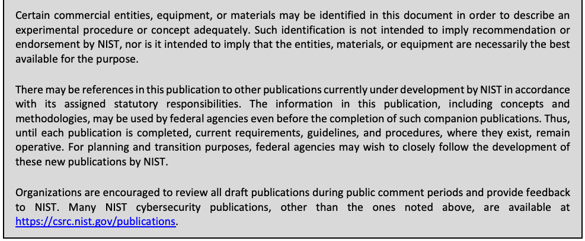
本書では、実験の手順や概念を適切に説明するために、特定の商業事業者、機器、または資材を挙げている場合があります。こうした記載は、NIST による推奨や推薦を意味するものではなく、挙げられた事業者、資材、または機器が目的に照らして必ずしも最良であることを意味するものでもありません。
There may be references in this publication to other publications currently under development by NIST in accordance with its assigned statutory responsibilities. The information in this publication, including concepts and methodologies, may be used by federal agencies even before the completion of such companion publications. Thus, until each publication is completed, current requirements, guidelines, and procedures, where they exist, remain operative. For planning and transition purposes, federal agencies may wish to closely follow the development of these new publications by NIST.
本刊行物には、NIST が割り当てられた法定責任に従って現在策定中の他の刊行物への言及が含まれている場合があります。関連刊行物が完成する前でも、連邦機関は、本刊行物の情報（概念や方法論を含む）を使用してもよいです。したがって、各刊行物が完成するまでは、現行の要件、ガイドライン、および手順が存在する場合、それらは引き続き有効です。計画および移行のため、連邦機関は、NIST によるこれらの新しい刊行物の策定状況を注意深く追うことを検討すべきです。
Organizations are encouraged to review all draft publications during public comment periods and provide feedback to NIST. Many NIST cybersecurity publications, other than the ones noted above, are available at https://csrc.nist.gov/publications.
組織には、パブリックコメント期間中にすべてのドラフト刊行物を確認し、NIST にフィードバックを提供することが推奨されています。上記以外の多くの NIST サイバーセキュリティ刊行物は、https://csrc.nist.gov/publications で入手できます。
Comments on this publication may be submitted to:
本刊行物へのコメントの送付先
National Institute of Standards and Technology Attn: Computer Security Division, Information Technology Laboratory 100 Bureau Drive (Mail Stop 8930) Gaithersburg, MD 20899-8930 Email: sec-cert@nist.gov
National Institute of Standards and Technology Attn: Computer Security Division, Information Technology Laboratory 100 Bureau Drive (Mail Stop 8930) Gaithersburg, MD 20899-8930 Email: sec-cert@nist.gov
All comments are subject to release under the Freedom of Information Act (FOIA).
すべてのコメントは、情報自由法（FOIA）に基づいて公開される場合があります。
Reports on Computer Systems Technology
コンピュータシステム技術に関する報告書
The Information Technology Laboratory (ITL) at the National Institute of Standards and Technology (NIST) promotes the U.S. economy and public welfare by providing technical leadership for the Nation’s measurement and standards infrastructure. ITL develops tests, test methods, reference data, proof of concept implementations, and technical analyses to advance the development and productive use of information technology. ITL’s responsibilities include the development of management, administrative, technical, and physical standards and guidelines for the cost-effective security and privacy of other than national security-related information in federal information systems.
国立標準技術研究所（NIST）の情報技術研究所（ITL）は、国の計測・標準インフラストラクチャに対する技術的リーダーシップを提供することで、米国の経済と公共の福祉を促進しています。ITL は、情報技術の開発と生産的な利用を推進するため、試験、試験方法、参照データ、概念実証の実装、および技術分析を開発しています。ITL の責務には、連邦情報システムにおいて、国家安全保障関連以外の情報のセキュリティとプライバシーを費用対効果の高い形で確保するための、管理、運用、技術、および物理の各面に関する標準およびガイドラインの策定が含まれます。
Abstract
概要
This publication describes an example methodology for assessing an organization’s Information Security Continuous Monitoring (ISCM) program. It was developed directly from NIST guidance and is applicable to any organization, public or private. It can be used as documented or as the starting point for a different methodology. Included with the methodology is a reference implementation that is directly usable for conducting an ISCM assessment.
本刊行物は、組織の情報セキュリティ継続的監視（ISCM）プログラムを評価するための方法論の例を示しています。この方法論は NIST のガイダンスから直接作成されており、公的か民間かを問わず、あらゆる組織に適用できます。記載のとおりに使用することも、別の方法論の出発点として使用することもできます。この方法論には、ISCM 評価の実施にそのまま使用できる参照実装が付属しています。
Keywords
キーワード
assessment; continuous monitoring; information security continuous monitoring; information security continuous monitoring assessment; ISCM; ISCMA; ISCMAx.
評価; 継続的監視; 情報セキュリティ継続的監視; 情報セキュリティ継続的監視評価; ISCM; ISCMA; ISCMAx。
Acknowledgments
謝辞
The authors wish to thank the numerous reviewers, and in particular Eduardo Takamura of NIST, Martin Stanley of CISA, and Robert L. Heinemann, Jr. of the MITRE Corporation, for their insightful feedback. The authors also gratefully acknowledge the contribution of the assessors at the Department of Homeland Security who piloted the initial version of the methodology described in this report. In addition, a special note of thanks goes to Jim Foti, Isabel Van Wyk, and the NIST web team for their outstanding administrative support.
著者らは、多くのレビュー担当者、とりわけ NIST の Eduardo Takamura、CISA の Martin Stanley、MITRE Corporation の Robert L. Heinemann, Jr. による示唆に富むフィードバックに感謝します。また、本報告書に記載された方法論の初期版を試行した国土安全保障省の評価担当者の貢献にも深く感謝します。加えて、Jim Foti、Isabel Van Wyk、および NIST ウェブチームによる卓越した事務的支援に特別の謝意を表します。
Audience
対象読者
The audience for this report consists of organizations desiring to establish or improve their ISCM programs, including federal, state, local, and tribal agencies, as well as private non-government organizations.
本報告書の対象読者は、ISCM プログラムの確立または改善を望む組織であり、連邦・州・地方・部族の機関のほか、民間の非政府組織を含みます。
Supplemental Content
補足コンテンツ
The ISCMAx tool – available from the NISTIR 8212 publication details page at: https://csrc.nist.gov/publications/detail/nistir/8212/final under “Supplemental Material” – is intended for use as a companion tool when conducting ISCM Program Assessment Reviews.
ISCMAx ツールは、NISTIR 8212 の刊行物詳細ページ（https://csrc.nist.gov/publications/detail/nistir/8212/final）の「Supplemental Material」から入手でき、ISCM プログラム評価レビューを実施する際の補助ツールとして使用することを意図しています。
Trademark Information
商標情報
All registered trademarks belong to their respective organizations.
登録商標はすべて、それぞれの組織に帰属します。
Patent Disclosure Notice
特許開示通知
NOTICE: The Information Technology Laboratory (ITL) has requested that holders of patent claims whose use may be required for compliance with the guidance or requirements of this publication disclose such patent claims to ITL. However, holders of patents are not obligated to respond to ITL calls for patents and ITL has not undertaken a patent search in order to identify which, if any, patents may apply to this publication.
通知: 情報技術研究所（ITL）は、本刊行物のガイダンスまたは要件への準拠に使用が必要となる可能性のある特許請求の権利者に対し、当該特許請求を ITL に開示するよう求めています。ただし、特許権者には ITL からの特許開示の求めに応じる義務はなく、ITL は、どの特許が本刊行物に該当するかを特定するための特許調査を行っていません。
As of the date of publication and following call(s) for the identification of patent claims whose use may be required for compliance with the guidance or requirements of this publication, no such patent claims have been identified to ITL.
発行日の時点で、本刊行物のガイダンスまたは要件への準拠に使用が必要となる可能性のある特許請求の特定を求める呼びかけを行った後も、そのような特許請求は ITL に特定されていません。
No representation is made or implied by ITL that licenses are not required to avoid patent infringement in the use of this publication.
ITL は、本刊行物の使用にあたって特許侵害を避けるためにライセンスが不要であることを、明示的にも黙示的にも表明するものではありません。
本刊行物の使い方
NISTIR 8212 provides an operational approach to the assessment of an organization’s Information Security Continuous Monitoring (ISCM) program using ISCMAx-a free, publicly-available, working implementation of the ISCM program assessment approach described in NIST Special Publication 800-137A, Assessing Information Security Continuous Monitoring (ISCM) Programs: Developing an ISCM Program Assessment. ISCMAx produces a detailed scorecard and associated graphical output and identifies conditions that may warrant further analysis. The ISCMAx tool is a Microsoft Excel application that runs on Windows-based systems only.
NISTIR 8212 は、組織の情報セキュリティ継続的監視（ISCM）プログラムを ISCMAx を用いて評価するための実践的なアプローチを示します。ISCMAx は、NIST Special Publication 800-137A, Assessing Information Security Continuous Monitoring (ISCM) Programs: Developing an ISCM Program Assessment に記載された ISCM プログラム評価アプローチの、無料で一般に公開されている実際に動作する実装です。ISCMAx は、詳細なスコアカードと関連するグラフ出力を作成し、さらなる分析が必要となる可能性のある状況を特定します。ISCMAx ツールは Microsoft Excel アプリケーションであり、Windows ベースのシステムでのみ動作します。
NISTIR 8212 provides complete instructions for using ISCMAx as provided and for tailoring ISCMAx, if desired. Download ISCMAx from https://csrc.nist.gov/publications/detail/nistir/8212/final under “Supplemental Material.”
NISTIR 8212 は、ISCMAx を提供されたまま使用する方法と、必要に応じて ISCMAx をカスタマイズする方法について、完全な手順を示しています。ISCMAx は、https://csrc.nist.gov/publications/detail/nistir/8212/final の「Supplemental Material」からダウンロードしてください。
Executive Summary
エグゼクティブサマリー
National Institute of Standards and Technology Interagency Report (NISTIR) 8212 provides an operational approach to the assessment of an organization’s Information Security Continuous Monitoring (ISCM) program.1 The ISCM assessment (ISCMA) approach is consistent with the ISCM Program Assessment described in NIST SP 800-137A [SP800-137A], Assessing Information Security Continuous Monitoring Programs: Developing an ISCM Program Assessment.
国立標準技術研究所省庁間報告書（NISTIR）8212 は、組織の情報セキュリティ継続的監視（ISCM）プログラムを評価するための実践的なアプローチを示します。1 ISCM 評価（ISCMA）アプローチは、NIST SP 800-137A [SP800-137A], Assessing Information Security Continuous Monitoring Programs: Developing an ISCM Program Assessment に記載された ISCM プログラム評価と整合しています。
Included with the ISCMA approach in this report is the ISCMAx tool [ISCMAx], a free, publicly available, working implementation of ISCMA that can be tailored to fit the needs of an organization. The ISCMAx tool is a Microsoft Excel application that runs on Windows-based systems only. This report includes instructions for using ISCMAx as provided and for tailoring it, if desired.
本報告書の ISCMA アプローチには、ISCMAx ツール [ISCMAx] が付属しています。これは ISCMA の、無料で一般に公開されている実際に動作する実装であり、組織のニーズに合わせてカスタマイズできます。ISCMAx ツールは Microsoft Excel アプリケーションであり、Windows ベースのシステムでのみ動作します。本報告書には、ISCMAx を提供されたまま使用する方法と、必要に応じてカスタマイズする方法の手順が含まれています。
ISCMAx is suited for self-assessment by organizations of any size or complexity. Organizations choose the desired breadth and depth of the assessment. Breadth options are provided for organizations ranging from those that already have functioning ISCM programs to those that are just starting. Depth options allow organizations to focus on the more critical aspects of the program, followed by details and nuances.
ISCMAx は、規模や複雑さを問わず、あらゆる組織による自己評価に適しています。組織は、評価の希望する広さと深さを選択します。広さの選択肢は、すでに機能する ISCM プログラムを持つ組織から、始めたばかりの組織までを対象としています。深さの選択肢により、組織はまずプログラムのより重要な側面に集中し、その後に詳細や細部に取り組むことができます。
The ISCMA is designed around participation by personnel from the following risk management levels2 and associated ISCM responsibilities:
ISCMA は、次のリスクマネジメントレベル2の要員の参加と、それに関連する ISCM の責任を前提として設計されています。
•Level 1 personnel are responsible for the organization-wide ISCM strategy, policies, procedures, and implementation.
•レベル 1 の要員は、組織全体の ISCM 戦略、ポリシー、手順、および実装に責任を負います。
•Level 2 personnel are responsible for the ISCM strategy, policies, procedures, and implementation for specific mission or business processes.
•レベル 2 の要員は、特定のミッションまたは業務プロセスに関する ISCM 戦略、ポリシー、手順、および実装に責任を負います。
•Level 3 personnel are responsible for ISCM strategy, policies, procedures, and implementation for individual information systems.
•レベル 3 の要員は、個々の情報システムに関する ISCM 戦略、ポリシー、手順、および実装に責任を負います。
At each risk management level, an ISCMA unique to that level is conducted. Judgments are made about assessment elements, which are statements that should be true for a well-implemented ISCM program. Under ISCMA, an assessment with the maximum breadth and depth consists of 128 assessment elements. The results for each risk management level are then merged into a single overall result.
各リスクマネジメントレベルで、そのレベル固有の ISCMA が実施されます。評価要素について判断が下されます。評価要素とは、適切に実装された ISCM プログラムであれば真であるはずの記述です。ISCMA では、最大の広さと深さによる評価は 128 の評価要素で構成されます。その後、各リスクマネジメントレベルの結果が統合され、単一の総合結果になります。
The ISCMA process proceeds according to the following steps:
ISCMA のプロセスは、次の手順で進みます。
•Plan the approach
•アプローチの計画
•Conduct: Evaluate the elements
•実施: 要素の評価
•Conduct: Score the judgments
•実施: 判断のスコア付け
•Report: Analyze the results
•報告: 結果の分析
•Report and Follow-on: Formulate actions
•報告とフォローオン: 措置の策定
Part of the “Plan the Approach” step is to determine how to organize the selected participants at each risk management level. For example, all participants from Level 2 could conduct a single ISCMA as a group with judgments made by consensus. Alternatively, participants from each mission or business process could conduct individual assessments in parallel and allow [ISCMAx] to assemble and merge those assessments. In the latter case, the most common judgment of all the individual assessments is the overall judgment for a risk management level.
「アプローチの計画」ステップの一部として、選定した参加者を各リスクマネジメントレベルでどのように編成するかを決定します。たとえば、レベル 2 の参加者全員が一つのグループとして単一の ISCMA を実施し、合意によって判断を下すことができます。あるいは、ミッションまたは業務プロセスごとの参加者が個別の評価を並行して実施し、それらの評価を [ISCMAx] に集約・統合させることもできます。後者の場合、個々の評価すべてのうち最も多い判断が、そのリスクマネジメントレベルの総合判断となります。
ISCMAx produces a detailed scorecard and associated graphical output. It also automatically reports conditions that may warrant further analysis, such as:
ISCMAx は、詳細なスコアカードと関連するグラフ出力を作成します。また、次のような、さらなる分析が必要となる可能性のある状況も自動的に報告します。
•Elements where the overall organizational judgment is weakest
•組織全体の総合判断が最も弱い要素
•Elements where different risk management levels have widely divergent judgments
•リスクマネジメントレベル間で判断が大きく分かれている要素
Table of Contents
目次
List of Appendices
付録の一覧
List of Figures
図の一覧
List of Tables
表の一覧
1 Introduction
1 はじめに
1.1 Purpose and Scope
1.1 目的と適用範囲
The purpose of National Institute of Standards and Technology Interagency Report (NISTIR) 8212 is to provide an operational approach to the assessment of an organization’s Information Security Continuous Monitoring (ISCM) program.
国立標準技術研究所省庁間報告書（NISTIR）8212 の目的は、組織の情報セキュリティ継続的監視（ISCM）プログラムを評価するための実践的なアプローチを示すことです。
A robust ISCM program integrates continuous improvements in all aspects of an ISCM program, including people, processes, technology, and data. To help ensure that all aspects of the ISCM program continue to be effective and operate as intended, each aspect of the ISCM program is assessed periodically, much like security controls. This report describes an ISCM program assessment (ISCMA) that is based on NIST guidance and is adaptable to specific organizational requirements. In addition, included with this report is [ISCMAx]—a free, publicly-available implementation of ISCMA.
堅牢な ISCM プログラムは、人、プロセス、技術、データなど、ISCM プログラムのあらゆる側面における継続的な改善を統合します。ISCM プログラムのすべての側面が引き続き有効であり、意図したとおりに動作することを確実にするため、ISCM プログラムの各側面は、セキュリティ管理策と同様に定期的に評価されます。本報告書は、NIST のガイダンスに基づき、組織固有の要件に合わせて調整できる ISCM プログラム評価（ISCMA）について説明します。加えて、本報告書には、ISCMA の無料で一般に公開されている実装である [ISCMAx] が付属しています。
1.2 Target Audience
1.2 対象読者
The target audience for this report consists of organizations that wish to establish or improve their ISCM programs, including federal, state, local, and tribal agencies, as well as private non-government organizations.
本報告書の対象読者は、ISCM プログラムの確立または改善を望む組織であり、連邦・州・地方・部族の機関のほか、民間の非政府組織を含みます。
1.3 Relationship to Other NIST Documents
1.3 他の NIST 文書との関係
This report is based on the following NIST guidance documents:
本報告書は、次の NIST ガイダンス文書に基づいています:
•NIST SP 800-137 [SP800-137] describes the desirable properties of an ISCM program and the process for establishing an ISCM program in an organization.
•NIST SP 800-137 [SP800-137] は、ISCM プログラムの望ましい特性と、組織で ISCM プログラムを確立するためのプロセスを説明しています。
•NIST SP 800-137A [SP800-137A] provides guidance on the development of an ISCM program assessment and describes the desirable properties of an ISCM program assessment methodology and the process for assessing the effectiveness of an ISCM program in an organization. The assessment methodology described in SP 800-137A has been followed in this report and implemented in the [ISCMAx] companion tool.
•NIST SP 800-137A [SP800-137A] は、ISCM プログラム評価の策定に関するガイダンスを提供し、ISCM プログラム評価方法論の望ましい特性と、組織の ISCM プログラムの有効性を評価するためのプロセスを説明しています。SP 800-137A に記載された評価方法論は、本報告書で踏襲されており、補助ツール [ISCMAx] に実装されています。
The relationship between the guidance documents, this report, and the accompanying tool is represented in Figure 1.
これらのガイダンス文書、本報告書、および付属ツールの関係を図 1 に示します。

長方形の枠の中に、青い角の丸い4つの箱が左上から右下へ階段状に並び、下へ曲がって右へ向かう薄青色の矢印で順につながっている図です。各箱の右には箇条書きの注記があります。「SP 800-137」には「ISCM Programs」（ISCM プログラム）、「SP 800-137A」には「ISCM Program Assessment Development」（ISCM プログラム評価の策定）、「NISTIR 8212 (ISCMA)」には「Example ISCM Program Assessment」（ISCM プログラム評価の例）、「NISTIR 8212 (ISCMAx)」には「Reference Implementation of ISCMA」（ISCMA の参照実装）と書かれています。
Figure 1 – NIST ISCM Document Relationship
図 1 – NIST ISCM 文書の関係
1.4 Organization of this Report
1.4 本報告書の構成
Section 2 provides a summary of the key underpinnings of the ISCMA methodology. Section 3 describes the ISCMA Tool, [ISCMAx], that is provided in a separate companion file as a reference implementation of ISCMA. Section 4 describes the overall assessment report that results from using ISCMAx at all risk management levels. Section 5 discusses ways in which both the ISCMA and ISCMAx can be tailored to better meet specific organizational requirements.
セクション 2 では、ISCMA 方法論の主要な基盤を要約します。セクション 3 では、ISCMA の参照実装として別の補助ファイルで提供される ISCMA ツール [ISCMAx] について説明します。セクション 4 では、すべてのリスクマネジメントレベルで ISCMAx を使用した結果として得られる全体の評価報告書について説明します。セクション 5 では、特定の組織要件によりよく適合させるために ISCMA と ISCMAx の両方をテーラリングする方法を論じます。
This report discusses a set of Assessment Elements, which form the foundation of ISCMA, but it does not include a complete list. All assessment elements can be found in the ISCMAx tool, as well as in the assessment element catalog [Catalog] that accompanies [SP800-137A].
本報告書は、ISCMA の基礎となる一連の評価要素を論じていますが、完全な一覧は含んでいません。すべての評価要素は、ISCMAx ツールのほか、[SP800-137A] に付属する評価要素カタログ [Catalog] にあります。
2 ISCMA: An ISCM Program Assessment
2 ISCMA: ISCM プログラム評価
ISCMA is a specific example of an ISCM program assessment based on the guidelines described in [SP800-137A], which outlines the decisions that are made in establishing an ISCM program assessment, and the assessment template provided by the ISCMA element [Catalog], which establishes the ISCMA elements and their attributes. Organizations may make different assessment decisions in accordance with their individual requirements.
ISCMA は、[SP800-137A] に記載されたガイドラインに基づく ISCM プログラム評価の具体例です。[SP800-137A] は、ISCM プログラム評価を確立する際に下される決定を概説しています。また、ISCMA 要素 [Catalog] が提供する評価テンプレートは、ISCMA の要素とその属性を定めています。組織は、個々の要件に応じて異なる評価上の決定を下してもかまいません。
2.1 Design Principles
2.1 設計原則
ISCMA follows the ISCM program assessment development process described in [SP800-137A]. Table 1 lists the design principles of ISCMA and describes the ISCMA features that support them.
ISCMA は、[SP800-137A] に記載された ISCM プログラム評価の策定プロセスに従っています。表 1 に ISCMA の設計原則を挙げ、それらを支える ISCMA の機能を説明します。
Table 1 – Key ISCMA Design Principles
表 1 – ISCMA の主要な設計原則
| Design Principle | ISCMA/ISCMAx Implementation |
|---|---|
| Capable of adapting as organizational ISCM programs mature | Choice of breadth (Section 2.4) and depth (Section 2.8.1) |
| Adaptable to the structure of the organization being assessed (e.g., centralized vs. decentralized) | Distributed assessment support (Section 2.2) |
| Applicable to any size organization | Distributed assessment support (Section 2.2) |
| Produce actionable results | Recommendation support (Sections 4.6 and 4.7) |
| Allow more granular reporting choices within the primary judgments | Judgment system (Section 2.6) |
| 設計原則 | ISCMA/ISCMAx の実装 |
|---|---|
| 組織の ISCM プログラムの成熟に合わせて適応できること | 広さ（セクション 2.4）と深さ（セクション 2.8.1）の選択 |
| 評価対象の組織の構造（例: 集中型か分散型か）に適応できること | 分散評価のサポート（セクション 2.2） |
| あらゆる規模の組織に適用できること | 分散評価のサポート（セクション 2.2） |
| 実行可能な結果を生み出すこと | 推奨事項のサポート（セクション 4.6 および 4.7） |
| 主要な判断の中で、より細かい粒度の報告を選択できること | 判断の仕組み（セクション 2.6） |
2.2 Engagement Types
2.2 エンゲージメントの種類
ISCMA supports the engagement types described in [SP800-137A] and shown in Table 2.
ISCMA は、[SP800-137A] に記載され、表 2 に示されたエンゲージメントの種類をサポートします。
Table 2 – Assessment Engagement Types
表 2 – 評価エンゲージメントの種類
| Engagement Type | Description |
|---|---|
| External Assessment Engagement | Formal engagement facilitated by a third-party assessment organization that makes the judgments about each element. An external assessment is conducted by trained staff and provides the greatest objectivity. |
| Internal Assessment Engagement | Formal engagement facilitated by a team within the organization that makes the judgments about each element. |
| Facilitated Self-Assessment | A less formal engagement facilitated by a team within the organization that records element judgments based on participant consensus. |
| Distributed Self-Assessment | The least formal type of assessment led by an internal team that coordinates the distribution of judgment-making to small groups that work in parallel. A group can consist of as few as one person. The individual results are then assembled, combined by algorithm, analyzed, and presented to the organization for action. |
| エンゲージメントの種類 | 説明 |
|---|---|
| 外部評価エンゲージメント | 各要素について判断を下す第三者評価組織が進行する、正式なエンゲージメント。外部評価は訓練を受けた要員が実施し、最大の客観性が得られます。 |
| 内部評価エンゲージメント | 各要素について判断を下す組織内のチームが進行する、正式なエンゲージメント。 |
| ファシリテーション型自己評価 | 参加者の合意に基づいて要素の判断を記録する組織内のチームが進行する、より非公式なエンゲージメント。 |
| 分散型自己評価 | 最も非公式な種類の評価で、内部チームが主導し、判断の作成を、並行して作業する小グループに振り分けるよう調整します。グループは 1 人だけで構成してもかまいません。その後、個々の結果が集約され、アルゴリズムによって統合され、分析されて、組織が措置を講じるために提示されます。 |
Support for the distributed self-assessment engagement type drives much of the design of ISCMA.
分散型自己評価のエンゲージメントの種類をサポートすることが、ISCMA の設計の多くを方向づけています。
2.3 Assessment Elements
2.3 評価要素
The primary data construct of the ISCMA methodology is an assessment element, usually referred to in this report simply as an element. Each element is a statement about an ISCM program that is expected to be true for a well-designed and well-implemented program.
ISCMA 方法論の主要なデータ構成要素は評価要素であり、本報告書では通常、単に要素と呼びます。各要素は、ISCM プログラムに関する記述であり、適切に設計され適切に実装されたプログラムであれば真であると期待されるものです。
ISCMA implements the complete set of elements defined in [SP800-137A]. The elements were identified in SP 800-137A as being representative of the fundamental concepts of ISCM. Each element is associated with a single ISCM process step, as defined in [SP800-137]. Elements are related to each other by a parent-child relationship if the elements represent the same ISCM concept but in adjacent process steps, as described in SP 800-137A.
ISCMA は、[SP800-137A] で定義された要素の完全な集合を実装しています。これらの要素は、SP 800-137A において、ISCM の基本概念を代表するものとして特定されました。各要素は、[SP800-137] で定義された単一の ISCM プロセスステップに関連付けられます。SP 800-137A に記載のとおり、要素が同じ ISCM 概念を隣接するプロセスステップで表している場合、それらの要素は親子関係で互いに関連付けられます。
For example, the element, “The ISCM strategy addresses security control assessments with a degree of rigor appropriate to risk” is associated with the ISCM Define process step. A child element, associated with the ISCM Establish process step, is “The ISCM program specifies, for each security control, a frequency for its assessment that is appropriate to risk.” These two elements represent the same ISCM concept at adjacent stages of the ISCM process. The concept is first addressed in the ISCM strategy then addressed in more detail by the ISCM Establish process step.
たとえば、要素「ISCM 戦略は、リスクに応じた厳密さの度合いでセキュリティ管理策評価に対処している」は、ISCM の Define プロセスステップに関連付けられています。ISCM の Establish プロセスステップに関連付けられた子要素は、「ISCM プログラムは、各セキュリティ管理策について、リスクに応じた評価頻度を規定している」です。これら二つの要素は、ISCM プロセスの隣接する段階における同じ ISCM 概念を表しています。この概念は、まず ISCM 戦略で扱われ、その後、ISCM の Establish プロセスステップでより詳細に扱われます。
The information fields for the assessment elements are shown in Table 3.
評価要素の情報フィールドを表 3 に示します。
Table 3 – Assessment Element Information Fields
表 3 – 評価要素の情報フィールド
| Attribute | Description |
|---|---|
| Identifier (ID) | The element’s unique identifier. |
| Assessment Element Text | A statement that should be true for a well-implemented ISCM program. |
| Level | The appropriate risk management level(s) for element evaluation (see Section 2.5). |
| Source | The primary source document for an element’s subject matter. |
| Critical | A Yes/No indicator signifying that an element is of greater importance than non-critical elements. See [SP800-137A] for the criteria for this designation. |
| Assessment Procedure | A procedure defining the steps to be taken to meet an assessment objective for each assessment element, including one or more determination statements on which to make judgments as described in section 2.6. Assessment procedures are defined in [SP800-137A]. |
| Discussion | Assistance and explanation to facilitate consistent evaluation of the element. The discussion is taken directly from [Catalog]. |
| Rationale for Level | Rationale for why the assessment element is assigned to a particular risk management level(s). |
| Parent | The element, if any, associated with the previous process step that represents the same ISCM concept as the current element. |
| 属性 | 説明 |
|---|---|
| 識別子（ID） | 要素の一意の識別子。 |
| 評価要素テキスト | 適切に実装された ISCM プログラムであれば真であるはずの記述。 |
| レベル | 要素の評価に適したリスクマネジメントレベル（セクション 2.5 を参照）。 |
| 出典 | 要素の主題に関する主要な出典文書。 |
| 重要（Critical） | 要素が非重要の要素よりも重要度が高いことを示す Yes/No の指標。この指定の基準については [SP800-137A] を参照してください。 |
| 評価手順 | 各評価要素の評価目的を満たすために講じるステップを定義した手順。セクション 2.6 に記載のとおり、判断を下す根拠となる一つ以上の判定記述を含みます。評価手順は [SP800-137A] で定義されています。 |
| 解説 | 要素の一貫した評価を促進するための補助と説明。解説は [Catalog] から直接引用したものです。 |
| レベルの根拠 | 当該評価要素が特定のリスクマネジメントレベルに割り当てられている理由の根拠。 |
| 親 | 現在の要素と同じ ISCM 概念を表す、前のプロセスステップに関連付けられた要素（ある場合）。 |
2.4 Incremental Assessments
2.4 段階的な評価
ISCMA may be used in an incremental fashion, as described in [SP800-137A], to encourage ongoing reassessment of ISCM programs as the programs develop and mature. In this way, ISCM programs can be assessed—regardless of program development state or maturity—with a focus on aspects of the ISCM program that are in place.
ISCMA は、[SP800-137A] に記載されているように、ISCM プログラムが発展・成熟するにつれて継続的な再評価を促すため、段階的に使用してもかまいません。このようにすれば、ISCM プログラムは、その開発状況や成熟度にかかわらず、すでに整っている ISCM プログラムの側面に焦点を当てて評価できます。
ISCMA fully supports incremental assessments that limit the ISCM process steps to be assessed:
ISCMA は、評価対象とする ISCM プロセスステップを限定する段階的な評価を完全にサポートします。
•Define only for an assessment of the ISCM strategy
•ISCM 戦略の評価では Define のみ
•Define and Establish only for an assessment of the ISCM program design
•ISCM プログラム設計の評価では Define と Establish のみ
•Define, Establish, and Implement only for an assessment of the ISCM program implementation
•ISCM プログラム実装の評価では Define、Establish、Implement のみ
•All process steps for full assessment of the entire breadth of the ISCM program
•ISCM プログラムの全範囲にわたる完全な評価では、すべてのプロセスステップ
In addition, ISCMA supports incremental assessments of only those elements identified as critical using the criteria defined in [SP800-137A]. The critical assessment elements are not shown in this report but can be found in [ISCMAx] and in the SP 800-137A element [Catalog].
加えて、ISCMA は、[SP800-137A] で定義された基準により重要と特定された要素のみの段階的な評価もサポートします。重要な評価要素は本報告書には示していませんが、[ISCMAx] と SP 800-137A の要素 [Catalog] で確認できます。
2.5 Risk Management Levels
2.5 リスクマネジメントレベル
Risk management levels are defined in [SP800-39] and are fundamental to the evaluation of assessment elements.
リスクマネジメントレベルは [SP800-39] で定義されており、評価要素の評価の基本となります。
•Level 1 personnel are responsible for the organization-wide risk ISCM strategy, policies, procedures, and implementation.
•レベル 1 の要員は、組織全体のリスクに関する ISCM 戦略、ポリシー、手順、および実装に責任を負います。
•Level 2 personnel are responsible for the ISCM strategy, policies, procedures, and implementation for specific mission or business processes.
•レベル 2 の要員は、特定のミッションまたは業務プロセスに関する ISCM 戦略、ポリシー、手順、および実装に責任を負います。
•Level 3 personnel are responsible for ISCM strategy, policies, procedures, and implementation for individual information systems.
•レベル 3 の要員は、個々の情報システムに関する ISCM 戦略、ポリシー、手順、および実装に責任を負います。
In ISCMA, a given assessment element is evaluated separately at one, two, or (in some cases) all three risk management levels. Evaluation at separate levels facilitates the exposure of any miscommunication among the levels. Each level conducts its own ISCMA consisting of all and only the assessment elements specifically assigned to be evaluated at that level. The overall organizational ISCMA is then derived by combining the results from the three levels.
ISCMA では、ある評価要素は、一つ、二つ、または（場合によっては）三つすべてのリスクマネジメントレベルで個別に評価されます。レベルごとに個別に評価することで、レベル間のあらゆる意思疎通の齟齬が明らかになりやすくなります。各レベルは、そのレベルでの評価に特に割り当てられたすべての（かつそれのみの）評価要素からなる、独自の ISCMA を実施します。その後、三つのレベルの結果を組み合わせて、組織全体の ISCMA を導き出します。
The full scope of an ISCMA engagement determines the scope of the levels. For example, if a Level 2 organization within a larger organization uses ISCMA for itself (i.e., outside of the context of the full organization), then it considers itself Level 1 for the purposes of the ISCMA.
レベルの範囲は、ISCMA エンゲージメントの全体の範囲によって決まります。たとえば、より大きな組織の中のレベル 2 の組織が自らのために（すなわち、組織全体の文脈の外で）ISCMA を使用する場合、その組織は ISCMA の目的上、自らをレベル 1 とみなします。
There are two distinct logistical approaches to conducting an ISCMA at Level 2 (or similarly, at Level 3):
レベル 2（同様にレベル 3）で ISCMA を実施するための運営上のアプローチには、二つの異なるものがあります。
1.Each Level 2 organization addresses the Level 2 assessment elements from its own perspective with no consideration given to assessments occurring in other Level 2 organizations. This is the preferred approach because the results are more focused, and misunderstandings are more fully exposed. It is particularly well-suited for a distributed self-assessment.
1.各レベル 2 組織は、ほかのレベル 2 組織で行われている評価を考慮せず、自らの観点からレベル 2 の評価要素に対処します。これは、結果の焦点がより明確になり、誤解がより十分に明らかになるため、推奨されるアプローチです。分散型自己評価に特に適しています。
または
2.Multiple Level 2 organizations come together and address the Level 2 assessment elements from a group perspective using consensus to determine a single judgment for each element. This approach is less accurate but does provide an opportunity for the groups to learn from one another and is frequently used with facilitated engagements.
2.複数のレベル 2 組織が集まり、合意によって各要素の単一の判断を決定することで、グループの観点からレベル 2 の評価要素に対処します。このアプローチは正確性が劣りますが、グループが互いに学び合う機会となるため、ファシリテーション型のエンゲージメントでよく使われます。
2.6 Judgments
2.6 判断
Following [SP800-137A], the ISCMA uses the term judgment for the descriptive evaluation of an element. Each judgment is also mapped to a numeric score that can be used to calculate an overall assessment score.
[SP800-137A] に倣い、ISCMA は、要素の記述的な評価を指して判断という用語を使います。各判断は数値のスコアにも対応付けられ、そのスコアを使って評価全体のスコアを算出できます。
判断の値
[SP800-137A] recommends a two-value judgment set consisting of the values Satisfied and Other Than Satisfied while recognizing that additional, more granular judgments may help organizations with prioritizing corrective actions for ISCM program improvements.
[SP800-137A] は、Satisfied と Other Than Satisfied の二つの値からなる判断の集合を推奨しています。一方で、より細かい粒度の追加の判断が、ISCM プログラム改善のための是正措置の優先順位付けに役立つ場合があることも認めています。
An alternate judgment set consisting of four values was developed for ISCMA to facilitate program improvement prioritization. The alternate judgment set consists of the values Mostly/Completely True, Somewhat True, Mostly False, and Completely False.
ISCMA では、プログラム改善の優先順位付けを促すため、四つの値からなる代替の判断集合が開発されました。代替の判断集合は、Mostly/Completely True、Somewhat True、Mostly False、Completely False の値で構成されます。
The alternate judgments for each element provide organizations with a degree of granularity in assessing ISCM accomplishments that fall short of the pure definition of “True.” In addition, there is no neutral judgment—a judgment either leans toward true or false.
各要素の代替判断により、組織は、「True」の純粋な定義に届かない ISCM の達成度を、ある程度の粒度で評価できます。加えて、中立の判断はなく、判断は真と偽のどちらかに傾きます。
There is intentionally no distinction between Mostly True and Completely True in order to focus the organization’s attention on making progress on its most neglected elements by diverting attention from elements that are being done well but not perfectly. The Completely False judgment is reserved for elements that have not been addressed at all by the organization. If the element is true anywhere in the organization and to any degree, then it is at least Mostly False.
Mostly True と Completely True の間には、意図的に区別がありません。これは、うまく行われているが完璧ではない要素から注意をそらし、組織の注意を最も手薄な要素の前進に向けさせるためです。Completely False の判断は、組織がまったく対処していない要素のために取っておかれます。その要素が組織内のどこかで何らかの程度でも真であれば、少なくとも Mostly False になります。
Assessing an element using the provided alternate judgment set or any other granular set begins by determining if the strongest possible judgment (i.e., Mostly/Completely True) is applicable. If the strongest judgment does not apply, then the most appropriate remaining judgment is selected. Use of a more granular judgment set does not add any new information to the resulting assessment since assessors add notes to explain judgment choices regardless of the judgment set used. However, the additional granularity facilitates analysis in ISCMAx, as described in Section 4.6.
提供された代替の判断集合、またはその他の粒度の細かい集合を使って要素を評価するには、まず、最も強い判断（すなわち Mostly/Completely True）が適用できるかどうかを判断します。最も強い判断が当てはまらない場合は、残りの判断から最も適切なものを選びます。どの判断集合を使う場合でも、評価者は判断の選択を説明するメモを追加するため、より粒度の細かい判断集合を使っても、得られる評価に新しい情報は加わりません。しかし、セクション 4.6 で説明するように、追加された粒度は ISCMAx での分析を容易にします。
The examples throughout this report will illustrate both the recommended and the alternate judgment sets. In addition, ISCMAx is provided in two configurations: one preconfigured for the recommended judgment set and one preconfigured for the alternate judgment set.
本報告書全体の例では、推奨の判断集合と代替の判断集合の両方を示します。加えて、ISCMAx は、推奨の判断集合用にあらかじめ構成されたものと、代替の判断集合用にあらかじめ構成されたものの、二つの構成で提供されます。
2.7 Reporting Views
2.7 報告ビュー
A reporting view (or simply view) is a way of arranging assessment elements into groups such that each element is in exactly one group.
報告ビュー（単にビューとも）とは、各要素がちょうど一つのグループに属するように、評価要素をグループに配置する方法です。
Views can be useful as structures for organizing the assessment elements for reporting and analysis. For example, every element is associated with a unique Process Step, so separate ISCMA scores can be calculated for each Process Step (e.g., a score for Define, a score for Establish).
ビューは、報告と分析のために評価要素を整理する構造として役立ちます。たとえば、すべての要素は一意のプロセスステップに関連付けられているため、プロセスステップごと（例: Define のスコア、Establish のスコア）に個別の ISCMA スコアを算出できます。
The remainder of this section describes the reporting views defined by ISCMA. [ISCMAx] produces a separate scorecard and graphical report for each view (see Figure 27).
本セクションの残りでは、ISCMA が定義する報告ビューについて説明します。[ISCMAx] は、ビューごとに個別のスコアカードとグラフ報告を作成します（図 27 を参照）。
2.7.1 Section View
2.7.1 セクションビュー
Section is the default primary reporting view and was created specifically to facilitate navigation through the assessment elements during the ISCMA. The section names are modeled directly after the subject matter of the associated elements. The section names are identical to the labels on the chains in the [Catalog].
セクションは既定の主要な報告ビューであり、ISCMA の実施中に評価要素間を移動しやすくするために特に作られました。セクション名は、関連する要素の主題をそのまま模したものです。セクション名は、[Catalog] のチェーンのラベルと同一です。
When assessment elements are presented for consideration to the ISCMA participants, they must be presented in some order, but ISCMA does not prescribe any specific way to organize the elements for conducting the assessment and making judgments. The elements are each self-sufficient and can be addressed in any order. However, considering elements by Section is recommended for conducting the ISCMA. For example, all elements related to ISCM Strategy Management are considered as a group, while all elements related to ISCM Resources are considered as a separate group.
評価要素を ISCMA 参加者に検討のため提示する際には、何らかの順序で提示しなければなりませんが、ISCMA は、評価を実施して判断を下すために要素を整理する特定の方法を規定していません。各要素はそれだけで完結しており、どの順序で扱ってもかまいません。ただし、ISCMA を実施する際は、セクションごとに要素を検討することが推奨されます。たとえば、ISCM 戦略管理に関するすべての要素をひとまとまりとして検討し、ISCM リソースに関するすべての要素を別のまとまりとして検討します。
The full list of sections is shown in Table 4.
セクションの全一覧を表 4 に示します。
Table 4 – Section View
表 4 – セクションビュー
| Section Name | Description |
|---|---|
| ISCM Strategy Management | Elements related to the breadth and depth of the ISCM strategy |
| System Level Strategy | Elements related specifically to ISCM strategy at the system level |
| ISCM Program Management | Elements related to the design and management of the ISCM program |
| Control Assessment Rigor | Elements related to the relationship between control assessments and risk |
| Security Status Monitoring | Elements related to the monitoring of ISCM data and metrics |
| Common Control Assessment | Elements related to the assessment of common controls |
| System-Specific Control Assessment | Elements related to the assessment of system-specific controls |
| ISCM Results Included in Risk Assessment | Elements related to the use of ISCM in risk assessment |
| Threat Information | Elements related to the awareness and monitoring of cyber threat data |
| External Service Providers | Elements related to the external hosting of assets |
| Security-Focused Configuration Management | Elements related to the processes for managing security configurations |
| Impact of Changes to Systems and Environments | Elements related to security impact analysis |
| External Security Service Providers | Elements related to the relationship between external security service providers and ISCM data |
| Security Monitoring Tools | Elements related to the procedures for using security monitoring tools |
| Sampling | Elements related to managing object sampling |
| Risk Response | Elements related to responses to risks |
| Ongoing Authorization | Elements related to the use of ISCM metrics to inform decisions about allowing systems to continue to operate on the organization’s network |
| Acquisition Decisions | Elements related to the use of ISCM results in making acquisition decisions |
| ISCM Resources | Elements related to the processes for managing the ISCM human resources |
| ISCM Training | Elements related to the provision of training in ISCM |
| Metrics | Elements related to the regular reporting and use of ISCM metrics |
| Security Status Reporting | Elements related to the reporting of security status |
| Data | Elements related to the quality of ISCM data |
| ISCM Program Governance | Elements related to the approval processes used to manage the ISCM program |
| セクション名 | 説明 |
|---|---|
| ISCM戦略管理（ISCM Strategy Management） | ISCM戦略の範囲と深度に関する要素 |
| システムレベルの戦略（System Level Strategy） | システムレベルのISCM戦略に特化した要素 |
| ISCMプログラム管理（ISCM Program Management） | ISCMプログラムの設計と管理に関する要素 |
| 管理策評価の厳密さ（Control Assessment Rigor） | 管理策評価とリスクとの関係に関する要素 |
| セキュリティ状況の監視（Security Status Monitoring） | ISCMデータとメトリクスの監視に関する要素 |
| 共通管理策の評価（Common Control Assessment） | 共通管理策の評価に関する要素 |
| システム固有の管理策の評価（System-Specific Control Assessment） | システム固有の管理策の評価に関する要素 |
| リスクアセスメントに含まれるISCMの結果（ISCM Results Included in Risk Assessment） | リスクアセスメントにおけるISCMの利用に関する要素 |
| 脅威情報（Threat Information） | サイバー脅威データの把握と監視に関する要素 |
| 外部サービスプロバイダー（External Service Providers） | 資産の外部ホスティングに関する要素 |
| セキュリティに重点を置いた構成管理（Security-Focused Configuration Management） | セキュリティ構成を管理するプロセスに関する要素 |
| システムおよび環境への変更の影響（Impact of Changes to Systems and Environments） | セキュリティ影響分析に関する要素 |
| 外部セキュリティサービスプロバイダー（External Security Service Providers） | 外部セキュリティサービスプロバイダーとISCMデータとの関係に関する要素 |
| セキュリティ監視ツール（Security Monitoring Tools） | セキュリティ監視ツールを使用する手順に関する要素 |
| サンプリング（Sampling） | オブジェクトのサンプリングの管理に関する要素 |
| リスク対応（Risk Response） | リスクへの対応に関する要素 |
| 継続的認可（Ongoing Authorization） | システムが組織のネットワーク上で稼働し続けることを許可する判断に情報を提供するためのISCMメトリクスの利用に関する要素 |
| 調達の意思決定（Acquisition Decisions） | 調達の意思決定におけるISCMの結果の利用に関する要素 |
| ISCMリソース（ISCM Resources） | ISCMの人的資源を管理するプロセスに関する要素 |
| ISCMトレーニング（ISCM Training） | ISCMに関するトレーニングの提供に関する要素 |
| メトリクス（Metrics） | ISCMメトリクスの定期的な報告と利用に関する要素 |
| セキュリティ状況の報告（Security Status Reporting） | セキュリティ状況の報告に関する要素 |
| データ（Data） | ISCMデータの品質に関する要素 |
| ISCMプログラムガバナンス（ISCM Program Governance） | ISCMプログラムの管理に用いられる承認プロセスに関する要素 |
2.7.2 Perspective View
2.7.2 観点ビュー
Perspective is a view intended to highlight specific themes that are central to ISCM but cut across sections. The list of perspectives is shown in Table 5.
観点は、ISCM の中核をなす一方でセクションをまたぐ特定のテーマを際立たせることを意図したビューです。観点の一覧を表 5 に示します。
Table 5 – Perspective View
表 5 – 観点ビュー
| Perspective | Description |
|---|---|
| Sustainment | Elements that are specifically designed to ensure that the ISCM program endures in the organization |
| Utilization | Elements that are related to the usefulness of the ISCM program in other business processes |
| Readiness | Elements that are designed to ensure that the ISCM program results are sufficiently robust to reliably inform ongoing authorization decisions |
| Adoption | All other elements related to a complete adoption of ISCM into the organization. |
| 観点 | 説明 |
|---|---|
| 持続（Sustainment） | ISCM プログラムが組織に定着し続けることを確実にするために特に設計された要素 |
| 活用（Utilization） | ISCM プログラムの他の業務プロセスにおける有用性に関連する要素 |
| 準備（Readiness） | ISCM プログラムの結果が、継続的認可の意思決定に確実に情報を提供できるほど十分に堅牢であることを確実にするために設計された要素 |
| 採用（Adoption） | ISCM の組織への完全な採用に関連するその他すべての要素。 |
2.7.3 ISCM Process Step View
2.7.3 ISCM プロセスステップビュー
The ISCM Process Step view reflects the SP 800-137 ISCM process step that the element most directly supports and can be useful for analyzing and reporting results. Section 2.4 describes the use of process steps in performing incremental assessments. ISCM process steps are defined in [SP800-137].
ISCM プロセスステップビューは、要素が最も直接的に支援する SP 800-137 の ISCM プロセスステップを反映しており、結果の分析と報告に役立ちます。セクション 2.4 では、段階的な評価を実施する際のプロセスステップの使い方を説明しています。ISCM プロセスステップは [SP800-137] で定義されています。
2.7.4 CSF Category View
2.7.4 CSF カテゴリビュー
ISCMA includes a mapping of assessment elements to the 23 Cybersecurity Framework (CSF) categories defined in [CSF1.1]. The Category Unique Identifiers are used for the view instead of the category names, which are not unique.3
ISCMA には、評価要素と [CSF1.1] で定義された 23 のサイバーセキュリティフレームワーク（CSF）カテゴリとの対応付けが含まれています。このビューでは、一意ではないカテゴリ名の代わりに、カテゴリ固有識別子を使用します。3
2.8 The ISCMA Process
2.8 ISCMA のプロセス
The ISCMA process is the same for all engagement types in Table 2. The steps of the ISCMA process are:
ISCMA のプロセスは、表 2 のすべてのエンゲージメントの種類で同じです。ISCMA プロセスのステップは次のとおりです。
•Plan the approach
•アプローチの計画
•Conduct: Evaluate the elements (corresponds to the Conduct step in [SP800-137A])
•実施: 要素の評価（[SP800-137A] の実施ステップに対応）
•Conduct: Score the judgments (corresponds to the Conduct step in [SP800-137A])
•実施: 判断のスコア付け（[SP800-137A] の実施ステップに対応）
•Report: Analyze the results (corresponds to the Report step in [SP800-137A])
•報告: 結果の分析（[SP800-137A] の報告ステップに対応）
•Report and Formulate: Formulate actions (corresponds to the Report and Follow-on steps in [SP800-137A])
•報告および策定: 措置の策定（[SP800-137A] の報告および後続ステップに対応）
The overall process is depicted in Figure 2.
プロセス全体を図 2 に示します。
5つの山形の矢印（Plan、Evaluate、Score、Analyze、Formulate）からなる工程図です。Evaluate と Score は「Conduct Step（実施ステップ）」の水色の帯、Analyze と Formulate は「Report Step（報告ステップ）」の薄橙の帯の中にあり、右端の Formulate の下には「Follow-on Step（フォローアップステップ）」の薄緑の帯があります。すべての矢印は濃い灰青色です。
Figure 2 – ISCMA Process
図 2 – ISCMA プロセス
2.8.1 Plan the Approach
2.8.1 アプローチの計画
5つの山形の矢印（Plan、Evaluate、Score、Analyze、Formulate）からなる工程図です。Evaluate と Score は「Conduct Step（実施ステップ）」の水色の帯、Analyze と Formulate は「Report Step（報告ステップ）」の薄橙の帯の中にあり、右端の Formulate の下には「Follow-on Step（フォローアップステップ）」の薄緑の帯があります。Plan の矢印が緑で強調されています。
Figure 3 – ISCMA Plan the Approach
図 3 – ISCMA アプローチの計画
There are two depths at which organizations can conduct an ISCMA: basic and detailed. In a basic assessment, only critical elements are evaluated, while in a detailed assessment, all elements are evaluated. For an organization starting in ISCM or that intends to proceed slowly, the basic assessment is a good place to begin since it is faster and less complex than the full assessment. The basic ISCM assessment is useful in determining the maturity of each ISCM process step and whether the organization’s ISCM program is ready to move on to the next ISCM process step. However, it is recommended that every organization graduate to a detailed assessment as soon as practicable.
組織がISCMAを実施する深さには、基本と詳細の二つがあります。基本評価では重要な要素のみを評価し、詳細評価ではすべての要素を評価します。ISCMを始めたばかりの組織や、ゆっくり進めようとする組織にとっては、基本評価は完全な評価より迅速で複雑さが少ないため、出発点として適しています。基本ISCM評価は、各ISCMプロセスステップの成熟度と、組織のISCMプログラムが次のISCMプロセスステップに進む準備ができているかどうかを判断するのに役立ちます。ただし、すべての組織は、実行可能になり次第、詳細評価へ移行すべきです。
Table 6, Table 7, and Table 8 may be useful in planning which depth of assessment to use. The tables assume that the entire breadth of the ISCM program is being assessed.
表 6、表 7、表 8 は、どの深さの評価を使うかを計画する際に役立つ場合があります。これらの表は、ISCM プログラムの全範囲が評価されることを前提としています。
Table 6 shows the number of elements for each [SP 800-137] ISCM process step, while Table 7 shows the number of elements for each of the seven possible combinations of risk management levels. Table 8 then shows the total number of elements to be considered for each level (e.g., for a full Level 2 assessment, all permutations of levels that include Level 2 are included [2; 1 and 2; 1, 2, and 3] for a total of 49 elements in a detailed assessment and 20 in a basic assessment).
表 6 は [SP 800-137] の ISCM プロセスステップごとの要素数を示し、表 7 はリスクマネジメントレベルの 7 通りの組み合わせごとの要素数を示します。表 8 は、各レベルで検討すべき要素の総数を示します（たとえば、レベル 2 の完全な評価では、レベル 2 を含むレベルのすべての組み合わせ [2、1 と 2、1・2・3] が含まれ、詳細評価では合計 49 要素、基本評価では 20 要素になります）。
The number of elements is a coarse measure of the level of effort necessary to complete an assessment since any given element may be evaluated after only a quick discussion or may require additional discussion, interviews, or examinations of assessment objects.
任意の要素は、簡単な議論だけで評価できる場合もあれば、追加の議論、インタビュー、評価対象の調査が必要な場合もあるため、要素数は、評価を完了するために必要な作業量の大まかな尺度です。
Table 6 – Number of Elements by ISCM Process Step
表 6 – ISCM プロセスステップ別の要素数
| ISCM Process Step | Detailed Assessment | Basic Assessment |
|---|---|---|
| Define | 24 | 9 |
| Establish | 43 | 11 |
| Implement | 32 | 8 |
| Analyze / Report | 10 | 3 |
| Respond | 9 | 1 |
| Review / Update | 10 | 2 |
| Total Elements | 128 | 34 |
| ISCMプロセスステップ | 詳細評価 | 基本評価 |
|---|---|---|
| 定義 | 24 | 9 |
| 確立 | 43 | 11 |
| 実施 | 32 | 8 |
| 分析／報告 | 10 | 3 |
| 対応 | 9 | 1 |
| レビュー／更新 | 10 | 2 |
| 要素の合計 | 128 | 34 |
Table 7 – Number of Elements by Level Combination4
表 7 – レベルの組み合わせ別の要素数4
| Level | Detailed Assessment | Basic Assessment |
|---|---|---|
| 1 | 120 | 33 |
| 2 | 79 | 20 |
| 3 | 80 | 18 |
| 1 and 25 | 7 | 3 |
| 1 and 36 | 0 | 0 |
| 2 and 37 | 0 | 0 |
| 1 and 2 and 38 | 72 | 17 |
| Total Elements9 | 128 | 34 |
| レベル | 詳細評価 | 基本評価 |
|---|---|---|
| 1 | 120 | 33 |
| 2 | 79 | 20 |
| 3 | 80 | 18 |
| 1 と 25 | 7 | 3 |
| 1 と 36 | 0 | 0 |
| 2 と 37 | 0 | 0 |
| 1 と 2 と 38 | 72 | 17 |
| 要素の合計9 | 128 | 34 |
Table 8 – Total Judgments by Level
表 8 – レベル別の判断の総数
| Level | Detailed Assessment | Basic Assessment |
|---|---|---|
| 1 | 120 | 33 |
| 2 | 49 | 20 |
| 3 | 80 | 18 |
| Total Judgments | 249 | 71 |
| レベル | 詳細評価 | 基本評価 |
|---|---|---|
| 1 | 120 | 33 |
| 2 | 49 | 20 |
| 3 | 80 | 18 |
| 判断の合計 | 249 | 71 |
An important part of planning is determining how to engage the organization’s participants as groups, where a given group performs an assessment for a single risk management level. The minimum number of groups is three, one for each level. For example, if all the appropriate major mission or business unit participants can be brought together, then the group could perform a Level 2 facilitated self-assessment (possibly over several sessions) or participate together in an internal or external engagement with an assessment team.
計画の重要な部分は、組織の参加者をグループとしてどのように関与させるかを決めることです。各グループは、単一のリスクマネジメントレベルについて評価を行います。グループの最小数は 3 で、レベルごとに 1 グループです。たとえば、主要なミッションまたは事業単位の適切な参加者全員を集められる場合、そのグループは（場合によっては複数回のセッションにわたって）レベル 2 のファシリテーション型自己評価を実施するか、評価チームとともに内部または外部のエンゲージメントに共同で参加できます。
For internal or external facilitated engagements, there may be a practical limit to how many sessions the assessment team can reasonably undertake, so participant groups are planned accordingly. However, for a distributed self-assessment, there is no such limit. The ability to scale the assessment is a key benefit of a distributed self-assessment in a large organization. For example, if there are 20 systems, a Level 3 assessment could be conducted by as many as 20 teams (one team for each system) working in parallel. As an extreme example, if each of the 20 teams required three participants, then a Level 3 assessment could be conducted by each person (i.e., 60 assessments in parallel). In any case, where there are multiple assessments for Level 3, they are combined using the rules described in Section 2.8.3.
内部または外部のファシリテーション型エンゲージメントでは、評価チームが現実的に実施できるセッション数に実務上の限界がある場合があるため、参加者グループはそれに応じて計画されます。しかし、分散型自己評価ではそのような限界はありません。大規模な組織では、評価を拡張できることが分散型自己評価の大きな利点です。たとえば、システムが 20 ある場合、レベル 3 の評価は、並行して作業する最大 20 のチーム（システムごとに 1 チーム）で実施できます。極端な例として、20 のチームそれぞれが 3 人の参加者を必要とする場合、レベル 3 の評価を各参加者が実施することもできます（すなわち、60 件の評価を並行して実施）。いずれの場合でも、レベル 3 の評価が複数ある場合、それらはセクション 2.8.3 に記載の規則を使って統合されます。
An additional planning action is to choose how to resolve conflicts among several judgments at the same risk management level. ISCMA supports the majority judgment and the weakest judgment methods:
計画上の追加の措置として、同一のリスクマネジメントレベルにある複数の判断の間の競合をどのように解消するかを選択します。ISCMA は、多数決判断と最弱判断の方法をサポートします。
Majority Judgment: The Majority Judgment method is the recommended method and is consistent with the approach taken in FY18 Inspector General FISMA Metrics [IGMetrics]. The judgment that occurs the greatest number of times is taken as the result. If more than one judgment occurs the greatest number of times, then the weakest judgment is taken as the result.
多数決判断（Majority Judgment）: 多数決判断の方法は推奨される方法であり、FY18 Inspector General FISMA Metrics [IGMetrics] で採られているアプローチと整合しています。最も多く出現した判断が結果として採用されます。最も多く出現した判断が複数ある場合は、そのうち最も弱い判断が結果として採用されます。
To illustrate recommended judgments using the Majority Judgement method, suppose that four groups of participants judged a Level 3 element to be Satisfied while two groups judged the same element to be Other Than Satisfied. In this case, the combined judgment is Satisfied.
多数決判断の方法を用いた推奨判断の例として、4 グループの参加者がレベル 3 の要素を Satisfied と判断し、2 グループが同じ要素を Other Than Satisfied と判断したとします。この場合、統合された判断は Satisfied です。
To illustrate alternate judgments using the Majority Judgment method, suppose that four groups of participants judged a Level 3 element to be Somewhat True while two groups judged the same element to be Mostly False. In this case, the combined judgment is Somewhat True.
多数決判断の方法を用いた代替判断の例として、4 グループの参加者がレベル 3 の要素を Somewhat True と判断し、2 グループが同じ要素を Mostly False と判断したとします。この場合、統合された判断は Somewhat True です。
Weakest Judgment: The Weakest Judgment method follows the established security principle that a chain is only as strong as its weakest link. The weakest judgment is taken as the result.
最弱判断（Weakest Judgment）: 最弱判断の方法は、鎖はその最も弱い輪の強さしかないという、確立されたセキュリティ原則に従います。最も弱い判断が結果として採用されます。
To illustrate recommended judgments using the Weakest Judgment method, suppose five groups of participants judged a Level 3 element to be Satisfied while another group judged the same element to be Other Than Satisfied. In this case, the combined judgment is Other Than Satisfied.
最弱判断の方法を用いた推奨判断の例として、5 グループの参加者がレベル 3 の要素を Satisfied と判断し、別の 1 グループが同じ要素を Other Than Satisfied と判断したとします。この場合、統合された判断は Other Than Satisfied です。
To illustrate alternate judgments using the Weakest Judgment method, suppose five groups of participants judged a Level 3 element to be Somewhat True while another group judged the same element to be Mostly False. In this case, the combined judgment is Mostly False.
最弱判断の方法を用いた代替判断の例として、5 グループの参加者がレベル 3 の要素を Somewhat True と判断し、別の 1 グループが同じ要素を Mostly False と判断したとします。この場合、統合された判断は Mostly False です。
Finally, the key decision that is made after evaluating the considerations above is the selection of one of the assessment engagement types described in Section 2.2.
最後に、上記の考慮事項を評価した後に下される重要な決定は、セクション 2.2 に記載された評価エンゲージメントの種類のいずれかを選択することです。
2.8.2 Conduct: Evaluate the Elements
2.8.2 実施: 要素の評価
5つの山形の矢印（Plan、Evaluate、Score、Analyze、Formulate）からなる工程図です。Evaluate と Score は「Conduct Step（実施ステップ）」の水色の帯、Analyze と Formulate は「Report Step（報告ステップ）」の薄橙の帯の中にあり、右端の Formulate の下には「Follow-on Step（フォローアップステップ）」の薄緑の帯があります。Evaluate の矢印が緑で強調されています。
Figure 4 – ISCMA Conduct: Evaluate the Elements
図 4 – ISCMA 実施: 要素の評価
In Conduct: Evaluate, all the required elements are evaluated (judged) by the groups of participants for all the relevant organizational levels. Evaluation of required elements may include collecting and reviewing evidence pertaining to the elements. At the end of the Conduct: Evaluate step, multiple assessments at multiple levels are brought together into a single comprehensive assessment in the Conduct: Score step. The Conduct step described in [SP800-137A] corresponds to the Evaluate and Score steps in NISTIR 8212.
「実施: 評価（Conduct: Evaluate）」では、必要なすべての要素が、関連するすべての組織レベルの参加者グループによって評価（判断）されます。必要な要素の評価には、要素に関する証拠の収集とレビューが含まれる場合があります。「実施: 評価」ステップの終了時に、複数のレベルにわたる複数の評価が、「実施: スコア付け（Conduct: Score）」ステップで一つの包括的な評価に統合されます。[SP800-137A] に記載された実施ステップは、NISTIR 8212 の評価（Evaluate）ステップとスコア付け（Score）ステップに対応します。
Elements can be judged in any order and for any relevant risk management level, providing a great deal of flexibility in organizing the activity across time, location, and resources.
要素は、任意の順序で、また関連する任意のリスクマネジメントレベルについて判断できるため、時間、場所、リソースにわたって活動を編成する際に高い柔軟性が得られます。
Guidelines for making individual judgments:
個々の判断を下すためのガイドライン:
•Each valid combination of element and level has a corresponding judgment that is determined without regard to any other elements.
•要素とレベルの有効な組み合わせにはそれぞれ対応する判断があり、その判断は他のいかなる要素とも無関係に決定されます。
•Each judgment is based on applying one or both of the ISCM program assessment methods identified in [SP800-137A]: examine and interview.
•各判断は、[SP800-137A] で特定された ISCM プログラム評価方法のうち、検査とインタビューの一方または両方を適用することに基づいています。
•Each element in the elements [Catalog] includes an Assessment Procedure consisting of one or more assessment objectives and a set of potential assessment methods and objects, as well as a Discussion to provide guidance and clarification for the ISCMA participants. It is important to consider the guidance carefully before making a judgment.
•要素 [Catalog] の各要素には、一つ以上の評価目的と、潜在的な評価方法および評価対象の集合からなる評価手順のほか、ISCMA 参加者にガイダンスと明確化を提供する解説が含まれています。判断を下す前に、このガイダンスを慎重に検討することが重要です。
•Making judgments by consensus is done according to the guidance in Section 2.9.
•合意による判断は、セクション 2.9 のガイダンスに従って行います。
In accordance with [SP800-137A], there is no “Not Applicable” judgment in ISCMA, nor is there a provision for selectively excluding elements that do not appear to apply to an organization.
[SP800-137A] に従い、ISCMA には「適用外（Not Applicable）」という判断はなく、組織に当てはまらないように見える要素を選択的に除外する規定もありません。
For example, consider element 1-013:10
たとえば、要素 1-01310を考えます。
The organization-wide ISCM strategy addresses all organizational data and systems/system components hosted by external service providers.
組織全体の ISCM 戦略は、外部サービスプロバイダーがホストするすべての組織のデータおよびシステム／システムコンポーネントを扱っています。
If there are no systems/system components hosted by external service providers, the ISMCA participants still judge the element and determine if the topic is addressed by the ISCM strategy if only to document, for example, that there are currently no such systems/system components, that hosting by external providers is not permitted, or that if such systems/system components were to become necessary, they would be addressed at that time.
外部サービスプロバイダーがホストするシステム／システムコンポーネントがない場合でも、ISCMA 参加者はその要素を評価し、そのトピックが ISCM 戦略で扱われているかどうかを判断します。たとえば、現在そのようなシステム／システムコンポーネントがないこと、外部プロバイダーによるホスティングが許可されていないこと、あるいはそのようなシステム／システムコンポーネントが必要になった場合にはその時点で対処されることを記録するためだけであってもです。
Risk management level may, in some cases, affect the applicability of assessment elements. If an element is applicable to only part of the organization, further organization-specific guidance is necessary to prevent inconsistent approaches to the assessment process for that element.
リスクマネジメントレベルは、場合によっては、評価要素の適用可否に影響することがあります。要素が組織の一部にのみ適用される場合は、その要素の評価プロセスへのアプローチが不統一になるのを防ぐため、組織固有のさらなるガイダンスが必要です。
Ideally, Level 1 is responsible for the ISCM guidance on external providers, but Level 1 may have delegated responsibility for such guidance to Level 2. In this case, consider how the overall Level 2 judgment might be made if all of the Level 2 organizations except for X had externally hosted assets. There are three scenarios to consider:
理想的には、外部プロバイダーに関する ISCM ガイダンスの責任はレベル 1 が負いますが、レベル 1 がそのガイダンスの責任をレベル 2 に委任している場合があります。この場合、X を除くすべてのレベル 2 組織が外部ホスト型の資産を持っていたとして、レベル 2 全体の判断がどのように下されるかを考えます。検討すべきシナリオは三つあります。
1.If the Level 2 judgment is made by an assessment team conducting a series of interviews, the assessment team would interview X and determine that X had no such guidance for a valid reason and so would not consider X in making the overall Level 2 judgment.
1.レベル 2 の判断が、一連のインタビューを実施する評価チームによって下される場合、評価チームは X にインタビューして、X に正当な理由でそのようなガイダンスがないことを確認し、レベル 2 全体の判断を下す際に X を考慮しないことになります。
2.If the Level 2 judgment is made by consensus at a meeting of the representatives of all Level 2 mission or business processes, the fact that X had no such assets or published guidance would be discussed and, similarly, would not affect the overall Level 2 judgment.
2.レベル 2 の判断が、レベル 2 のすべてのミッションまたは業務プロセスの代表者による会議での合意によって下される場合、X にそのような資産や公表されたガイダンスがないことが議論され、同様に、レベル 2 全体の判断には影響しません。
3.If the Level 2 judgment is made by distributing self-assessments to each Level 2 mission or business process, X has the dilemma of how to make its own judgment for element 2-01911 in the absence of a “Not Applicable” choice. Section 2.8.1 describes how multiple judgments at the same level are resolved into an overall judgment. The only judgment that X can make in scenario 3 (this scenario) that always leads to the same result as in scenarios 1 and 2 is to not make any judgment at all. For this reason, ISCMA allows incomplete sets of judgments in an assessment instance. X simply ignores element 2-019. Note that if the assessment is using the Weakest Judgment method for resolving judgment conflicts at the same risk management level, X could safely make the best possible judgment for element 2-019 since doing so would not affect the overall Level 2 judgment.
3.レベル 2 の判断が、レベル 2 の各ミッションまたは業務プロセスに自己評価を配布して下される場合、X は、「適用外（Not Applicable）」の選択肢がない中で、要素 2-01911 について自らの判断をどう下すかというジレンマに直面します。セクション 2.8.1 では、同じレベルの複数の判断を全体の判断にどう解消するかを説明しています。シナリオ 3（このシナリオ）で X が下すことができる判断のうち、シナリオ 1 および 2 と常に同じ結果になる唯一のものは、判断を一切下さないことです。このため、ISCMA は、評価インスタンスにおいて判断の集合が不完全であることを認めています。X は単に要素 2-019 を無視します。なお、同じリスクマネジメントレベルでの判断の競合を解消するために最弱判断の方法を使用している評価の場合、X は要素 2-019 について可能な限り最良の判断を安全に下すことができます。そうしてもレベル 2 全体の判断には影響しないためです。
2.8.3 Conduct: Score the Judgments
2.8.3 実施: 判断のスコア付け
5つの山形の矢印（Plan、Evaluate、Score、Analyze、Formulate）からなる工程図です。Evaluate と Score は「Conduct Step（実施ステップ）」の水色の帯、Analyze と Formulate は「Report Step（報告ステップ）」の薄橙の帯の中にあり、右端の Formulate の下には「Follow-on Step（フォローアップステップ）」の薄緑の帯があります。Score の矢印が緑で強調されています。
Figure 5 – ISCMA Conduct: Score the Judgments
図 5 – ISCMA 実施: 判断のスコア付け
In the Conduct: Score step, multiple assessments at multiple levels are consolidated into a single comprehensive assessment and scored. There are two types of consolidation—intra-level and inter-level—which are performed in order by element. The Conduct step described in [SP800-137A] corresponds to the Evaluate and Score steps in NISTIR 8212.
「実施: スコア付け」ステップでは、複数のレベルにわたる複数の評価が、一つの包括的な評価に統合され、スコア付けされます。統合には、レベル内とレベル間の二種類があり、要素ごとにこの順で実行されます。[SP800-137A] に記載された実施ステップは、NISTIR 8212 の評価（Evaluate）ステップとスコア付け（Score）ステップに対応します。
Intra-level consolidation refers to the combination of multiple judgments for a single element or level. ISCMA resolves intra-level consolidation using the algorithm determined during Plan the Approach (see Section 2.8.1).
レベル内の統合とは、単一の要素またはレベルに対する複数の判断を組み合わせることを指します。ISCMA は、アプローチの計画（セクション 2.8.1 を参照）で決定したアルゴリズムを用いて、レベル内の統合を解決します。
Inter-level consolidation refers to the combination of judgments for a single element across levels and is done only after intra-level consolidation has been performed for all three risk management levels. ISCMA resolves inter-level conflicts by using specific rules to combine the judgments for Level 2 and Level 3 and then to combine that result with the judgment for Level 1. The consolidation results in a single judgment for the element.
レベル間の統合とは、単一の要素に対する判断をレベルをまたいで組み合わせることを指し、三つすべてのリスクマネジメントレベルでレベル内の統合が行われた後にのみ実行されます。ISCMA は、特定の規則を用いてレベル 2 とレベル 3 の判断を組み合わせ、その結果をレベル 1 の判断と組み合わせることで、レベル間の競合を解消します。統合の結果、その要素に対して単一の判断が得られます。
Figure 6 is applied to consolidate judgments when the recommended judgments are used. For example, if the recommended judgments for Levels 1, 2, and 3 are Satisfied, Other Than Satisfied, and Satisfied, respectively, then Figure 6 shows that the combined Level 2+3 judgment is Other Than Satisfied (i.e., as circled in red, the higher level is Level 2 with an intra-level consolidated judgment of Other Than Satisfied, and the lower level is Level 3 with an intra-level consolidated judgment of Satisfied so the combined inter-level consolidated judgment for Levels 2 and 3 using the intersection table in Figure 6 is Other Than Satisfied). Then, as circled in blue, using the Level 2+3 inter-level consolidated result (Other Than Satisfied) as the lower level and the Level 1 intra-level consolidated result (Satisfied) as the higher level, Figure 6 shows that the final inter-level consolidated judgment for the element is Other Than Satisfied.
推奨判断を使用する場合、判断の統合には図 6 を適用します。たとえば、レベル 1、2、3 の推奨判断がそれぞれ Satisfied、Other Than Satisfied、Satisfied である場合、図 6 は、レベル 2+3 の統合判断が Other Than Satisfied であることを示します（すなわち、赤丸で示すように、上位レベルはレベル 2 でレベル内の統合判断は Other Than Satisfied、下位レベルはレベル 3 でレベル内の統合判断は Satisfied であるため、図 6 の交差表を用いたレベル 2 と 3 のレベル間統合判断は Other Than Satisfied になります）。次に、青丸で示すように、レベル 2+3 のレベル間統合結果（Other Than Satisfied）を下位レベルとし、レベル 1 のレベル内統合結果（Satisfied）を上位レベルとして、図 6 は、その要素の最終的なレベル間統合判断が Other Than Satisfied であることを示します。
![Inter-level consolidation table for the recommended judgments (spreadsheet image with gold header cells). Header row: "Lower Level" spanning the columns "Satisfied" and "Other Than Satisfied"; row header "Higher Level" with rows "Satisfied" and "Other Than Satisfied". Cells: Satisfied/Satisfied = Satisfied; Satisfied/Other Than Satisfied = Other Than Satisfied; Other Than Satisfied/Satisfied = Other Than Satisfied; Other Than Satisfied/Other Than Satisfied = Other Than Satisfied. Red ellipses mark the Level 2+3 example (higher "Other Than Satisfied", lower "Satisfied", result "Other Than Satisfied"); blue ellipses mark the final step (higher "Satisfied", lower "Other Than Satisfied", result "Other Than Satisfied").](assets/ir-8212/p0029-table-01.png)
推奨判定の場合のレベル間統合の表（金色の見出しセルのスプレッドシート画像）です。列見出しは「Lower Level（下位レベル）」の下に「Satisfied」「Other Than Satisfied」、行見出しは「Higher Level（上位レベル）」の下に「Satisfied」「Other Than Satisfied」です。セルの値は、Satisfied と Satisfied の組合せが Satisfied、それ以外の組合せはすべて Other Than Satisfied です。赤の楕円はレベル2+3の例（上位 Other Than Satisfied、下位 Satisfied、結果 Other Than Satisfied）、青の楕円は最終段階（上位 Satisfied、下位 Other Than Satisfied、結果 Other Than Satisfied）を示します。
Figure 6 – Inter-Level Consolidation (Recommended Judgments)
図 6 – レベル間の統合（推奨判断）
In general, the consolidation rules are specified as a table for implementation. However, the rule for the recommended judgment set is easily specified as: if both level judgments are Satisfied, the result is Satisfied; otherwise, the result is Other Than Satisfied.
一般に、統合規則は実装用の表として規定されます。ただし、推奨判断集合の規則は、次のように簡単に規定できます。両方のレベルの判断が Satisfied であれば結果は Satisfied、そうでなければ結果は Other Than Satisfied です。
Figure 7 may be applied to consolidate judgments when alternate judgements are used. For example, if the alternate judgments for Levels 1, 2, and 3 are Somewhat True, Mostly False, and Completely False, respectively, then Figure 7 shows that the combined Level 2+3 judgment is Completely False (i.e., as circled in red, the higher level is Level 2 with an intra-level consolidated judgment of Mostly False and the lower level is Level 3 with an intra-level consolidated judgment of Completely False so the combined inter-level consolidated judgment for Levels 2 and 3 using the intersection table in Figure 7 is Completely False). Then, as circled in blue, using the Level 2+3 inter-level consolidated result (Completely False) as the lower level and the Level 1 intra-level consolidated result (Somewhat True) as the higher level, Figure 7 shows that the final inter-level consolidated judgment for the element is Mostly False.
代替判断を使用する場合、判断の統合には図 7 を適用してもかまいません。たとえば、レベル 1、2、3 の代替判断がそれぞれ Somewhat True、Mostly False、Completely False である場合、図 7 は、レベル 2+3 の統合判断が Completely False であることを示します（すなわち、赤丸で示すように、上位レベルはレベル 2 でレベル内の統合判断は Mostly False、下位レベルはレベル 3 でレベル内の統合判断は Completely False であるため、図 7 の交差表を用いたレベル 2 と 3 のレベル間統合判断は Completely False になります）。次に、青丸で示すように、レベル 2+3 のレベル間統合結果（Completely False）を下位レベルとし、レベル 1 のレベル内統合結果（Somewhat True）を上位レベルとして、図 7 は、その要素の最終的なレベル間統合判断が Mostly False であることを示します。
![Inter-level consolidation table for the alternate judgments (spreadsheet image). Columns under "Lower Level": Mostly/Completely True, Somewhat True, Mostly False, Completely False; rows under "Higher Level" in the same order. Row Mostly/Completely True: Mostly/Completely True, Somewhat True, Somewhat True, Mostly False. Row Somewhat True: Somewhat True, Somewhat True, Mostly False, Mostly False. Row Mostly False: Mostly False, Mostly False, Mostly False, Completely False. Row Completely False: Completely False in all four columns. Diagonal cells are bold. Red ellipses mark the Level 2+3 example (higher Mostly False, lower Completely False, result Completely False); blue ellipses mark the final step (higher Somewhat True, lower Completely False, result Mostly False).](assets/ir-8212/p0030-table-01.png)
代替判断の場合のレベル間統合の表（スプレッドシート画像）。「Lower Level」の列と「Higher Level」の行は、どちらも Mostly/Completely True、Somewhat True、Mostly False、Completely False の順です。Mostly/Completely True の行は Mostly/Completely True、Somewhat True、Somewhat True、Mostly False です。Somewhat True の行は Somewhat True、Somewhat True、Mostly False、Mostly False です。Mostly False の行は Mostly False、Mostly False、Mostly False、Completely False です。Completely False の行は4列とも Completely False です。対角のセルは太字です。赤の楕円はレベル2+3の例（上位 Mostly False、下位 Completely False、結果 Completely False）を示し、青の楕円は最終段階（上位 Somewhat True、下位 Completely False、結果 Mostly False）を示します。
Figure 7 – Inter-Level Consolidation (Alternate Judgments)
図 7 – レベル間の統合（代替判断）
The consolidation process is completely automated by the [ISCMAx] tool.
統合プロセスは、[ISCMAx] ツールによって完全に自動化されています。
To complete the scoring process, the contributions of judgment scores for the critical elements are weighted more than those of non-critical elements by multiplying the critical element scores by a weighting factor.12 The overall score is then calculated as the total score divided by the maximum possible score and expressed as a percentage:
スコア付けプロセスを完了するため、重要な要素の判断スコアは、重要な要素のスコアに重み係数を掛けることで、非重要な要素よりも重く加味されます。12その後、総合スコアは、合計スコアを最大可能スコアで割ったものとして算出され、パーセンテージで表されます。
The scoring technique can also be applied to any subset of elements to get additional view-based scores. For example, to get a score for the Governance section only, the scores for just the elements in the Governance section can be compared with the maximum possible scores for the Governance section elements. Additional view-based scores are automatically provided by [ISCMAx] for each reporting view.
スコア付けの手法は、要素の任意の部分集合にも適用して、ビューに基づく追加のスコアを得ることができます。たとえば、ガバナンスセクションのみのスコアを得るには、ガバナンスセクションの要素のみのスコアを、ガバナンスセクションの要素の最大可能スコアと比較します。ビューに基づく追加のスコアは、報告ビューごとに [ISCMAx] が自動的に提供します。
2.8.4 Report: Analyze the Results
2.8.4 報告: 結果の分析
5つの山形の矢印（Plan、Evaluate、Score、Analyze、Formulate）からなる工程図です。Evaluate と Score は「Conduct Step（実施ステップ）」の水色の帯、Analyze と Formulate は「Report Step（報告ステップ）」の薄橙の帯の中にあり、右端の Formulate の下には「Follow-on Step（フォローアップステップ）」の薄緑の帯があります。Analyze の矢印が緑で強調されています。
Figure 8 – ISCMA Report: Analyze the Results
図 8 – ISCMA 報告: 結果の分析
Once there is a combined judgment and score for each element, the results are analyzed. The Report step described in [SP800-137A] corresponds to the Analyze and Formulate steps in NISTIR 8212.
要素ごとに統合された判断とスコアが得られたら、結果を分析します。[SP800-137A] に記載された報告ステップは、NISTIR 8212 の分析（Analyze）ステップと策定（Formulate）ステップに対応します。
The following can be reviewed in any order if they exist:
次の事項は、存在する場合、任意の順序でレビューできます。
•Elements or sections where the results are weak
•結果が弱い要素またはセクション
•Elements or sections where the results, while not necessarily weak, are weaker than expected
•結果が必ずしも弱くはないものの、期待より弱い要素またはセクション
•Elements where the result is weak because of a relatively small number of weak Level 2 or Level 3 contributions
•比較的少数の弱いレベル 2 またはレベル 3 の寄与により、結果が弱くなっている要素
•Elements or sections where there are wide discrepancies among the levels
•レベル間で大きな食い違いがある要素またはセクション
•Elements that contribute to a weak ISCM process step score
•ISCM プロセスステップのスコアを弱めている要素
•Element or section score improvement over the previous assessment
•前回の評価からの要素またはセクションのスコアの改善
•Feedback from organization participants
•組織の参加者からのフィードバック
•Feedback from assessment personnel for an external or internal engagement
•外部または内部エンゲージメントの評価担当者からのフィードバック
2.8.5 Report and Follow-on: Formulate Actions
2.8.5 報告とフォローオン: 措置の策定
5つの山形の矢印（Plan、Evaluate、Score、Analyze、Formulate）からなる工程図です。Evaluate と Score は「Conduct Step（実施ステップ）」の水色の帯、Analyze と Formulate は「Report Step（報告ステップ）」の薄橙の帯の中にあり、右端の Formulate の下には「Follow-on Step（フォローアップステップ）」の薄緑の帯があります。Formulate の矢印が緑で強調されています。
Figure 9 – ISCMA Report and Follow-on: Formulate Actions
図 9 – ISCMA 報告とフォローオン: 措置の策定
The final step in the assessment process is to produce actionable recommendations. The Report and Follow-on steps described in [SP800-137A] correspond to the Formulate step in NISTIR 8212.
評価プロセスの最終ステップは、実行可能な推奨事項を作成することです。[SP800-137A] に記載された報告およびフォローオンのステップは、NISTIR 8212 の策定（Formulate）ステップに対応します。
Actions can be based on the considerations in Section 2.8.4, as well as on:
措置は、セクション 2.8.4 の考慮事項のほか、次の事項に基づくことができます。
•Ways to improve the score for the foundational Strategy and Policy section
•基盤となる戦略およびポリシーセクションのスコアを改善する方法
•One or more additional sections to target for improvement
•改善の対象とする一つ以上の追加セクション
•Recommendations from the assessment team (for external or internal engagements)
•評価チームからの推奨事項（外部または内部エンゲージメントの場合）
•A timeframe for a follow-up assessment
•フォローアップ評価の時期
•A realistic evaluation of how much can be accomplished in a given timeframe
•一定の期間内にどれだけのことを達成できるかについての現実的な評価
•Assignment of responsibilities for executing each recommendation
•各推奨事項を実行する責任の割り当て
2.9 The Use of Consensus
2.9 合意の利用
It is extremely important for consensus to be used correctly in the context of the ISCMA methodology.
ISCMA 方法論の文脈では、合意を正しく用いることが極めて重要です。
A consensus judgment is one where each of the participants accepts the result even if there is not complete agreement. Consensus is common in group decision-making, but in making a judgment about an ISCM assessment element, it is appropriate only if all of the following are true:
合意判断とは、完全な一致がなくても、参加者の各人が結果を受け入れる判断のことです。合意はグループの意思決定では一般的ですが、ISCM 評価要素についての判断を下す場合に適切なのは、次のすべてが真である場合のみです。
•The scope of the judgment is a single risk management level;
•判断の範囲が単一のリスクマネジメントレベルです。
•If the judgment is for Level 2, all participants represent the same mission or business unit; and
•判断がレベル 2 のものである場合、すべての参加者が同じミッションまたは事業単位を代表しています。
•If the judgment is for Level 3, all participants represent the same system.
•判断がレベル 3 のものである場合、すべての参加者が同じシステムを代表しています。
The conditions will likely not all be true in the context of a distributed self-assessment. The resolution process selected in Section 2.8.1 provides the best achievable result.
分散型自己評価の文脈では、これらの条件がすべて真になることはおそらくありません。セクション 2.8.1 で選択した解消プロセスにより、達成可能な最良の結果が得られます。
To illustrate recommended judgments using consensus, suppose two Level 3 participants representing the same system cannot come to a consensus on an element’s judgment because one participant insists on Satisfied and the other insists on Other Than Satisfied. If the participants are unable to come to a consensus, then the assessment result is as if they had performed the assessment independently (e.g., if the Weakest Judgment algorithm is being used, the judgment is Other Than Satisfied).
合意を用いた推奨判断の例として、同じシステムを代表するレベル 3 の 2 人の参加者が、一方は Satisfied を、他方は Other Than Satisfied を主張して、ある要素の判断について合意に至れないとします。参加者が合意に至れない場合、評価結果は、両者が独立して評価を行ったかのようになります（たとえば、最弱判断アルゴリズムを使用している場合、判断は Other Than Satisfied です）。
To illustrate alternate judgments using consensus, suppose two Level 3 participants representing the same system cannot come to a consensus on an element’s judgment because one participant insists on Somewhat True and the other insists on Mostly False. If the participants are unable to come to a consensus, then the assessment result is as if they had performed the assessment independently (e.g., if the Weakest Judgment algorithm is being used, the judgment is Mostly False).
合意を用いた代替判断の例として、同じシステムを代表するレベル 3 の 2 人の参加者が、一方は Somewhat True を、他方は Mostly False を主張して、ある要素の判断について合意に至れないとします。参加者が合意に至れない場合、評価結果は、両者が独立して評価を行ったかのようになります（たとえば、最弱判断アルゴリズムを使用している場合、判断は Mostly False です）。
3 ISCMAx: The ISCMA Methodology Assessment Tool
3 ISCMAx: ISCMA 方法論の評価ツール
The purpose of [ISCMAx] is to facilitate making, collecting, and consolidating judgments as well as reporting scores and data for analysis and action.
[ISCMAx] の目的は、判断を下し、収集し、統合することを支援するとともに、分析と措置のためにスコアとデータを報告することです。
ISCMAx performs the following functions:
ISCMAx は、次の機能を実行します。
•Presents elements by risk management level and allows users to record their judgments;
•要素をリスクマネジメントレベル別に提示し、ユーザーが判断を記録できるようにします。
•Provides element-specific guidance on how to make judgments;
•判断の下し方に関する要素固有のガイダンスを提供します。
•Allows users to enter additional notes and recommendations for each element;
•ユーザーが要素ごとに追加のメモや推奨事項を入力できるようにします。
•Supports the merging of any number of partial assessments into a single principal assessment;
•任意の数の部分的な評価を単一の主評価に統合することをサポートします。
•Scores the final principal assessment; and
•最終的な主評価をスコア付けします。
•Provides tables, graphical output, and recommendations to assist the organization in determining its next steps.
•組織が次のステップを決定するのを支援するため、表、グラフ出力、推奨事項を提供します。
ISCMAx の使用
ISCMAx is a tailorable, example implementation of an ISCM Program Assessment based on NIST [SP800-137A]. ISCMAx is not intended to be a production-level product.
ISCMAx は、NIST [SP800-137A] に基づく ISCM プログラム評価の、テーラリング可能な実装例です。ISCMAx は、本番レベルの製品となることを意図していません。
3.1 ISCMAx and Excel
3.1 ISCMAx と Excel
[ISCMAx] is a Microsoft Excel-based application that implements ISCMA as described in this report. The ISCMAx tool runs on Windows-based systems only.
[ISCMAx] は、本報告書に記載された ISCMA を実装した、Microsoft Excel ベースのアプリケーションです。ISCMAx ツールは Windows ベースのシステムでのみ動作します。
ISCMAx requires Excel 2010 or later. The tool relies heavily on Excel macro code and will not operate with any spreadsheet other than Excel. ISCMAx has been tested with both 32-bit and 64-bit versions of Excel on both 32-bit and 64-bit versions of Windows 10.
ISCMAx には Excel 2010 以降が必要です。このツールは Excel のマクロコードに大きく依存しており、Excel 以外のスプレッドシートでは動作しません。ISCMAx は、32 ビット版と 64 ビット版の両方の Windows 10 上で、32 ビット版と 64 ビット版の両方の Excel を用いてテストされています。
No knowledge of Excel is necessary to enter judgments. However, it is assumed in this report that the reader is familiar with the basic concepts of Excel, which are necessary for all other ISCMAx functions. All ISCMAx output is provided in the form of Excel worksheets, and it may be useful to be able to sort and filter within the worksheets. In addition, any tailoring of ISCMAx requires directly modifying data in various worksheets.
判断の入力に Excel の知識は必要ありません。ただし、本報告書では、ISCMAx のその他すべての機能に必要な Excel の基本概念に読者が精通していることを前提としています。ISCMAx のすべての出力は Excel ワークシートの形式で提供されるため、ワークシート内で並べ替えや絞り込みができると役立つことがあります。加えて、ISCMAx のテーラリングには、さまざまなワークシートのデータを直接変更する必要があります。
3.2 Obtaining ISCMAx
3.2 ISCMAx の入手
[ISCMAx] consists of a single Excel file. For convenience, ISCMAx is provided as part of a compressed (ZIP) file called “ISCMAx <version>.zip” that contains the following additional example files:
[ISCMAx] は単一の Excel ファイルで構成されています。利便性のため、ISCMAx は「ISCMAx <version>.zip」という圧縮（ZIP）ファイルとして提供されており、そのファイルには次の追加の例示ファイルが含まれています。
•FullAssessmentSample.xls, the principal assessment report resulting from combining the three example assessments
•FullAssessmentSample.xls、三つの評価例を統合して得られた主評価報告書
•ISCMAx <version> L3-All.xlsm, a completed Level 3 assessment
•ISCMAx <version> L3-All.xlsm、完了したレベル 3 の評価
•ISCMAx <version> L2-DE.xlsm, a completed Level 2 assessment
•ISCMAx <version> L2-DE.xlsm、完了したレベル 2 の評価
•ISCMAx <version> L2-ABC.xlsm, a completed Level 2 assessment
•ISCMAx <version> L2-ABC.xlsm、完了したレベル 2 の評価
•ISCMAx <version> L1-SAISO.xlsm, a completed Level 1 assessment
•ISCMAx <version> L1-SAISO.xlsm、完了したレベル 1 の評価
•ISCMAx <version> L1-CIO.xlsm, a completed Level 1 assessment
•ISCMAx <version> L1-CIO.xlsm、完了したレベル 1 の評価
[ISCMAx] can be downloaded from https://csrc.nist.gov/publications/detail/nistir/8212/final. It may be helpful to have the example files available when reading the rest of this report.
[ISCMAx] は https://csrc.nist.gov/publications/detail/nistir/8212/final からダウンロードできます。本報告書の以降の部分を読む際には、例示ファイルを手元に用意しておくと役立つ場合があります。
3.3 Overview of ISCMAx Processing
3.3 ISCMAx の処理の概要
The primary function of [ISCMAx] is to support all engagement types in Table 2 by partially automating the Conduct: Evaluate and Score steps of the ISCMA process, as shown in Figure 10:
[ISCMAx] の主な機能は、図 10 に示すように、ISCMA プロセスの「実施: 評価」ステップと「スコア付け」ステップを部分的に自動化することで、表 2 のすべてのエンゲージメントの種類をサポートすることです。
5つの山形の矢印（Plan、Evaluate、Score、Analyze、Formulate）からなる工程図です。Evaluate と Score は「Conduct Step（実施ステップ）」の水色の帯、Analyze と Formulate は「Report Step（報告ステップ）」の薄橙の帯の中にあり、右端の Formulate の下には「Follow-on Step（フォローアップステップ）」の薄緑の帯があります。Evaluate と Score の矢印が緑で強調されています。
Figure 10 – ISCMA Partially Automated Steps
図 10 – ISCMA の部分的に自動化されたステップ
a.Conduct: Evaluate the elements: ISCMAx allows users to view the elements and their guidance, make judgments, enter notes and recommendations, and record the results.
a.実施: 要素の評価: ISCMAx では、ユーザーが要素とそのガイダンスを閲覧し、判断を下し、メモと推奨事項を入力し、結果を記録できます。
b.Conduct: Score the judgments: ISCMAx combines the judgments, calculates the scores, and creates a separate Excel workbook called the Principal Assessment, which contains the complete assessment results.
b.実施: 判断のスコア付け: ISCMAx は判断を統合し、スコアを計算して、完全な評価結果を含む Principal Assessment という別の Excel ワークブックを作成します。
The Principal Assessment is discussed in detail in Section 4.
Principal Assessment については、セクション 4 で詳しく説明します。
3.4 Starting ISCMAx
3.4 ISCMAx の起動
The [ISCMAx] application is automatically executed as soon as the workbook is opened. Depending on local security settings, it may be necessary to click both “Enable Editing” and “Enable Content” at the top of the Excel window before execution can begin.
[ISCMAx] アプリケーションは、ワークブックを開くとすぐに自動的に実行されます。ローカルのセキュリティ設定によっては、実行が始まる前に、Excel ウィンドウの上部にある「編集を有効にする（Enable Editing）」と「コンテンツの有効化（Enable Content）」の両方をクリックする必要がある場合があります。
ISCMAx requires the references shown in Figure 11. If any references are missing, an error message is displayed. For further assistance, see the Microsoft documentation for References.
ISCMAx には、図 11 に示す参照が必要です。参照が不足している場合は、エラーメッセージが表示されます。詳細な支援については、Microsoft の「参照」に関するドキュメントを参照してください。
Excel の VBA ダイアログ「References - VBAProject」の画面です。「Available References:（使用可能な参照）」で、Visual Basic For Applications、Microsoft Excel 16.0 Object Library、OLE Automation、Microsoft Office 16.0 Object Library、Microsoft Scripting Runtime、Microsoft Forms 2.0 Object Library、Microsoft Visual Basic for Applications Extensibility 5.3（末尾が切れている）、Microsoft VBScript Regular Expressions 5.5、Microsoft XML, v6.0、Microsoft Internet Controls（選択中）にチェックが入っています。チェックのない項目に atpvbaen.xls、VBACodeDocumentor、VBAProject、AccessibilityCplAdmin 1.0 Type Library があります。ボタンは OK、Cancel、Browse...、Help と優先順位の矢印です。下部には Microsoft Internet Controls の Location: C:\Windows\SysWOW64\ieframe.dll、Language: Standard が表示されています。 ［第三者の画像。第三者の著作物のため、この非公式サイトには掲載していません。原本 PDF を参照してください。］
Figure 11 – Required References
図 11 – 必須の参照
During the execution of ISCMAx, users interact with Excel forms rather than with worksheets. Most ISCMAx worksheets are hidden, but the TitlePage, Elements, and Assessment worksheets remain visible at all times.
ISCMAx の実行中、ユーザーはワークシートではなく Excel のフォームを操作します。ISCMAx のワークシートの大半は非表示ですが、TitlePage、Elements、Assessment の各ワークシートは常に表示されたままです。
The TitlePage worksheet shows the ISCMAx version identifier. If the workbook is already open but ISCMAx has been terminated for some reason, it can be restarted by clicking the Return to Assessment button on the worksheet. The assessment can also be restarted from the TitlePage worksheet by clicking Restart Assessment. This is shown in Figure 12.
TitlePage ワークシートには、ISCMAx のバージョン識別子が表示されます。ワークブックがすでに開いているものの、何らかの理由で ISCMAx が終了している場合は、ワークシート上の Return to Assessment ボタンをクリックして再起動できます。評価は、TitlePage ワークシートから Restart Assessment をクリックして再開始することもできます。これを図 12 に示します。
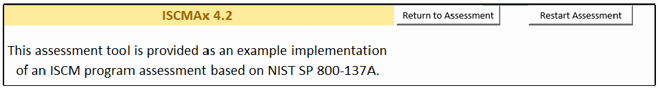
TitlePage ワークシートの画面です。黄色の見出しセル「ISCMAx 4.2」と「Return to Assessment」「Restart Assessment」のボタンがあり、その下に「This assessment tool is provided as an example implementation of an ISCM program assessment based on NIST SP 800-137A.」と書かれています。
Figure 12 – TitlePage Worksheet
図 12 – TitlePage ワークシート
The Assessment worksheet shows all the data collected for the assessment instance. The Assessment worksheet is automatically updated as judgments are made, and it is not intended to be edited by users. The Assessment worksheet is made visible as an aid to comprehending the assessment process.
Assessment ワークシートには、評価インスタンスのために収集されたすべてのデータが表示されます。Assessment ワークシートは判断が下されるたびに自動的に更新され、ユーザーが編集することは意図されていません。Assessment ワークシートは、評価プロセスの理解を助けるために表示されています。
For the recommended judgments, a partial Assessment worksheet is shown in Figure 13.
推奨判断の場合の Assessment ワークシートの一部を図 13 に示します。
![Partial Assessment worksheet screenshot for the recommended judgments, with filter buttons on the headers ID, Judgment#, Judgment, Score, Assessment Element Text, Level. Rows: 1-001, 2 (red), Other Than Satisfied, 0, "There is an organization-wide ISCM strategy that applies to the entire organization and is approved by a Level 1 official.", L1; 1-002, 2 (red), Other Than Satisfied, 0, "There is an ISCM program derived from the organization-wide ISCM strategy.", L1; 1-003, 1 (green), Satisfied, 1, "The ISCM strategy addresses assessing and monitoring controls with a degree of rigor commensurate with risk.", L123; 1-008, 1 (green), Satisfied, 1, "There is organization-wide policy for security status monitoring.", L1.](assets/ir-8212/p0036-figure-01.png)
推奨判定の場合の Assessment ワークシートの一部の画面です。列見出しは ID、Judgment#、Judgment、Score、Assessment Element Text、Level で、フィルターボタンが付いています。行は、1-001: 2（赤）、Other Than Satisfied、0、「There is an organization-wide ISCM strategy that applies to the entire organization and is approved by a Level 1 official.」、L1。1-002: 2（赤）、Other Than Satisfied、0、「There is an ISCM program derived from the organization-wide ISCM strategy.」、L1。1-003: 1（緑）、Satisfied、1、「The ISCM strategy addresses assessing and monitoring controls with a degree of rigor commensurate with risk.」、L123。1-008: 1（緑）、Satisfied、1、「There is organization-wide policy for security status monitoring.」、L1 です。
Figure 13 – Assessment Worksheet (Recommended Judgments)
図 13 – Assessment ワークシート（推奨判断）
For the alternate judgments, a partial Assessment worksheet is shown in Figure 14.
代替判断の場合の Assessment ワークシートの一部を図 14 に示します。
![Partial Assessment worksheet screenshot for the alternate judgments, with filter buttons on the column headers ID, Judgment#, Judgment, Score, Assessment Element, Level. Rows: 1-001, Judgment# 1 (green), "Mostly / Completely True", score 3, "There is an ISCM strategy published to the entire organization and ISCM staff is familiar with the strategy.", L123; 1-002, 3 (orange), "Mostly False", 0, "The ISCM strategy applies to the entire organization while accommodating the needs of missions/business functions.", L12; 1-008, 2 (yellow), "Somewhat True", 0, "There is organization-wide policy for security status monitoring.", L12.](assets/ir-8212/p0036-table-01.png)
代替判定の場合の Assessment ワークシートの一部の画面です。列見出しは ID、Judgment#、Judgment、Score、Assessment Element、Level で、フィルターボタンが付いています。行は、1-001: Judgment# 1（緑）、「Mostly / Completely True」、スコア 3、「There is an ISCM strategy published to the entire organization and ISCM staff is familiar with the strategy.」、L123。1-002: 3（橙）、「Mostly False」、0、「The ISCM strategy applies to the entire organization while accommodating the needs of missions/business functions.」、L12。1-008: 2（黄）、「Somewhat True」、0、「There is organization-wide policy for security status monitoring.」、L12 です。
Figure 14 – Assessment Worksheet (Alternate Judgments)
図 14 – Assessment ワークシート（代替判断）
3.5 Assessment Parameters
3.5 評価パラメータ
The elements evaluated during the assessment are determined by the values of three assessment parameters:
評価中に評価される要素は、三つの評価パラメータの値によって決まります。
1.Risk management level (See Section 2.5)
1.リスクマネジメントレベル（セクション 2.5 を参照）
2.Depth (See Section 2.8.1)
2.深さ（セクション 2.8.1 を参照）
3.Breadth (See Section 2.4)
3.広さ（セクション 2.4 を参照）
An example of the assessment parameter selections is shown in Figure 15, which illustrates the Define Assessment Parameters screen that appears when the ISCMAx workbook is opened for the first time. Once the assessment parameters are determined, the assessment proceeds.
評価パラメータの選択例を図 15 に示します。これは、ISCMAx ワークブックを初めて開いたときに表示される Define Assessment Parameters 画面を表しています。評価パラメータが決まれば、評価が進みます。
![Screenshot of the "Define Assessment Parameters" dialog. Explanatory text describes the ISCMA, Level 1, Level 2 and Level 3 personnel, Depth (a basic assessment includes only elements designated critical; a detailed assessment includes all elements) and Breadth (only elements from the designated SP800-137 process steps). Three option groups: Organizational Level (Level 1: Organization selected; Level 2: Mission/Business Process; Level 3: System), Depth of Assessment (Basic; Detailed selected), Breadth of Assessment (Strategy Only; Through Program Design; Through Program Implementation; Full Program selected). Text: "This assessment consists of 120 elements." Buttons OK and Cancel.](assets/ir-8212/p0037-figure-01.png)
「Define Assessment Parameters（評価パラメーターの定義）」ダイアログの画面です。説明文で ISCMA、レベル1〜3の担当者、Depth（基本評価は重要と指定された要素のみ、詳細評価はすべての要素）、Breadth（指定した SP800-137 のプロセスステップの要素のみ）を説明しています。選択肢は3群で、Organizational Level（Level 1: Organization を選択、Level 2: Mission/Business Process、Level 3: System）、Depth of Assessment（Basic、Detailed を選択）、Breadth of Assessment（Strategy Only、Through Program Design、Through Program Implementation、Full Program を選択）です。「This assessment consists of 120 elements.」と表示され、OK と Cancel のボタンがあります。
Figure 15 – Specifying a Detailed Level 1 Assessment of the Full ISCM Program
図 15 – ISCM プログラム全体の詳細なレベル 1 評価の指定
The assessment parameters can also be modified later (see Section 3.8.1). A formatted display of the current assessment parameters is always shown on the title bar of the assessment screens, as shown in Figure 16.
評価パラメータは、後から変更することもできます（セクション 3.8.1 を参照）。現在の評価パラメータの書式付き表示は、図 16 に示すように、評価画面のタイトルバーに常に表示されます。
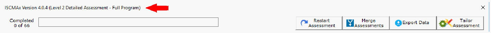
評価フォームのタイトルバー「ISCMAx Version 4.0.4 (Level 2 Detailed Assessment - Full Program)」の画面で、赤い矢印がそれを指しています。その下に「Completed 0 of 66」と空の進捗バー、Restart Assessment、Merge Assessments、Export Data、Tailor Assessment の各ボタンがあります。
Figure 16 – Assessment Parameter Display
図 16 – 評価パラメータの表示
3.6 Element Evaluation
3.6 要素の評価
During the assessment, element groups are chosen by section and in any order. Only sections that contain elements that correspond to the current set of assessment parameters are available for selection, as illustrated in Figure 17, which shows a Level 2 detailed assessment with breadth “Through Program Design Only” with only eight of the possible 14 sections visible. None of the hidden sections contain any Define or Establish elements applicable to Level 2.
評価中は、要素グループをセクションごとに、任意の順序で選択します。選択できるのは、現在の評価パラメータの集合に該当する要素を含むセクションのみです。図 17 はその例で、広さを「Through Program Design Only」としたレベル 2 の詳細評価を示しており、14 の可能なセクションのうち 8 つのみが表示されています。非表示のセクションには、レベル 2 に適用される Define や Establish の要素は含まれていません。
Each of the section names that appear on the left side of the screen includes a count of the total number of elements in the section and the number of elements that are already evaluated. The section button is clicked to show and allow evaluation of the elements for the selected section.
画面左側に表示される各セクション名には、そのセクション内の要素の総数と、すでに評価された要素数が含まれています。セクションボタンをクリックすると、選択したセクションの要素が表示され、評価できるようになります。
Once all elements for a section are evaluated, a check mark appears next to the corresponding section button.
セクションのすべての要素が評価されると、対応するセクションボタンの横にチェックマークが表示されます。
A running count of the number of completed elements and a progress bar are visible above the section buttons.
完了した要素数の累計と進捗バーが、セクションボタンの上に表示されます。
For recommended judgments, the features described above are shown in Figure 17.
推奨判断の場合、上記の機能を図 17 に示します。
For alternate judgments, the features described above are shown in Figure 18.
代替判断の場合、上記の機能を図 18 に示します。
![Screenshot of the element evaluation screen with recommended judgments, titled "ISCMAx Version 4.2 (Level 2 Detailed Assessment - Full Program)", "Completed 79 of 79" with a full green progress bar. The left pane lists Instructions and Sections 1–20 (e.g., "Section 1: ISCM Program Management (6/6 Complete)", "Section 3: Security Status Monitoring (4/4 Complete)" selected), each with a check mark. The right pane "Security Status Monitoring — Level 2 View" shows four elements, each with Satisfied / Other Than Satisfied option buttons and a Notes/Help icon: 1. procedures for security status monitoring (2-006) Satisfied; 2. documented frequencies (2-006a) Satisfied; 3. procedures followed at the documented frequencies (3-007) Other Than Satisfied (red); 4. appropriate officials analyze monitoring results (4-011) Satisfied.](assets/ir-8212/p0039-figure-01.png)
推奨判定の場合の要素評価画面です。タイトルは「ISCMAx Version 4.2 (Level 2 Detailed Assessment - Full Program)」で、「Completed 79 of 79」と緑の進捗バーが満ちています。左側には Instructions と Section 1〜20（例: 「Section 1: ISCM Program Management (6/6 Complete)」、選択中の「Section 3: Security Status Monitoring (4/4 Complete)」）がチェック記号付きで並びます。右側の「Security Status Monitoring — Level 2 View」には4つの要素があり、それぞれ Satisfied / Other Than Satisfied の選択ボタンと Notes/Help アイコンがあります。1. 状態監視の手順（2-006）は Satisfied、2. 文書化された頻度（2-006a）は Satisfied、3. 手順が文書化された頻度で実施されている（3-007）は Other Than Satisfied（赤）、4. 責任者による監視結果の分析（4-011）は Satisfied です。
Figure 17 – Element Evaluation Screen (Recommended Judgments)
図 17 – 要素評価画面（推奨判断）
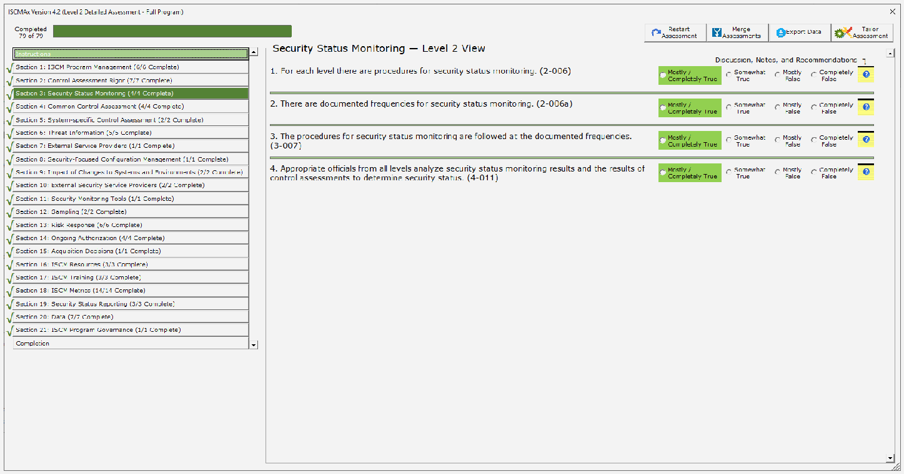
代替判定の場合の要素評価画面です（Level 2 Detailed Assessment - Full Program、Completed 79 of 79）。左側には Instructions、チェック記号付きの Section 1〜21、Completion が並びます。右側の「Security Status Monitoring — Level 2 View」には同じ4要素（2-006、2-006a、3-007、4-011）があり、それぞれ Mostly / Completely True、Somewhat True、Mostly False、Completely False の選択ボタンがあります。4つとも Mostly / Completely True（緑）が選ばれています。
Figure 18 – Element Evaluation Screen (Alternate Judgments)
図 18 – 要素評価画面（代替判断）
3.6.1 Judgment Selection
3.6.1 判断の選択
To record an element judgment, the appropriate option (radio) button to the right of the element text area is clicked. In addition to recording the value of the judgment, [ISCMAx] changes the color of the judgment for an additional visual confirmation of the selected judgment.13
要素の判断を記録するには、要素テキスト領域の右側にある適切なオプション（ラジオ）ボタンをクリックします。判断の値を記録するだけでなく、[ISCMAx] は、選択された判断を視覚的にさらに確認できるよう、判断の色を変更します。13
Judgment values are saved immediately—there is no Save button on the judgment selection screens. After selecting a judgment, a different selection can be made at any subsequent time and will replace the previous selection.
判断の値は直ちに保存されます。判断選択画面には Save ボタンがありません。判断を選択した後は、その後いつでも別の選択ができ、前の選択が置き換えられます。
3.6.2 Element-Level Judgment Assistance
3.6.2 要素レベルの判断支援
Each element has an associated discussion to assist in making a judgment. The discussion is accessed by clicking on the element’s Notes/Help icon shown in Figure 19. An example of the resulting Notes/Help form is displayed in Figure 20, showing the Assessment Procedure for the element, helpful Discussion about the element, the Rationale for the designated risk management level, and input areas for Recommendations and Notes. The Notes input area allows the rationale for judgments or other thoughts and considerations to be recorded. The Recommendations input area allows recommendations for responses to Other than Satisfied judgments to be recorded.
各要素には、判断を下す際の助けとなる解説が関連付けられています。解説は、図 19 に示す要素の Notes/Help アイコンをクリックして表示します。結果として表示される Notes/Help フォームの例を図 20 に示します。要素の Assessment Procedure、要素に関する有用な Discussion、指定されたリスクマネジメントレベルの Rationale、および Recommendations と Notes の入力領域が表示されています。Notes 入力領域には、判断の根拠やその他の考え、考慮事項を記録できます。Recommendations 入力領域には、Other than Satisfied の判断への対応に関する推奨事項を記録できます。
黒い枠と薄い灰色の背景の小さな四角いアイコンです。上端に黒い帯のある黄色の罫線入りメモ帳に、白い疑問符の入った青い丸が描かれています。
Figure 19 – Notes/Help Icon
図 19 – Notes/Help アイコン
Note that there are also buttons for Save and Cancel on this form.
このフォームには、Save ボタンと Cancel ボタンもあることに注意してください。
![Screenshot of the Notes/Help form for element "(1-001) There is an organization-wide ISCM strategy that applies to the entire organization and is approved by a Level 1 official." Panes: Assessment Procedure (ASSESSMENT OBJECTIVE, Determine if: 1-001(a) There is an organization-wide ISCM strategy that applies to the entire organization; and 1-001(b) The strategy is approved by a Level 1 official. POTENTIAL ASSESSMENT METHODS AND OBJECTS, Examine: Published organization-wide ISCM strategy document. Interview: Level 1: CIO; SAISO.), Discussion (three paragraphs on what the organization-wide ISCM strategy documents, mission/business area strategies, and acceptable evidence of approval such as a signature page), Rationale For Level ("Level 1 is responsible for the organization-wide ISCM strategy."), and empty Recommendations and Notes, Rationale for Judgment boxes, with Save and Cancel buttons.](assets/ir-8212/p0042-figure-01.png)
要素「(1-001) There is an organization-wide ISCM strategy that applies to the entire organization and is approved by a Level 1 official.」の Notes/Help フォームの画面です。Assessment Procedure（評価手順）欄には、ASSESSMENT OBJECTIVE として 1-001(a) 組織全体に適用される ISCM 戦略があること、1-001(b) 戦略がレベル1の責任者に承認されていること、POTENTIAL ASSESSMENT METHODS AND OBJECTS として Examine: 公開された組織全体の ISCM 戦略文書、Interview: Level 1: CIO; SAISO が書かれています。Discussion（説明）欄には、組織全体の ISCM 戦略が記載する内容、ミッション・業務領域の戦略、承認の証拠（署名ページなど）についての3段落があります。Rationale For Level 欄は「Level 1 is responsible for the organization-wide ISCM strategy.」です。Recommendations 欄と Notes, Rationale for Judgment 欄は空で、Save と Cancel のボタンがあります。
Figure 20 – Element-Level Judgment Assistance
図 20 – 要素レベルの判断支援
3.7 Scoring and Partial Results
3.7 スコア付けと部分的な結果
Using recommended judgments, ISCMAx assigns a score of 1.0 for each element judged Satisfied. Other Than Satisfied judgments are scored 0.0.
推奨判断を使用する場合、ISCMAx は Satisfied と判断された各要素にスコア 1.0 を割り当てます。Other Than Satisfied の判断のスコアは 0.0 です。
Using alternate judgments, ISCMAx assigns a score of 1.0 for each element judged Mostly/Completely True. All other judgments are scored 0.0.
代替判断を使用する場合、ISCMAx は Mostly/Completely True と判断された各要素にスコア 1.0 を割り当てます。その他のすべての判断のスコアは 0.0 です。
Each score is multiplied by its weighting factor (3.0 for critical elements, 1.0 for non-critical elements). The total score is then divided by the maximum possible score to produce a percentage score. The scoring function is illustrated in Figure 21, which shows the result of clicking on the Completion button (just below the section buttons).
各スコアには、その重み係数（重要な要素は 3.0、非重要な要素は 1.0）が掛けられます。その後、合計スコアを最大可能スコアで割って、パーセンテージのスコアを求めます。スコア付けの機能を図 21 に示します。これは、Completion ボタン（セクションボタンのすぐ下）をクリックした結果を示しています。
![Screenshot of the Completion view of a Level 1 detailed assessment (Completed 120 of 120). The left pane lists Sections 1–23 with check marks and Completion selected. The right pane "Completion — Level 1 View" reads "Score for this instance of the assessment: 71.5% (133.0 out of a possible 186.0)" and shows tables "Details by Chain Label:" (rotated section names with rows Elements, Raw Score, Max Score, Percentage Score) and "Details by Process Step:" (Define, Establish, Implement, Analyze / Report, Respond, Review / Update, Totals; totals: 120 elements, raw score 133.0, max score 186.0).](assets/ir-8212/p0043-figure-01.png)
レベル1の詳細評価の Completion 画面です（Completed 120 of 120）。左側にはチェック記号付きの Section 1〜23 が並び、Completion が選ばれています。右側の「Completion — Level 1 View」には「Score for this instance of the assessment: 71.5% (133.0 out of a possible 186.0)」と表示され、「Details by Chain Label:」（縦書きのセクション名と、Elements、Raw Score、Max Score、Percentage Score の行）と「Details by Process Step:」（Define、Establish、Implement、Analyze / Report、Respond、Review / Update、Totals。合計は要素 120、素点 133.0、最大点 186.0）の表があります。
Figure 21 – Score Summary
図 21 – スコアサマリー
The screenshot in Figure 21 shows two views: Section (Chain Label) and ISCM Process Step. The remaining views are accessed by using the scrollbar. Each view has the same total score, 71.5 %. The difference between the two views is in the scores for the individual items that comprise each view.
図 21 のスクリーンショットには、Section（Chain Label）と ISCM Process Step の二つのビューが示されています。残りのビューは、スクロールバーを使って表示します。どのビューも合計スコアは同じ 71.5 % です。二つのビューの違いは、各ビューを構成する個々の項目のスコアにあります。
Note that the score shown is an example for a Level 1 assessment. In a distributed self-assessment, there may be other Level 1 assessment files, and, in any case, there are additional Level 2 and Level 3 assessment files that are consolidated to produce an overall organizational score. Consolidation and scoring are discussed in Section 4.
表示されているスコアはレベル 1 の評価の例であることに注意してください。分散型自己評価では、ほかにもレベル 1 の評価ファイルがある場合があり、いずれにしても、組織全体のスコアを得るために統合される追加のレベル 2 およびレベル 3 の評価ファイルがあります。統合とスコア付けについては、セクション 4 で説明します。
3.8 Action Buttons
3.8 アクションボタン
The top of the ISCMAx assessment form has four action buttons shown in Figure 22 and discussed in the subsections below.
ISCMAx 評価フォームの上部には、図 22 に示す四つのアクションボタンがあり、以下の小節で説明します。
4つの操作ボタン（Restart Assessment、Merge Assessments、Export Data、Tailor Assessment）で、それぞれアイコンが付いています。
Figure 22 – Action Buttons
図 22 – アクションボタン
3.8.1 Restart Assessment
3.8.1 評価の再開始
The Restart Assessment action allows modification of the three assessment parameters—risk management level, depth, and breadth—that are described in Section 3.5.
Restart Assessment アクションでは、セクション 3.5 で説明した三つの評価パラメータ（リスクマネジメントレベル、深さ、広さ）を変更できます。
Modifying depth or breadth affects which elements are displayed but does not delete any judgments that may have already been made. Elements are simply hidden or made visible as appropriate to the new parameter values. For example, if a detailed assessment is started, changed to a basic assessment, then changed back again to a detailed assessment, any judgments made—even those made prior to the first change—are still displayed.
深さや広さを変更すると、表示される要素に影響しますが、すでに下された判断は削除されません。要素は、新しいパラメータ値に応じて単に非表示になるか、表示されるようになります。たとえば、詳細評価を開始し、基本評価に変更してから、再び詳細評価に戻した場合、最初の変更前に下された判断も含め、下されたすべての判断が引き続き表示されます。
Modifying the risk management level in an assessment instance causes the assessment to start over with no judgments. If saving the previous judgments is desired, the workbook should be saved prior to modifying the risk management level.
評価インスタンスでリスクマネジメントレベルを変更すると、判断がない状態で評価が最初からやり直しになります。以前の判断を保存したい場合は、リスクマネジメントレベルを変更する前にワークブックを保存すべきです。
3.8.2 Merge Assessments
3.8.2 評価の統合
The Merge Assessments action initiates the consolidation of multiple assessment files and is discussed in detail in Section 4.
Merge Assessments アクションは、複数の評価ファイルの統合を開始するもので、セクション 4 で詳しく説明します。
3.8.3 Export Data
3.8.3 データのエクスポート
The Export Data action creates a new Excel workbook containing the data from the current assessment file. The new workbook contains copies of the values (not formulas) in both the Assessment (see Figure 14) and ScoreSummary (see Figure 21) worksheet. The exported data can then be used by the organization for further analysis or reporting.
Export Data アクションは、現在の評価ファイルのデータを含む新しい Excel ワークブックを作成します。新しいワークブックには、Assessment ワークシート（図 14 を参照）と ScoreSummary ワークシート（図 21 を参照）の両方について、値（数式ではない）のコピーが含まれます。エクスポートされたデータは、組織がさらなる分析や報告に使用できます。
3.8.4 Tailor Assessment
3.8.4 評価のテーラリング
The Tailor Assessment action unhides the worksheets that are used to tailor the assessment. Tailoring is done prior to conducting the assessment. See Section 5 for a full discussion of tailoring the assessment.
Tailor Assessment アクションは、評価のテーラリングに使用するワークシートの非表示を解除します。テーラリングは、評価を実施する前に行います。評価のテーラリングの詳細な説明については、セクション 5 を参照してください。
3.9 Deploying the Workbook
3.9 ワークブックの展開
The workbook is deployed according to the type of assessment engagement and the logistics for conducting the assessment that were determined during the Plan the Approach step of ISCMA. The workbook is deployed within each risk management level and to each group or person expected to make judgments individually. In a group setting, one person is selected to record the group judgments in the workbook.
ワークブックは、ISCMA の「アプローチの計画」ステップで決定した、評価エンゲージメントの種類と評価を実施するための運営方法に従って展開されます。ワークブックは、各リスクマネジメントレベル内で、個別に判断を下すことが期待される各グループまたは個人に展開されます。グループで行う場合は、グループの判断をワークブックに記録する担当者を一人選びます。
It is important that the workbook be deployed only after any desired tailoring is performed. All workbooks used in the assessment are derived from the same tailored template; otherwise, the results are unpredictable.
原本PDFの抜粋画像
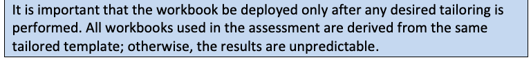
ワークブックは、必要なテーラリングを行った後にのみ展開することが重要です。評価に使用するすべてのワークブックは、同一のテーラリング済みテンプレートから派生させます。そうしないと、結果は予測不能になります。
To create a fresh assessment file for deployment, run the DeployAssessment macro14 from the final tailored version. The resultant file requires the user who opens it to specify all assessment parameters.
展開用の新しい評価ファイルを作成するには、最終的なテーラリング済みバージョンから DeployAssessment マクロ14を実行します。結果として得られるファイルは、開いたユーザーにすべての評価パラメータの指定を求めます。
3.10 Additional Underlying Worksheets
3.10 その他の基盤ワークシート
In addition to the TitlePage, Elements, and Assessment worksheet, there are other worksheets used by ISCMAx that are hidden because they are normally not meant to be seen or updated. However, they are temporarily exposed when tailoring is performed. The worksheets are all briefly described in Table 9. For a complete discussion of how the worksheets are used in tailoring, see the appropriate subsections of Section 5. The worksheet can be tailored except where noted.
TitlePage、Elements、Assessment の各ワークシートに加えて、ISCMAx が使用するワークシートがほかにもあります。これらは通常、閲覧や更新を意図していないため非表示になっていますが、テーラリングを行うときには一時的に表示されます。すべてのワークシートについて、表 9 で簡単に説明します。テーラリングでのワークシートの使い方の詳細は、セクション 5 の該当する小節を参照してください。ワークシートは、特記する場合を除き、テーラリングできます。
Table 9 – Underlying Worksheets
表 9 – 基盤ワークシート
| Worksheet | Description |
|---|---|
| Elements | The source data—all elements and their attributes |
| Store | Storage for tailoring parameters |
| Assessment | A filtered copy (based on the current assessment parameters) of the Elements worksheet that is used while the assessment is conducted and that also stores judgments and scores; the assessment worksheet is automatically updated DO NOT MODIFY |
| Instructions | The text shown when the Instructions button is clicked (and when ISCMAx starts) |
| JudgmentTable | The table that defines how judgments are combined across risk management levels |
| ワークシート | 説明 |
|---|---|
| Elements | 元データ。すべての要素とその属性 |
| Store | テーラリングパラメータの保存場所 |
| Assessment | 評価の実施中に使用され、判断とスコアも保存する、Elements ワークシートの（現在の評価パラメータに基づく）絞り込み済みコピー。assessment ワークシートは自動的に更新される 変更しないこと |
| Instructions | Instructions ボタンをクリックしたとき（および ISCMAx の起動時）に表示されるテキスト |
| JudgmentTable | リスクマネジメントレベル間で判断をどのように組み合わせるかを定義する表 |
4 The Principal Assessment Workbook
4 主評価ワークブック
The Principal Assessment workbook is a single workbook that combines all the results from all the instances of the assessment created during the assessment process. A separate merge process produces the scores and final assessment report in the worksheets of the Principal Assessment workbook that are described in this section.
Principal Assessment ワークブックは、評価プロセス中に作成された評価のすべてのインスタンスのすべての結果を統合した、単一のワークブックです。別個の統合プロセスが、本セクションで説明する Principal Assessment ワークブックのワークシートに、スコアと最終的な評価報告書を作成します。
4.1 The Merge Process
4.1 統合プロセス
The merge process is a separate process invoked by clicking the Merge Assessments action button. It creates a new workbook called the Principal Assessment workbook, which contains all of the judgments, notes, and recommendations from all of the workbooks used in the assessment. This data is examined, scored, and organized by the merge process to produce a final assessment report.
統合プロセスは、Merge Assessments アクションボタンをクリックして呼び出される別個のプロセスです。これにより、Principal Assessment ワークブックという新しいワークブックが作成され、評価に使用されたすべてのワークブックのすべての判断、メモ、推奨事項が格納されます。このデータは統合プロセスによって検査され、スコア付けされ、整理されて、最終的な評価報告書が作成されます。
Prior to invoking the Merge Assessments action, all assessment workbooks are moved or copied into a single folder by the user called the working folder. The Merge Assessments action is then invoked from any workbook in the working folder, and the assessment workbook from which the Merge Assessments action is invoked is then referred to as the base assessment. The Merge Assessments process examines each workbook in the working folder for compatibility with the version, depth, and breadth of the workbook from which the Merge Assessments action is invoked. Unrecognized or incompatible files in the working folder are ignored (with appropriate error messages).
Merge Assessments アクションを呼び出す前に、ユーザーはすべての評価ワークブックを、作業フォルダーと呼ばれる単一のフォルダーに移動またはコピーします。その後、作業フォルダー内の任意のワークブックから Merge Assessments アクションを呼び出します。Merge Assessments アクションを呼び出した評価ワークブックは、基準評価（base assessment）と呼ばれます。Merge Assessments プロセスは、作業フォルダー内の各ワークブックについて、Merge Assessments アクションを呼び出したワークブックのバージョン、深さ、広さとの互換性を検査します。作業フォルダー内の認識されないファイルや互換性のないファイルは（適切なエラーメッセージとともに）無視されます。
The newly created Principal Assessment workbook is placed in the working folder and consists of the worksheets listed in Table 10. The worksheets are described more fully in subsequent sub-sections.
新しく作成された Principal Assessment ワークブックは作業フォルダーに置かれ、表 10 に挙げたワークシートで構成されます。ワークシートについては、以降の小節でさらに詳しく説明します。
Table 10 – Principal Assessment Worksheets
表 10 – 主評価ワークシート
| Worksheet | Description |
|---|---|
| ScoreSummary | Tables and graphical displays of scores for all views |
| Differences | A description of any element found in input assessments that differs from the corresponding element in the base assessment |
| Messages | Progress, warning, and error messages about the merge process |
| Observations | All automatically identified conditions detected during the merge process that are reviewed for possible action; see Section 4.5 for the conditions that are reported here |
| [Single Judgments] | One worksheet for each possible judgment that collects all elements with that judgment as the consolidated judgment |
| Notes and Recommendations | The collection of all elements in input assessments where there was a note or recommendation |
| Principal Assessment | The full set of elements for the assessment together with the consolidated judgments made at each level |
| Level1 | All the Level 1 judgments from all the Level 1 input assessments |
| Level2 | All the Level 2 judgments from all the Level 2 input assessments |
| Level3 | All the Level 3 judgments from all the Level 3 input assessments |
| Chains | Graphical grouping of elements by the is-a-parent-of relationship |
| JudgmentTable | Codified table that implements the algorithm for combining judgments from different levels |
| ワークシート | 説明 |
|---|---|
| ScoreSummary | すべてのビューのスコアの表とグラフ表示 |
| Differences | 入力された評価で見つかった、基準評価の対応する要素と異なる要素の説明 |
| Messages | 統合プロセスに関する進捗、警告、エラーのメッセージ |
| Observations | 統合プロセス中に検出され、可能な措置のためにレビューされる、自動的に特定されたすべての状況。ここで報告される状況についてはセクション 4.5 を参照 |
| [Single Judgments] | 可能な判断ごとに 1 つのワークシートがあり、その判断を統合判断とするすべての要素を集めたもの |
| Notes and Recommendations | 入力された評価のうち、メモまたは推奨事項があったすべての要素の集まり |
| Principal Assessment | 評価の要素の完全な集合と、各レベルで下された統合判断 |
| Level1 | レベル 1 の入力評価すべてのレベル 1 の判断すべて |
| Level2 | レベル 2 の入力評価すべてのレベル 2 の判断すべて |
| Level3 | レベル 3 の入力評価すべてのレベル 3 の判断すべて |
| Chains | 親子関係（is-a-parent-of）による要素のグラフィカルなグループ化 |
| JudgmentTable | 異なるレベルの判断を組み合わせるアルゴリズムを実装した、コード化された表 |
Due to the number of worksheets, it may be necessary to scroll across the list of worksheets using the small arrows shown in Figure 23.
ワークシートの数が多いため、図 23 に示す小さな矢印を使ってワークシートの一覧をスクロールする必要がある場合があります。
Excel のワークシートのタブの並びの画面で、左端の小さなスクロール矢印を赤い矢印が指しています。タブは ...、Observations、Completely False、Mostly False、Notes and Recommendations、MasterAssessment、Level1、Level2、Level3、Chains、Judg...、... で、ステータスバーに「Ready」と表示されています。
Figure 23 – Principal Assessment Worksheet List
図 23 – 主評価ワークシートの一覧
Figure 24 shows a diagram of the merge process.
図 24 に統合プロセスの図を示します。

「Working Folder（作業フォルダー）」の枠の中のマージ処理の図です。「Base Assessment File（基準評価ファイル）」（注記「(Can be any assessment in the working folder.)」）から「Invokes（起動）」の矢印が緑の「Merge Process（マージ処理）」の箱に向かいます。マージ処理は下の「Level 1 Assessment Files」「Level 2 Assessment Files」「Level 3 Assessment Files」の束と線で結ばれ、矢印が「Master Assessment File」に向かいます。Master Assessment File には MasterAssessment、ScoreSummary、Observations、Notes、Recommendations が列挙されています。
Figure 24 – Merge Process
図 24 – 統合プロセス
The merge process can be invoked at any time to see intermediate results as soon as there is at least one judgment for each element at each applicable level. The merge process is then invoked one last time after all necessary assessment workbooks are complete and present in the working folder.
統合プロセスは、該当する各レベルの各要素に少なくとも一つの判断が揃った時点で、いつでも呼び出して中間結果を確認できます。その後、必要なすべての評価ワークブックが完了して作業フォルダーに揃った後に、最後にもう一度、統合プロセスを呼び出します。
4.2 ScoreSummary Worksheet
4.2 ScoreSummary ワークシート
The ScoreSummary worksheet in the principal assessment workbook, shown in Figure 25, provides the same view-based scoring output as shown in Figure 21 for assessment files. The scores in Figure 21 are based on a single workbook that contains a set of judgments for a single level, while the scores in Figure 25 are based on the consolidated judgments for the entire organization.
図 25 に示す主評価ワークブックの ScoreSummary ワークシートは、評価ファイルについて図 21 に示したものと同じ、ビューに基づくスコア出力を提供します。図 21 のスコアは単一レベルの判断の集合を含む単一のワークブックに基づいていますが、図 25 のスコアは組織全体の統合判断に基づいています。
![ScoreSummary worksheet image. "Details by Chain Label:" columns (rotated headings) ISCM Strategy Management, System-Level Strategy, ISCM Program Management, Control Assessment Rigor, Security Status Monitoring, Common Control Assessment, System-specific Control Assessment, ISCM Results Included in Risk Assessment, Threat Information, External Service Providers, Security-Focused Configuration Management, Impact of Changes to Systems and Environments, External Security Service Providers, Security Monitoring Tools, Sampling, Risk Response, Ongoing Authorization, Acquisition Decisions, ISCM Resources, ISCM Training, ISCM Metrics, Security Status Reporting, Data, ISCM Program Governance, Totals. Elements: 5, 4, 16, 7, 5, 5, 5, 2, 6, 3, 3, 3, 3, 3, 3, 9, 6, 2, 4, 4, 15, 5, 7, 3, 128. Raw Score: 2.0, 6.0, 6.0, 3.0, 2.0, 1.0, 3.0, 3.0, 1.0, 1.0, 4.0, 0.0, 2.0, 2.0, 1.0, 7.0, 7.0, 0.0, 2.0, 1.0, 5.0, 4.0, 6.0, 4.0, 73.0. Max Score: 7.0, 6.0, 18.0, 13.0, 7.0, 9.0, 5.0, 6.0, 8.0, 3.0, 7.0, 7.0, 3.0, 3.0, 3.0, 17.0, 14.0, 2.0, 6.0, 4.0, 19.0, 9.0, 15.0, 5.0, 196.0. Percentage Score: 28.6%, 100.0%, 33.3%, 23.1%, 28.6%, 11.1%, 60.0%, 50.0%, 12.5%, 33.3%, 57.1%, 0.0%, 66.7%, 66.7%, 33.3%, 41.2%, 50.0%, 0.0%, 33.3%, 25.0%, 26.3%, 44.4%, 40.0%, 80.0%, 37.2% (bold). "Details by Process Step:" columns Define, Establish, Implement, Analyze / Report, Respond, Review / Update, Totals. Elements: 24, 43, 32, 10, 9, 10, 128. Raw Score: 21.0, 24.0, 15.0, 3.0, 2.0, 8.0, 73.0. Max Score: 42.0, 65.0, 48.0, 16.0, 11.0, 14.0, 196.0. Percentage Score: 50.0%, 36.9%, 31.3%, 18.8%, 18.2%, 57.1%, 37.2%.](assets/ir-8212/p0049-table-01.png)
ScoreSummary ワークシートの画像です。「Details by Chain Label:（チェーンラベル別の詳細）」の列（縦書きの見出し）は ISCM Strategy Management、System-Level Strategy、ISCM Program Management、Control Assessment Rigor、Security Status Monitoring、Common Control Assessment、System-specific Control Assessment、ISCM Results Included in Risk Assessment、Threat Information、External Service Providers、Security-Focused Configuration Management、Impact of Changes to Systems and Environments、External Security Service Providers、Security Monitoring Tools、Sampling、Risk Response、Ongoing Authorization、Acquisition Decisions、ISCM Resources、ISCM Training、ISCM Metrics、Security Status Reporting、Data、ISCM Program Governance、Totals です。Elements（要素数）: 5, 4, 16, 7, 5, 5, 5, 2, 6, 3, 3, 3, 3, 3, 3, 9, 6, 2, 4, 4, 15, 5, 7, 3, 128。Raw Score（素点）: 2.0, 6.0, 6.0, 3.0, 2.0, 1.0, 3.0, 3.0, 1.0, 1.0, 4.0, 0.0, 2.0, 2.0, 1.0, 7.0, 7.0, 0.0, 2.0, 1.0, 5.0, 4.0, 6.0, 4.0, 73.0。Max Score（最大点）: 7.0, 6.0, 18.0, 13.0, 7.0, 9.0, 5.0, 6.0, 8.0, 3.0, 7.0, 7.0, 3.0, 3.0, 3.0, 17.0, 14.0, 2.0, 6.0, 4.0, 19.0, 9.0, 15.0, 5.0, 196.0。Percentage Score（得点率）: 28.6%, 100.0%, 33.3%, 23.1%, 28.6%, 11.1%, 60.0%, 50.0%, 12.5%, 33.3%, 57.1%, 0.0%, 66.7%, 66.7%, 33.3%, 41.2%, 50.0%, 0.0%, 33.3%, 25.0%, 26.3%, 44.4%, 40.0%, 80.0%, 37.2%（太字）。「Details by Process Step:（プロセスステップ別の詳細）」の列は Define、Establish、Implement、Analyze / Report、Respond、Review / Update、Totals で、Elements: 24, 43, 32, 10, 9, 10, 128、Raw Score: 21.0, 24.0, 15.0, 3.0, 2.0, 8.0, 73.0、Max Score: 42.0, 65.0, 48.0, 16.0, 11.0, 14.0, 196.0、Percentage Score: 50.0%, 36.9%, 31.3%, 18.8%, 18.2%, 57.1%, 37.2% です。
Figure 25 – ScoreSummary Worksheet
図 25 – ScoreSummary ワークシート
In addition, two types of visualizations—the Score Summary Bar and the View Scorecards—are provided to assist in the analysis of the results. Each visualization type is composed of the same data presented by the corresponding tabular output in Figure 25.
加えて、結果の分析を支援するため、Score Summary Bar と View Scorecards という二種類の可視化が提供されます。どちらの可視化も、図 25 の対応する表形式の出力と同じデータで構成されています。
For the Score Summary Bar visualization shown in Figure 26, the vertical location of a target symbol (⊙) represents the overall score of the organization. The top of the bar represents 100 %. To the right, using the same vertical scale are individual view-based visualizations where the vertical location of each view item name indicates the score for that item. The bar is color-coded according to ranges and colors that are configurable.
図 26 に示す Score Summary Bar の可視化では、ターゲット記号（⊙）の縦位置が組織の総合スコアを表します。バーの上端は 100 % を表します。右側には、同じ縦軸の尺度を用いた、ビューごとの個別の可視化があり、各ビュー項目名の縦位置がその項目のスコアを示します。バーは、設定可能な範囲と色に従って色分けされます。
For the View Scorecards visualization, a View Scorecard radar chart, shown in Figure 27, is inserted for each reporting view. Data points closer to the outer boundary represent stronger scores. The View Scorecard uses the same colors as the Score Summary Bar, as well as a configurable set of symbols representing the scoring ranges.
View Scorecards の可視化では、図 27 に示す View Scorecard レーダーチャートが報告ビューごとに挿入されます。外側の境界に近いデータ点ほど強いスコアを表します。View Scorecard は、Score Summary Bar と同じ色のほか、スコアの範囲を表す設定可能な記号の集合を使用します。
![Score Summary Bar chart on a vertical scale from 0 to 100 with marks at 40 and 70. The "Overall" bar is red from 0 to 40, yellow from 40 to 70 and green from 70 to 100; a target symbol (⊙) sits at about 37. To the right, item names are placed at heights matching their scores in columns "Section", "Program" (process steps), "CSF Category" and "Perspective". Examples: Section — System Strategy at 100, Governance near 80, Ext Security Providers and Monitoring Tools near 67, Impact of Changes and Acquisition at 0; Program — Review / Update near 57, Define near 50, Establish near 37, Implement near 31, Analyze / Report and Respond near 18; CSF Category — DE.AE and RC.IM at 100, ID.BE and RS.AN at 0; Perspective — Utilization, Readiness, Sustainment and Adoption between about 30 and 55.](assets/ir-8212/p0051-figure-01.png)
0〜100 の縦の目盛り（40 と 70 に目盛り線）上の Score Summary Bar の図です。「Overall」の棒は 0〜40 が赤、40〜70 が黄、70〜100 が緑で、標的記号（⊙）が約 37 の位置にあります。右側には「Section」「Program」（プロセスステップ）「CSF Category」「Perspective」の列に、各項目の名前が得点に対応する高さに置かれています。例として、Section では System Strategy が 100、Governance が約 80、Ext Security Providers と Monitoring Tools が約 67、Impact of Changes と Acquisition が 0、Program では Review / Update が約 57、Define が約 50、Establish が約 37、Implement が約 31、Analyze / Report と Respond が約 18、CSF Category では DE.AE と RC.IM が 100、ID.BE と RS.AN が 0、Perspective では Utilization、Readiness、Sustainment、Adoption が約 30〜55 の間にあります。
Figure 26 – Score Summary Bar
図 26 – Score Summary Bar
![Radar chart titled "Section Scorecard" with an overall score box "37.2" in red at the top right and a legend: green check mark 70-100, yellow square 40-70, red cross 0-40. Spokes and scores: Strategy Mgmt 28.6%, System Strategy 100.0%, Pgm Mgmt 33.3%, Rigor 23.1%, Status Monitoring 28.6%, Common Ctl Assmt 11.1%, System-spec. Ctl Assmt 60.0%, Results 50.0%, Threats 12.5%, Ext Providers 33.3%, Config Mgmt 57.1%, Impact of Changes 0.0%, Ext Security Providers 66.7%, Monitoring Tools 66.7%, Sampling 33.3%, Risk Response 41.2%, Ongoing Auth 50.0%, Acquisition 0.0%, Resources 33.3%, Training 25.0%, Metrics 26.3%, Status Reporting 44.4%, Data 40.0%, Governance 80.0%. The filled teal area connects the markers. Footnote: "Location of markers represents the position of scores between 0 (center) and 100 (outer edge)."](assets/ir-8212/p0052-figure-01.png)
「Section Scorecard」という題のレーダーチャートで、右上に赤地の総合点「37.2」があり、凡例は緑のチェック記号が 70-100、黄色の四角が 40-70、赤のばつ印が 0-40 です。各軸と得点は、Strategy Mgmt 28.6%、System Strategy 100.0%、Pgm Mgmt 33.3%、Rigor 23.1%、Status Monitoring 28.6%、Common Ctl Assmt 11.1%、System-spec. Ctl Assmt 60.0%、Results 50.0%、Threats 12.5%、Ext Providers 33.3%、Config Mgmt 57.1%、Impact of Changes 0.0%、Ext Security Providers 66.7%、Monitoring Tools 66.7%、Sampling 33.3%、Risk Response 41.2%、Ongoing Auth 50.0%、Acquisition 0.0%、Resources 33.3%、Training 25.0%、Metrics 26.3%、Status Reporting 44.4%、Data 40.0%、Governance 80.0% です。印の間は青緑で塗られています。下部に「Location of markers represents the position of scores between 0 (center) and 100 (outer edge).」と注記があります。
Figure 27 – View Scorecard
図 27 – View Scorecard
4.3 Differences Worksheet
4.3 Differences ワークシート
One of the tests conducted during the merge process is a comparison of the base assessment and each of the other workbooks in the working folder. Any field of any element that is critical to matching assessments and that does not match the base assessment is recorded in the Differences worksheet. The Differences worksheet is reviewed for unexpected information. Organizational managers responsible for the assessment determine if the differences are acceptable. If not, the abnormal assessment files are removed from the working folder, and the merge process is re-executed. An example Differences worksheet is shown in Figure 28.
統合プロセス中に実施されるテストの一つは、基準評価と、作業フォルダー内の他の各ワークブックとの比較です。評価の照合に不可欠な要素のいずれかのフィールドが基準評価と一致しない場合は、Differences ワークシートに記録されます。Differences ワークシートは、予期しない情報がないかレビューされます。評価に責任を負う組織の管理者は、その差異が許容できるかどうかを判断します。許容できない場合は、異常のある評価ファイルを作業フォルダーから削除し、統合プロセスを再実行します。Differences ワークシートの例を図 28 に示します。
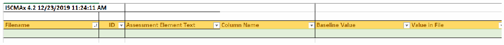
空の Differences ワークシートの画面です。題のセル「ISCMAx 4.2 12/23/2019 11:24:11 AM」と、フィルター付きの見出し Filename、ID、Assessment Element Text、Column Name、Baseline Value、Value in File があり、データ行はありません。
Figure 28 – Differences Worksheet
図 28 – Differences ワークシート
4.4 Messages Worksheet
4.4 Messages ワークシート
As the merge process proceeds, status messages are produced in the Messages worksheet. The Messages worksheet, shown in Figure 29, is reviewed for possible unexpected messages before considering the results to be complete and correct. For example, a message might state that a particular assessment workbook does not contain judgments for the entire assessment.
統合プロセスが進むにつれて、状況メッセージが Messages ワークシートに生成されます。Messages ワークシート（図 29）は、結果が完全で正しいとみなす前に、予期しないメッセージがないかレビューされます。たとえば、特定の評価ワークブックに評価全体の判断が含まれていないことを示すメッセージなどがあります。
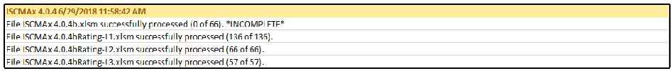
Messages ワークシートの画面です。「ISCMAx 4.0.4 6/29/2018 11:58:42 AM」に続いて、「File ISCMAx 4.0.4b.xlsm successfully processed (0 of 66). *INCOMPLETE*」「File ISCMAx 4.0.4bRating-L1.xlsm successfully processed (136 of 136).」「File ISCMAx 4.0.4bRating-L2.xlsm successfully processed (66 of 66).」「File ISCMAx 4.0.4bRating-L3.xlsm successfully processed (57 of 57).」の各行があります。
Figure 29 – Messages Worksheet
図 29 – Messages ワークシート
4.5 Observations Worksheet
4.5 Observations ワークシート
The Observations worksheet shown in Figure 30 displays automatically detected conditions that may merit further consideration by the assessment team. The following types of conditions are detected:
図 30 に示す Observations ワークシートには、評価チームによるさらなる検討に値する場合がある、自動検出された状況が表示されます。次の種類の状況が検出されます。
•Widely disparate judgments across risk management levels: One row is written for each instance of an element where two risk management level judgments are non-adjacent. For example, using alternate judgments, Level 2 indicates Somewhat True, but Level 3 indicates Completely False. Observations regarding widely disparate judgments are made only if ISCMAx is configured to use a judgment set with three or more judgments.
•リスクマネジメントレベル間で大きく異なる判断: 二つのリスクマネジメントレベルの判断が隣接していない要素の各事例について、1 行が書き込まれます。たとえば、代替判断を使用していて、レベル 2 が Somewhat True を示し、レベル 3 が Completely False を示す場合です。大きく異なる判断に関する所見は、ISCMAx が三つ以上の判断を持つ判断集合を使用するよう構成されている場合にのみ作成されます。
•Level judgments determined by a single assessment worksheet: If a single assessment worksheet among multiple worksheets for one risk management level determines an element’s overall judgment, one line is written. Observations regarding judgments determined by a single assessment worksheet are only made if ISCMAx is configured to use weakest judgment for intra-level judgment resolution. For example, if Level 2 is represented by six mission or business processes, an observation is written if five mission or business processes assess an element identically while the sixth mission or business process assesses the element with a weaker judgment. The weakest judgment method causes the judgment made by the sixth mission or business process alone to determine the overall Level 2 judgment for that element.
•単一の評価ワークシートによって決まるレベル判断: 一つのリスクマネジメントレベルに対する複数の評価ワークシートのうち、単一の評価ワークシートが要素の総合判断を決定する場合、1 行が書き込まれます。単一の評価ワークシートによって決まる判断に関する所見は、ISCMAx がレベル内の判断の解決に最弱判断を使用するよう構成されている場合にのみ作成されます。たとえば、レベル 2 が六つのミッションまたは業務プロセスで表されている場合、五つのミッションまたは業務プロセスが要素を同じ判断で評価し、六つ目がより弱い判断で評価すると、所見が作成されます。最弱判断方式では、六つ目のミッションまたは業務プロセスだけが下した判断によって、その要素のレベル 2 の総合判断が決まります。
![Screenshot of the Observations worksheet titled "Large discrepancies between Level judgments (May reflect misunderstandings)" with headers ID, Assessment Element Text, Chain Label, Recommendations, Notes, Observations. Rows: 1-003, "The ISCM strategy addresses assessing and monitoring controls with a degree of rigor commensurate with risk.", Control Assessment Rigor, Observations "Large judgment variance; Level 1: Mostly False; Level 3: Mostly / Completely True"; 1-032, "The ISCM strategy addresses the need to collect accurate, comprehensive, and timely data.", Data, "Large judgment variance; Level 1: Completely False; Level 3: Mostly / Completely True".](assets/ir-8212/p0054-figure-01.png)
Observations ワークシートの画面で、題は「Large discrepancies between Level judgments (May reflect misunderstandings)」です。見出しは ID、Assessment Element Text、Chain Label、Recommendations、Notes、Observations です。行は、1-003「The ISCM strategy addresses assessing and monitoring controls with a degree of rigor commensurate with risk.」、Control Assessment Rigor、Observations「Large judgment variance; Level 1: Mostly False; Level 3: Mostly / Completely True」。1-032「The ISCM strategy addresses the need to collect accurate, comprehensive, and timely data.」、Data、「Large judgment variance; Level 1: Completely False; Level 3: Mostly / Completely True」です。
Figure 30 – Observation Worksheet
図 30 – Observation ワークシート
4.6 Single Judgment Worksheets
4.6 単一判断ワークシート
The single judgment worksheets are named using the configured judgment labels. Each single-judgment worksheet collects all the elements with the corresponding judgment. This is intended to aid in focusing attention on specific strengths or weaknesses of the ISCM program.
単一判断ワークシートは、構成された判断ラベルを使って名前が付けられます。各単一判断ワークシートには、対応する判断のすべての要素が集められます。これは、ISCM プログラムの特定の強みや弱みに注意を向けやすくするためのものです。
For example, using recommended judgments, all the Other Than Satisfied judgments are collected in a single worksheet to facilitate further action. An Other Than Satisfied worksheet is illustrated in Figure 31.
たとえば、推奨判断を使用する場合、さらなる措置を促すため、Other Than Satisfied の判断はすべて単一のワークシートに集められます。Other Than Satisfied ワークシートを図 31 に示します。
![Screenshot of the Other Than Satisfied worksheet titled "Summary of all Other Than Satisfied Judgments (Suggested initial areas for improvement)" with headers ID, Assessment Element Text, Chain Label, Recommendations, Notes. Rows: 1-001, "There is an organization-wide ISCM strategy that applies to the entire organization and is approved by a Level 1 official.", ISCM Strategy Management; 1-002, "There is an ISCM program derived from the organization-wide ISCM strategy.", ISCM Program Management; 1-003, "The ISCM strategy addresses assessing and monitoring controls with a degree of rigor commensurate with risk.", Control Assessment Rigor. Recommendations and Notes are empty.](assets/ir-8212/p0054-figure-02.png)
Other Than Satisfied ワークシートの画面で、題は「Summary of all Other Than Satisfied Judgments (Suggested initial areas for improvement)」です。見出しは ID、Assessment Element Text、Chain Label、Recommendations、Notes です。行は、1-001「There is an organization-wide ISCM strategy that applies to the entire organization and is approved by a Level 1 official.」、ISCM Strategy Management。1-002「There is an ISCM program derived from the organization-wide ISCM strategy.」、ISCM Program Management。1-003「The ISCM strategy addresses assessing and monitoring controls with a degree of rigor commensurate with risk.」、Control Assessment Rigor です。Recommendations と Notes は空欄です。
Figure 31 – Other Than Satisfied Worksheet (Recommended Judgments)
図 31 – Other Than Satisfied ワークシート（推奨判断）
For example, using alternate judgments, the Completely False judgments are collected in a single worksheet that may be of highest priority because they are the weakest points of the program. Additionally, the Somewhat True judgments are collected in a single worksheet that may be the highest priority because they can be improved to achieve a higher score more quickly. The granularity of the alternate judgments is an asset for this analysis. A CompletelyFalse worksheet is illustrated in Figure 32.
たとえば、代替判断を使用する場合、Completely False の判断は単一のワークシートに集められます。これらはプログラムの最も弱い点であるため、最優先となる可能性があります。さらに、Somewhat True の判断も単一のワークシートに集められます。これらは改善によってより迅速に高いスコアを達成できるため、最優先となる可能性があります。代替判断の粒度は、この分析にとって有用です。CompletelyFalse ワークシートを図 32 に示します。
![Screenshot of the CompletelyFalse worksheet titled "Summary of all Completely False Judgments (Suggested initial areas for improvement)" with headers ID, Assessment Element Text, Chain Label, Recommendations, Notes. Rows: 1-009, "There is organization-wide policy for the assessment of common control implementation.", Common Control Assessment; 1-011, "There is organization-wide policy for making ISCM results available to the risk assessment process.", ISCM Results Included in Risk Assessment; 1-012, "There is organization-wide policy for obtaining ongoing threat information.", Threat Information; 1-032, "The ISCM strategy addresses the need to collect accurate, comprehensive, and timely data.", Data. Recommendations and Notes are empty.](assets/ir-8212/p0055-figure-01.png)
CompletelyFalse ワークシートの画面で、題は「Summary of all Completely False Judgments (Suggested initial areas for improvement)」です。見出しは ID、Assessment Element Text、Chain Label、Recommendations、Notes です。行は、1-009「There is organization-wide policy for the assessment of common control implementation.」、Common Control Assessment。1-011「There is organization-wide policy for making ISCM results available to the risk assessment process.」、ISCM Results Included in Risk Assessment。1-012「There is organization-wide policy for obtaining ongoing threat information.」、Threat Information。1-032「The ISCM strategy addresses the need to collect accurate, comprehensive, and timely data.」、Data です。Recommendations と Notes は空欄です。
Figure 32 – CompletelyFalse Worksheet (Alternate Judgments)
図 32 – CompletelyFalse ワークシート（代替判断）
Any notes or recommendations made by participants during the recording of judgments are included in the single judgment worksheets with each identified by the sequence number of the source assessment file.
判断の記録中に参加者が書いたメモや推奨事項は、単一判断ワークシートに含まれ、それぞれに元の評価ファイルの連番が付されます。
4.7 Notes and Recommendations Worksheet
4.7 Notes and Recommendations ワークシート
The Notes and Recommendations worksheet collects all elements that include notes or recommendations made by participants in any assessment worksheets that contribute to the full assessment. The Notes and Recommendations worksheet facilitates finding notes and recommendations without knowing the elements about which they were made, as well as providing a basis for creating action items. Each note or recommendation is preceded by the numeric identifier of the source assessment worksheet of the note or recommendation. The numeric identifiers are defined in the column headings in each of the worksheets Level1, Level2, or Level3 (see Section 4.10).
Notes and Recommendations ワークシートには、完全な評価に寄与する評価ワークシートのいずれかで参加者が書いたメモや推奨事項を含む、すべての要素が集められます。Notes and Recommendations ワークシートにより、どの要素についてのものかを知らなくてもメモや推奨事項を見つけやすくなるほか、アクション項目を作成する基礎が得られます。各メモまたは推奨事項の前には、そのメモまたは推奨事項の元の評価ワークシートの数値識別子が付きます。数値識別子は、Level1、Level2、Level3 の各ワークシートの列見出しで定義されています（セクション 4.10 を参照）。
4.8 Relative Judgment Numbers
4.8 相対判断番号
The PrincipalAssessment worksheet, the Level worksheets, and the JudgmentTable worksheet described in the remainder of this section contain numeric values that represent judgments. Since the number of judgments, N, is tailorable (see Section 5.3.1), each judgment is representable by its relative number (e.g., 1, 2, 3, …, N) in the list of judgments as they appear—left to right, strongest to weakest—on the assessment forms. In all cases, the value 1 represents the strongest judgment, and N represents the weakest judgment.
本セクションの残りで説明する PrincipalAssessment ワークシート、Level ワークシート、JudgmentTable ワークシートには、判断を表す数値が含まれています。判断の数 N はテーラリングが可能であるため（セクション 5.3.1 を参照）、各判断は、評価フォームに現れる順序（左から右へ、最強から最弱）での判断の一覧における相対番号（例: 1、2、3、…、N）で表すことができます。いずれの場合も、値 1 は最も強い判断を、N は最も弱い判断を表します。
4.9 PrincipalAssessment Worksheet
4.9 PrincipalAssessment ワークシート
The PrincipalAssessment worksheet shown in Figure 34 is the result of combining the Level1, Level2, and Level3 worksheets. The worksheet has five separate judgment columns that contain relative judgment numbers as described in Section 4.8: Overall, Level1, Level2, Level3, and Level23. The Overall column is the result of applying the algorithm for obtaining a single judgment for each element across all levels, as discussed in Section 2.8.3, while the Level23 column is the result of the intermediate step that combines Level 2 and Level 3 judgments. The PrincipalAssessment worksheet provides a consolidated overview of the judgments from all the levels and how they are resolved into an overall judgment for the organization.
図 34 に示す PrincipalAssessment ワークシートは、Level1、Level2、Level3 の各ワークシートを統合した結果です。このワークシートには、セクション 4.8 で説明した相対判断番号を含む、Overall、Level1、Level2、Level3、Level23 の五つの別個の判断列があります。Overall 列は、セクション 2.8.3 で説明した、すべてのレベルにわたって要素ごとに単一の判断を得るアルゴリズムを適用した結果であり、Level23 列は、レベル 2 とレベル 3 の判断を組み合わせる中間ステップの結果です。PrincipalAssessment ワークシートは、すべてのレベルの判断と、それらが組織の総合判断にどのように解消されるかを、統合して概観できるようにします。
Unlike an individual assessment form, which is oriented to a specific risk management level and contains only a partial list of elements, the PrincipalAssessment worksheet contains all of the elements for the assessment-specified depth and breadth parameters.
特定のリスクマネジメントレベルに向けられ、要素の一部の一覧しか含まない個々の評価フォームとは異なり、PrincipalAssessment ワークシートには、評価で指定された深さと広さのパラメータに該当するすべての要素が含まれています。
For recommended judgments, an example of the PrincipalAssessment worksheet is shown in Figure 33.
推奨判断の場合の PrincipalAssessment ワークシートの例を図 33 に示します。
![Screenshot of the PrincipalAssessment worksheet (recommended judgments) with headers ID, Assessment Element Text, Overall, Level1, Level2, Level3, Level23, Score, Level. Rows: 1-001 (organization-wide ISCM strategy approved by a Level 1 official): Overall 2, Level1 2, others "-", Score 0, L1; 1-001a (system-level ISCM strategy approved by a Level 3 official): 1, -, -, 1, 1, 3, L3; 1-002 (ISCM program derived from the strategy): 2, 2, -, -, -, 0, L1; 1-003 (assessing and monitoring controls with rigor commensurate with risk): 2, 1, 1, 2, 2, 0, L123; 1-008 (policy for security status monitoring): 1, 1, -, -, -, 1, L1. Cells with 1 are green and cells with 2 are red.](assets/ir-8212/p0056-figure-01.png)
推奨判定の場合の PrincipalAssessment ワークシートの画面です。見出しは ID、Assessment Element Text、Overall、Level1、Level2、Level3、Level23、Score、Level です。行は、1-001（レベル1の責任者が承認した組織全体の ISCM 戦略）: Overall 2、Level1 2、ほかは「-」、Score 0、L1。1-001a（レベル3の責任者が承認したシステムレベルの ISCM 戦略）: 1、-、-、1、1、3、L3。1-002（戦略から導いた ISCM プログラム）: 2、2、-、-、-、0、L1。1-003（リスクに見合う厳密さでの管理策の評価・監視）: 2、1、1、2、2、0、L123。1-008（セキュリティ状態監視の方針）: 1、1、-、-、-、1、L1 です。1 のセルは緑、2 のセルは赤です。
Figure 33 – PrincipalAssessment Worksheet (Recommended Judgments)
図 33 – PrincipalAssessment ワークシート（推奨判断）
For alternate judgments, an example of the PrincipalAssessment worksheet is shown in Figure 34.
代替判断の場合の PrincipalAssessment ワークシートの例を図 34 に示します。
![Screenshot of the PrincipalAssessment worksheet (alternate judgments) with headers ID, Assessment Element Text, Overall, Level1, Level2, Level3, Level23, Score, Level. Rows: 1-001: 3, 3, -, -, -, 0, L1; 1-001a: 1, -, -, 1, 1, 3, L3; 1-002: 1, 1, -, -, -, 1, L1; 1-003: 3, 3, 2, 1, 2, 0, L123; 1-008: 1, 1, -, -, -, 1, L1; 1-009 (policy for the assessment of common control implementation): 4, 4, -, -, -, 0, L1; 1-010 (policy for the assessment of system-specific control implementation): 2, 2, -, -, -, 0, L1. Cells are colored green (1), yellow (2), orange (3) and red (4).](assets/ir-8212/p0057-figure-01.png)
代替判定の場合の PrincipalAssessment ワークシートの画面です。見出しは ID、Assessment Element Text、Overall、Level1、Level2、Level3、Level23、Score、Level です。行は、1-001: 3、3、-、-、-、0、L1。1-001a: 1、-、-、1、1、3、L3。1-002: 1、1、-、-、-、1、L1。1-003: 3、3、2、1、2、0、L123。1-008: 1、1、-、-、-、1、L1。1-009（共通管理策の実装の評価方針）: 4、4、-、-、-、0、L1。1-010（システム固有の管理策の実装の評価方針）: 2、2、-、-、-、0、L1 です。セルは 1 が緑、2 が黄、3 が橙、4 が赤です。
Figure 34 – PrincipalAssessment Worksheet (Alternate Judgments)
図 34 – PrincipalAssessment ワークシート（代替判断）
4.10 Level Worksheets
4.10 レベルワークシート
To consolidate scores, the merge process creates separate worksheets called Level1, Level2, and Level3, each of which consolidates all of the assessment files for the corresponding level. The Level1, Level2, and Level3 worksheets each have one column for each individual assessment worksheet for the corresponding level. The values in each assessment worksheet column are the relative judgment numbers, as described in Section 4.8, from the corresponding assessment worksheet. The heading for each assessment worksheet column includes both the actual file name of each assessment worksheet from the working folder and a unique sequence number that is used in other worksheets as a short but unambiguous reference to the file name (columns E and F in Figure 35 below).
スコアを統合するため、統合プロセスは Level1、Level2、Level3 という別個のワークシートを作成し、それぞれが対応するレベルのすべての評価ファイルを統合します。Level1、Level2、Level3 の各ワークシートには、対応するレベルの個々の評価ワークシートごとに 1 列があります。各評価ワークシートの列の値は、対応する評価ワークシートの、セクション 4.8 で説明した相対判断番号です。各評価ワークシートの列見出しには、作業フォルダー内の各評価ワークシートの実際のファイル名と、他のワークシートでファイル名への短く曖昧さのない参照として使われる一意の連番の両方が含まれます（下の図 35 の列 E および F）。
A consolidated judgment for a given level is obtained according to the resolution method—majority judgment or weakest judgment—determined in Plan the Approach (as described in Section 2.8.1).
あるレベルの統合判断は、「アプローチの計画」で決定した（セクション 2.8.1 に記載のとおり）解消方法である多数決判断または最弱判断に従って得られます。
For recommended judgments, the Level1 worksheet shown in Figure 35 shows that element 1-001 was judged 2 (Other Than Satisfied) in assessment worksheet (01) and 1 (Satisfied) in assessment worksheet (02) with the resultant judgment of 2 (Other Than Satisfied) in column C.
推奨判断の場合、図 35 に示す Level1 ワークシートは、要素 1-001 が、評価ワークシート (01) では 2（Other Than Satisfied）、評価ワークシート (02) では 1（Satisfied）と判断され、その結果の判断が列 C で 2（Other Than Satisfied）であることを示しています。
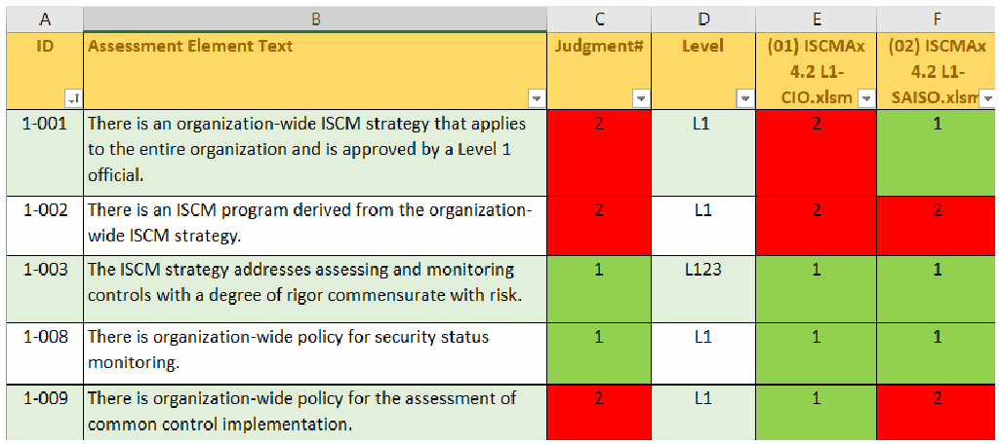
推奨判定の場合のレベルワークシートの画面です。列記号は A〜F、見出しは ID、Assessment Element Text、Judgment#、Level、「(01) ISCMAx 4.2 L1-CIO.xlsm」「(02) ISCMAx 4.2 L1-SAISO.xlsm」です。行は、1-001: 2、L1、2、1。1-002: 2、L1、2、2。1-003: 1、L123、1、1。1-008: 1、L1、1、1。1-009: 2、L1、1、2 です。1 のセルは緑、2 のセルは赤です。
Figure 35 – Level3 Worksheet (Recommended Judgments)
図 35 – Level3 ワークシート（推奨判断）
For alternate judgments, the Level3 worksheet in Figure 36 shows that element 2-004a was judged 2 (Somewhat True) in assessment worksheet (05). The resultant judgment of 2 (Somewhat True) in Column C is identical to Column E because there is only one Level 3 assessment worksheet.
代替判断の場合、図 36 の Level3 ワークシートは、要素 2-004a が評価ワークシート (05) で 2（Somewhat True）と判断されたことを示しています。レベル 3 の評価ワークシートは一つしかないため、列 C の結果の判断 2（Somewhat True）は列 E と同一です。
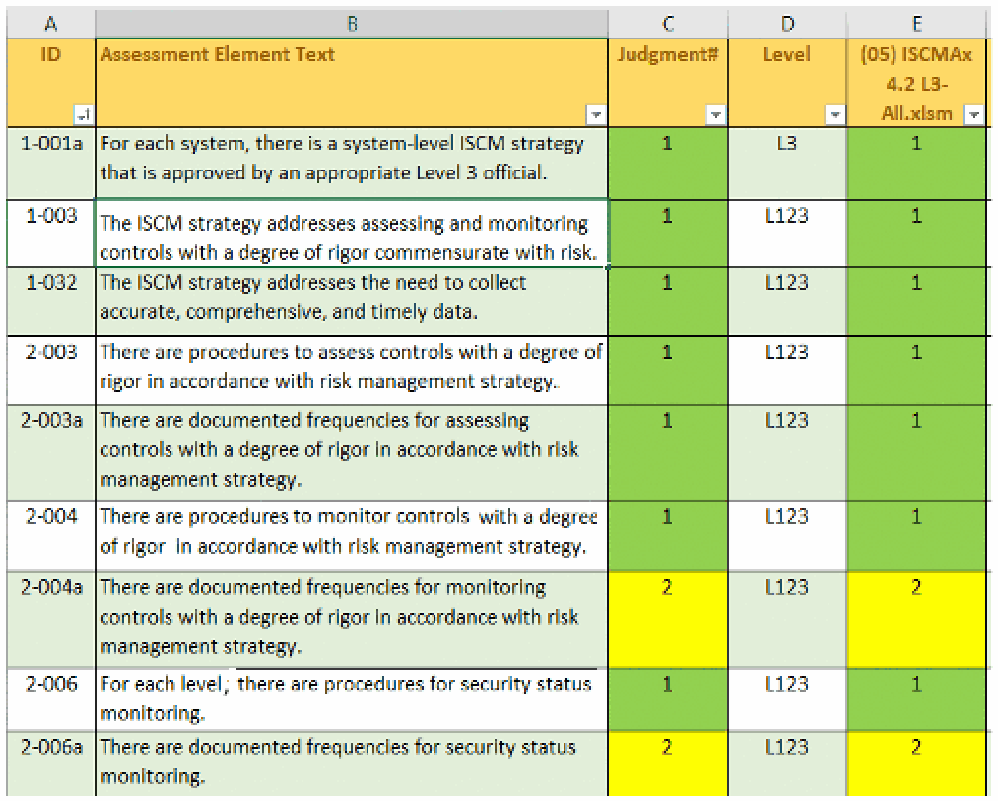
代替判定の場合のレベルワークシートの画面です。列記号は A〜E、見出しは ID、Assessment Element Text、Judgment#、Level、「(05) ISCMAx 4.2 L3-All.xlsm」です。行は、1-001a: 1、L3、1。1-003: 1、L123、1。1-032: 1、L123、1。2-003: 1、L123、1。2-003a: 1、L123、1。2-004: 1、L123、1。2-004a: 2、L123、2。2-006: 1、L123、1。2-006a: 2、L123、2 です。1 のセルは緑、2 のセルは黄です。
Figure 36 – Level1 Worksheet (Alternate Judgments)
図 36 – Level1 ワークシート（代替判断）
4.11 Chains Worksheet
4.11 Chains ワークシート
A chain is a set of elements that represents a complete assessment concept. More precisely:
チェーンとは、一つの完結した評価概念を表す要素の集合です。より正確には次のとおりです。
•There is exactly one element in the chain, called the root, that has no parent; and
•チェーン内には、親を持たない、ルートと呼ばれる要素がちょうど一つあります。
•Every element whose parent is in the chain is also in the chain.
•親がチェーン内にあるすべての要素は、同じくチェーン内にあります。
A chain can be visually represented as a tree-like structure based on the is-a-parent-of relationship. The root of the chain is shown on the far left in Figure 37. The chain display includes the following visual properties:
チェーンは、親子関係（is-a-parent-of）に基づく木のような構造として視覚的に表現できます。チェーンのルートは、図 37 の左端に示されます。チェーンの表示には、次の視覚的特性があります。
•The connecting lines represent the is-a-parent-of relationship.
•接続線は親子関係（is-a-parent-of）を表します。
•Each large box represents an assessment element and contains the element ID (top left corner), the overall judgment number (top center), and the element text.
•大きな箱はそれぞれ評価要素を表し、要素 ID（左上隅）、総合判断番号（上部中央）、および要素テキストを含みます。
•The upper right corner of each large box shows up to three smaller boxes containing the individual judgment numbers for the three risk management levels in order.
•各大きな箱の右上隅には、三つのリスクマネジメントレベルの個別の判断番号を順に含む、最大三つの小さな箱が表示されます。
•Where a risk management level does not apply to the element, the 🚫 symbol appears instead of a small box.
•リスクマネジメントレベルが要素に適用されない場合、小さな箱の代わりに 🚫 記号が表示されます。
•The color of the large box corresponds to the overall judgment for the element.
•大きな箱の色は、その要素の総合判断に対応します。
•The color of each small box corresponds to the judgment for its corresponding level.
•各小さな箱の色は、対応するレベルの判断に対応します。
Although chains are graphically represented in general in [SP800-137A], the chains produced by the merge process in [ISCMAx] include levels and judgments.
[SP800-137A] では一般にチェーンがグラフィカルに表現されていますが、[ISCMAx] の統合プロセスが作成するチェーンには、レベルと判断が含まれます。
For recommended judgments, an example chain is shown in Figure 37.
推奨判断の場合のチェーンの例を図 37 に示します。
For alternate judgments, an example chain is shown in Figure 38
代替判断の場合のチェーンの例を図 38 に示します。
![Chain diagram for "22 Security Status Reporting" (recommended judgments). Root box 1-027 "There is an organization-wide policy for security status reporting." overall 1, level boxes 1 and two not-applicable symbols (green). It connects to 2-033 "There are organization-wide procedures for security status reporting." overall 2, levels 2, 1, not applicable (red), and to 2-033a "There are documented frequencies for security status reporting." overall 2, levels 1, 2, 2 (red), which leads to 3-049 "The procedures for security status reporting are followed at the documented frequencies." overall 2, levels 1, 1, 2 (red), and then 4-007 "The ISCM program includes submission of specified security-related information to the Federal ISCM dashboard operated by DHS." overall 1, level 1 and two not-applicable symbols (green).](assets/ir-8212/p0061-figure-01.png)
推奨判定の場合の「22 Security Status Reporting」のチェーン図です。根の箱 1-027「There is an organization-wide policy for security status reporting.」は総合 1、レベルの小箱は 1 と適用外記号2つ（緑）です。そこから 2-033「There are organization-wide procedures for security status reporting.」（総合 2、レベル 2・1・適用外、赤）と、2-033a「There are documented frequencies for security status reporting.」（総合 2、レベル 1・2・2、赤）に分かれ、2-033a は 3-049「The procedures for security status reporting are followed at the documented frequencies.」（総合 2、レベル 1・1・2、赤）、さらに 4-007「The ISCM program includes submission of specified security-related information to the Federal ISCM dashboard operated by DHS.」（総合 1、レベル 1 と適用外記号2つ、緑）へ続きます。
Figure 37 – Chain (Recommended Judgments)
図 37 – チェーン（推奨判断）
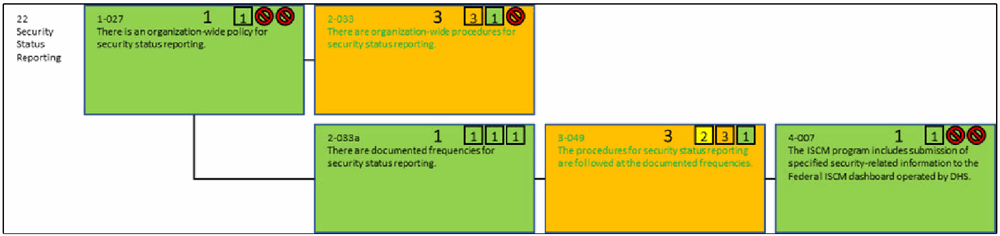
代替判定の場合の「22 Security Status Reporting」のチェーン図で、要素は図37と同じです。1-027 は総合 1、レベル 1（緑）、2-033 は総合 3、レベル 3・1・適用外（橙）、2-033a は総合 1、レベル 1・1・1（緑）、3-049 は総合 3、レベル 2・3・1（橙）、4-007 は総合 1、レベル 1（緑）です。適用外のレベルは禁止記号で示されています。
Figure 38 – Chain (Alternate Judgments)
図 38 – チェーン（代替判断）
Chains provide an additional way to organize and analyze the elements and associated scores that is independent of any reporting view. Each chain shows all the elements that address a single ISCM topic and its implementation across multiple ISCM process steps. For example, Figure 38 shows all of the elements that address Security Status Reporting.
チェーンは、どの報告ビューにも依存しない、要素と関連するスコアを整理・分析するための追加の方法を提供します。各チェーンは、単一の ISCM のトピックと、複数の ISCM プロセスステップにわたるその実装に対処するすべての要素を示します。たとえば、図 38 は、セキュリティ状況の報告（Security Status Reporting）に対処するすべての要素を示しています。
4.12 JudgmentTable Worksheet
4.12 JudgmentTable ワークシート
The JudgmentTable worksheet has the same structure as the table shown in Figure 6 (for recommended judgments) and Figure 7 (for alternate judgments) for obtaining a single judgment by combining judgments from two different risk management levels. All the numbers in Figure 39 and Figure 40 represent relative judgment numbers, as described in Section 4.8. Judgments from all three levels are combined by first combining levels 2 and 3 and then combining the result with Level 1.
JudgmentTable ワークシートは、二つの異なるリスクマネジメントレベルの判断を組み合わせて単一の判断を得るための、図 6（推奨判断）および図 7（代替判断）に示した表と同じ構造を持っています。図 39 と図 40 のすべての数値は、セクション 4.8 で説明した相対判断番号を表します。三つすべてのレベルの判断は、まずレベル 2 と 3 を組み合わせ、次にその結果をレベル 1 と組み合わせることで統合されます。
Figure 39 shows the judgment combination table for recommended judgments.
図 39 は、推奨判断の判断組み合わせ表を示します。
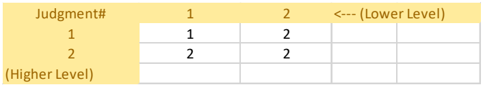
推奨判定の場合の JudgmentTable ワークシートの画像です。最上行は「Judgment#」、1、2、「<--- (Lower Level)（下位レベル）」です。行は、1: 1、2。2: 2、2。最終行のラベルは「(Higher Level)（上位レベル）」です。ラベルは淡い黄色の背景に金色の文字です。
Figure 39 – Judgment Combination Table (Recommended Judgments)
図 39 – 判断組み合わせ表（推奨判断）
Figure 40 shows the judgment combination table for alternate judgments.
図 40 は、代替判断の判断組み合わせ表を示します。
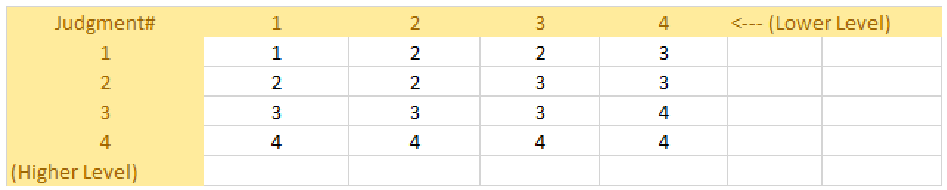
代替判定の場合の JudgmentTable ワークシートの画像です。最上行は「Judgment#」、1、2、3、4、「<--- (Lower Level)（下位レベル）」です。行は、1: 1、2、2、3。2: 2、2、3、3。3: 3、3、3、4。4: 4、4、4、4。最終行のラベルは「(Higher Level)（上位レベル）」です。
Figure 40 – Judgment Combination Table (Alternate Judgments)
図 40 – 判断組み合わせ表（代替判断）
5 Tailoring
5 テーラリング
[ISCMAx] may be tailored to meet organization-specific needs. This section describes how tailoring is performed.
[ISCMAx] は、組織固有のニーズを満たすようにテーラリングできます。本セクションでは、テーラリングの実施方法を説明します。
Tailoring is an organizational activity rather than a user activity. Because a single instance of ISCMAx operates at a single risk management level, there are at least three instances of ISCMAx involved in an organizational assessment (i.e., at least one instance for each risk management level). Each instance is an unmodified copy of the post-tailoring principal template.
テーラリングは、ユーザーの活動ではなく、組織の活動です。ISCMAx の単一のインスタンスは単一のリスクマネジメントレベルで動作するため、組織の評価には少なくとも三つの ISCMAx インスタンス（すなわち、リスクマネジメントレベルごとに少なくとも一つのインスタンス）が関与します。各インスタンスは、テーラリング後の主テンプレートを変更せずにコピーしたものです。
5.1 Tailoring the Elements
5.1 要素のテーラリング
No [ISCMAx] element tailoring actions are performed on the Assessment worksheet. The organization does not directly modify the Assessment worksheet, which is programmatically derived from the Element worksheet and overwritten whenever the risk management level is changed. Element tailoring is performed on the Elements worksheet.
原本PDFの抜粋画像
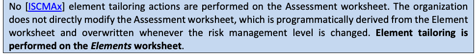
[ISCMAx] の要素のテーラリング措置は、Assessment ワークシートでは行いません。組織は Assessment ワークシートを直接変更しません。このワークシートは Element ワークシートからプログラムによって派生し、リスクマネジメントレベルが変更されるたびに上書きされます。要素のテーラリングは Elements ワークシートで行います。
The Elements worksheet of an assessment file contains the key data underlying ISCMAx and is the source for all elements and associated attributes. To access the Elements worksheet for tailoring, click on the Tailor Assessment button in the far upper right of the assessment form. The Elements worksheet consists of the columns shown in Table 11.
評価ファイルの Elements ワークシートには、ISCMAx の基盤となる主要なデータが含まれており、すべての要素と関連する属性の元データとなっています。テーラリングのために Elements ワークシートを開くには、評価フォームの右上端にある Tailor Assessment ボタンをクリックします。Elements ワークシートは、表 11 に示す列で構成されます。
Table 11 – Elements Worksheet
表 11 – Elements ワークシート
| Column | Description |
|---|---|
| ID | The element’s unique identifier |
| Assessment Element Text | The full text of the element, representing an ISCM concept |
| Level | The risk management level(s) that evaluate the element (see Section 2.4) |
| Critical | A Yes/No value signifying that an element is of greater importance than non-critical elements (see [SP800-137A] for the criteria for this designation) |
| Process Step | The ISCM process step associated with the element |
| Perspective | The value for the Perspective view |
| CSF Function | The value for the CSF Function view |
| CSF Category | The value for the CSF Category view |
| CSF.CAT | The value for the CSF.CAT view |
| Chain Label | The value for the descriptive label of the chain containing the element; the chain label is also used as the default presentation of the elements into sections during assessment |
| Parent | The element, if any, with the next higher ISCM process step that represents the same ISCM concept as the current element; both the element and its parent are part of the same chain |
| Source | The source for this element (from [Catalog]) |
| Assessment Procedure | The assessment procedure for this element (from [Catalog]) |
| Discussion | Assistance and explanation to facilitate consistent evaluation of the element (from [Catalog]) |
| Rationale for Level | Explanation of why a given element applies to one or more risk management levels |
| Chain Sort | A key for sorting assessment elements so that they are grouped into chains and ordered by ISCM Process Step within the chain |
| 列 | 説明 |
|---|---|
| ID | 要素の一意の識別子 |
| Assessment Element Text | ISCM の概念を表す、要素の全文 |
| Level | 要素を評価するリスクマネジメントレベル（セクション 2.4 を参照） |
| Critical | 要素が非重要の要素よりも重要度が高いことを示す Yes/No の値（この指定の基準については [SP800-137A] を参照） |
| Process Step | 要素に関連付けられた ISCM プロセスステップ |
| Perspective | Perspective ビューの値 |
| CSF Function | CSF Function ビューの値 |
| CSF Category | CSF Category ビューの値 |
| CSF.CAT | CSF.CAT ビューの値 |
| Chain Label | 要素を含むチェーンの説明ラベルの値。チェーンラベルは、評価中に要素をセクションに分けて提示する際の既定の表示にも使われる |
| Parent | 現在の要素と同じ ISCM 概念を表す、次に上位の ISCM プロセスステップの要素（ある場合）。要素とその親は同じチェーンに属する |
| Source | この要素の出典（[Catalog] より） |
| Assessment Procedure | この要素の評価手順（[Catalog] より） |
| Discussion | 要素の一貫した評価を促進するための補助と説明（[Catalog] より） |
| Rationale for Level | ある要素が一つ以上のリスクマネジメントレベルに適用される理由の説明 |
| Chain Sort | 評価要素をチェーンごとにグループ化し、チェーン内では ISCM プロセスステップ順に並べるための並べ替えキー |
The actions available for tailoring elements are shown in Table 12.
要素のテーラリングに使用できる措置を表 12 に示します。
Table 12 – Tailoring Actions for the Element Worksheet
表 12 – Element ワークシートのテーラリング措置
| Tailoring Action | ISCMAx Mechanism |
|---|---|
| Modify the text of an element |
|
| Modify one of an element’s view mappings |
|
| Modify the discussion for an element |
|
| Modify the criticality of an element |
|
| Add a new element |
|
| Delete an element Note: It is recommended that original ISCMA elements are not deleted. Element deletion is intended only for elements previously added by the organization. |
|
| Modify the level for an element |
|
| テーラリング措置 | ISCMAx の仕組み |
|---|---|
| 要素のテキストを変更する |
|
| 要素のビューへの対応付けの一つを変更する |
|
| 要素の解説を変更する |
|
| 要素の重要度を変更する |
|
| 新しい要素を追加する |
|
| 要素を削除する 注: 元の ISCMA の要素は削除しないことが推奨されます。要素の削除は、組織があらかじめ追加した要素のみを対象としています。 |
|
| 要素のレベルを変更する |
|
5.2 Tailoring Views
5.2 ビューのテーラリング
Views are implemented in the Store worksheet in the section labeled “…Views.” To access the Store worksheet for tailoring, click on the Tailor Assessment button in the far upper right of the assessment form. There is one row for each view and an additional row that lists all the views. The first view in the list of all views is known as the primary view and is used to organize the elements during the assessment. The ISCMAx default primary view is the Section view.15 Other than by identifying the primary view, the order of the views in the view list affects only the position of the view’s output in the ScoreSummary worksheet.
ビューは、Store ワークシートの「…Views」というラベルのセクションに実装されています。テーラリングのために Store ワークシートを開くには、評価フォームの右上端にある Tailor Assessment ボタンをクリックします。ビューごとに 1 行があり、さらにすべてのビューを列挙する追加の行が 1 つあります。すべてのビューの一覧の最初のビューは主ビューとして知られ、評価中に要素を整理するために使用されます。ISCMAx の既定の主ビューは Section ビューです。15主ビューを特定する以外に、ビュー一覧内のビューの順序が影響するのは、ScoreSummary ワークシートでのそのビューの出力の位置だけです。
There is also a row for view aliases, which are used to provide alternate names on the radar charts, should this be desired.
ビューのエイリアスの行もあり、必要に応じてレーダーチャートで別名を提供するために使用されます。
Note that ISCM Process Step is listed as a view. While ISCM Process Step is a view in many respects, the ISCM Process Step view has a special role in ISCMA as the foundation of the ISCM process, and modifying individual ISCM process steps or deleting the ISCM Process Step view undermines the integrity of the ISCMAx application.
ISCM Process Step がビューとして挙げられていることに注意してください。ISCM Process Step は多くの点でビューですが、ISCMA においては ISCM プロセスの基盤として特別な役割を持っており、個々の ISCM プロセスステップを変更したり ISCM Process Step ビューを削除したりすると、ISCMAx アプリケーションの完全性が損なわれます。
The actions available for tailoring views are shown in Table 13.
ビューのテーラリングに使用できる措置を表 13 に示します。
Table 13 – ISCMA View Tailoring Actions
表 13 – ISCMA ビューのテーラリング措置
| Tailoring Action | ISCMAx Mechanism |
|---|---|
| Modifying which view is the primary view | In the Store worksheet:
|
| Add a view | In the Store worksheet:
|
| Delete a view | In the Store worksheet:
|
| Modify the items associated with a view | In the Store worksheet:
|
| テーラリング措置 | ISCMAx の仕組み |
|---|---|
| 主ビューとするビューを変更する | Store ワークシートで:
|
| ビューを追加する | Store ワークシートで:
|
| ビューを削除する | Store ワークシートで:
|
| ビューに関連付けられた項目を変更する | Store ワークシートで:
|
5.3 Tailoring Judgments
5.3 判断のテーラリング
Tailoring the judgments that can be made about an element is the most complex tailoring action that can be made to ISCMAx. There are up to three separate tasks required to tailor judgments:
要素について下せる判断のテーラリングは、ISCMAx に対して行える最も複雑なテーラリング措置です。判断のテーラリングに必要な個別のタスクは最大三つあります。
1.Tailoring the individual judgments themselves
1.個々の判断そのもののテーラリング
2.Tailoring the element-level guidance for making the judgments
2.判断を下すための要素レベルのガイダンスのテーラリング
3.Tailoring the table used to combine multiple judgments across risk management levels
3.リスクマネジメントレベル間で複数の判断を組み合わせるために使う表のテーラリング
The tasks required to tailor judgments are addressed in the next three sub-sections, and an additional example of tailoring judgments is described in Section 5.6.
判断のテーラリングに必要なタスクは次の三つの小節で扱い、判断のテーラリングの追加の例はセクション 5.6 で説明します。
Judgments are tightly related to scoring, but judgments and scoring can be tailored independently to some extent. See Section 5.4 for a discussion of tailoring scoring.
判断はスコア付けと密接に関連していますが、判断とスコア付けはある程度独立してテーラリングできます。スコア付けのテーラリングの説明は、セクション 5.4 を参照してください。
5.3.1 Judgment Labels
5.3.1 判断ラベル
The judgments that can be made about an element are stored as items in a list that is strongest at the beginning (left) and weakest at the end (right) with possible gradations between. The minimum number of judgments is two.
要素について下せる判断は、先頭（左）が最も強く、末尾（右）が最も弱く、その間に段階があり得る一覧の項目として保存されます。判断の最小数は 2 です。
Figure 41 shows the recommended ISCMA judgment labels, as specified in [SP800-137A].
図 41 に、[SP800-137A] で規定された、推奨される ISCMA の判断ラベルを示します。
スプレッドシートの1行です。「JudgmentLabels」に続いて「Satisfied」（緑の塗り）と「Other Than Satisfied」（赤の塗り）が並びます。
Figure 41 – Judgment Configuration Parameters (Recommended Judgments)
図 41 – 判断構成パラメータ（推奨判断）
Figure 42 shows the alternate ISCMA judgment labels.
図 42 に、代替の ISCMA の判断ラベルを示します。
スプレッドシートの1行です。「JudgmentLabels」に続いて「Mostly / |Completely True」（緑の塗り）、「Somewhat| True」（黄）、「Mostly| False」（橙）、「Completely| False」（赤）が並びます。
Figure 42 – Judgment Configuration Parameters (Alternate Judgments)
図 42 – 判断構成パラメータ（代替判断）
The judgment labels appear directly on the assessment form and the appropriate judgement is selected via a radio button. The vertical bar symbol (“|”) in a judgment label indicates a line break at that location in the label, which is useful for conserving horizontal real estate on the assessment form and allowing the user to control where breaks are in the longer tables. In any other use of these labels, this symbol is ignored.
判断ラベルは評価フォームに直接表示され、適切な判断はラジオボタンで選択されます。判断ラベル内の縦棒記号（「|」）は、ラベル内のその位置での改行を示します。これは、評価フォームの横方向の領域を節約し、長い表のどこで改行するかをユーザーが制御できるようにするのに役立ちます。これらのラベルの他の用途では、この記号は無視されます。
A fill color is assigned to each judgment label and appears on the assessment form when a judgment is selected. The cells in the Assessment worksheets that store judgments are also filled with the assigned color.
各判断ラベルには塗りつぶしの色が割り当てられ、判断が選択されたときに評価フォームに表示されます。判断を保存する Assessment ワークシートのセルも、割り当てられた色で塗りつぶされます。
5.3.2 Intra-Level Judgment Conflict Resolution
5.3.2 レベル内の判断の競合解消
The configuration setting that determines how multiple judgments at the same risk management level are consolidated is the UseMajorityJudgment setting found in the section labeled Judgments & Scoring in the Store worksheet, shown in Figure 43. A setting of TRUE indicates the use of the Majority Judgment rule, while a setting of FALSE indicates the use of the Weakest Judgment rule. The judgment rules are described in detail in Section 2.8.1.
同じリスクマネジメントレベルの複数の判断をどのように統合するかを決定する構成設定は、図 43 に示す、Store ワークシートの Judgments & Scoring というラベルのセクションにある UseMajorityJudgment 設定です。設定が TRUE の場合は多数決判断の規則を使用し、FALSE の場合は最弱判断の規則を使用します。判断の規則は、セクション 2.8.1 で詳しく説明しています。
スプレッドシートの1行です。「UseMajorityJudgment」の値は「TRUE」です。
Figure 43 – Intra-Level Judgment Conflict Resolution Setting
図 43 – レベル内の判断の競合解消の設定
5.3.3 The Judgment Combination Table
5.3.3 判断組み合わせ表
The table used to combine inter-level judgments is stored in the JudgmentTable worksheet. The judgment combination table is used only during the merge process, where risk management levels are combined to obtain a single overall judgment for each element.
レベル間の判断を組み合わせるために使う表は、JudgmentTable ワークシートに保存されています。判断組み合わせ表は、リスクマネジメントレベルを組み合わせて各要素の単一の総合判断を得る、統合プロセス中にのみ使用されます。
The judgment combination table is constructed and modified by direct manual input into the cells of the JudgmentTable worksheet. The table satisfies the following list of [ISCMAx] requirements. Each item in the list is labeled with a letter that corresponds to a letter position in Figure 44 (recommended judgments) or Figure 45 (alternate judgments).
判断組み合わせ表は、JudgmentTable ワークシートのセルに直接手作業で入力することで構築・変更します。この表は、次の [ISCMAx] の要件の一覧を満たします。一覧の各項目には、図 44（推奨判断）または図 45（代替判断）の文字位置に対応する文字が付されています。
a.The table has a unique cell containing the word “Judgment#.” The Judgment# cell is referred to as the base cell.
a.表には、「Judgment#」という語を含む一意のセルがあります。Judgment# セルを基準セルと呼びます。
b.Immediately to the right of the base cell is the row of all relative judgment numbers (see Section 4.8) 1, 2, …, N, where N is the number of judgments. The values locate the judgment for the lower16 level and are used to identify the columns of the table.
b.基準セルのすぐ右には、すべての相対判断番号（セクション 4.8 を参照）1、2、…、N の行があります。ここで N は判断の数です。これらの値は下位16レベルの判断の位置を示し、表の列を識別するために使われます。
c.Immediately below the base cell is a column of relative judgment numbers 1, 2, …, N. These values locate the judgment for the higher level and are used to identify the rows of the table.
c.基準セルのすぐ下には、相対判断番号 1、2、…、N の列があります。これらの値は上位レベルの判断の位置を示し、表の行を識別するために使われます。
d.Any cells other than the (N+1)2 cells bounded by the cells defined above are ignored.
d.上記で定義されたセルで囲まれた (N+1)2 個のセル以外のセルは無視されます。
e.The order of the judgment numbers corresponds to the order in the judgment list in the Store worksheet.
e.判断番号の順序は、Store ワークシートの判断の一覧の順序に対応します。
f.The value in any cell is the desired judgment number resulting from combining the higher level judgment (row label) with the lower level judgment (column label). This corresponds with Figure 6, Inter-Level Consolidation (Recommended Judgements).
f.任意のセルの値は、上位レベルの判断（行ラベル）と下位レベルの判断（列ラベル）を組み合わせた結果となる、目的の判断番号です。これは、図 6「レベル間の統合（推奨判断）」に対応します。
g.For any cell on the diagonal, the value is the same as the row label or column label. That is, if the inputs are the same, then the result is the same as the inputs. This corresponds with Figure 7, Inter-Level Consolidation (Alternative Judgements).
g.対角線上の任意のセルでは、値は行ラベルまたは列ラベルと同じです。すなわち、入力が同じであれば、結果も入力と同じになります。これは、図 7「レベル間の統合（代替判断）」に対応します。
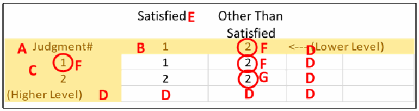
推奨判定の結合表に赤い文字で注記した図です。列の上に「Satisfied」（E）と「Other Than Satisfied」があります。「Judgment#」の行（A）に 1（B）、丸で囲んだ 2（F）、「<--- (Lower Level)」（D）が続きます。その下の列は丸で囲んだ 1（F）と 2（C）です。セルは、1 の行が 1、丸で囲んだ 2（F）、2 の行が 2、丸で囲んだ 2（G）です。右側のセルと「(Higher Level)」の行には D が付いています。
Figure 44 – Judgment Combination Table Details (Recommended Judgments)
図 44 – 判断組み合わせ表の詳細（推奨判断）

代替判定の結合表に赤い文字で注記した図です。列の上に「Mostly / Completely True」「Somewhat True」「Mostly False」「Completely False」（E）があります。「Judgment#」の行（A）に 1（B）、2、3、丸で囲んだ 4（F）、「<--(Lower Level)」（D）が続きます。行は 1〜4 で、行ラベルの 3 が丸で囲まれ（F）、2 の横に C があります。セルは、1 の行が 1（G）、2、2、3、2 の行が 2、2（G）、3、3、3 の行が 3、3、3（G）、丸で囲んだ 4（F）、4 の行が 4、4、4、4（G）です。右側の余分なセルと「(Higher Level)」の行には D が付いています。
Figure 45 – Judgment Combination Table Details (Alternate Judgments)
図 45 – 判断組み合わせ表の詳細（代替判断）
There is no requirement that the table be symmetric. In the example in Figure 45, combining row 3 (Mostly False) and column 1 (Mostly/Completely True) yields a 3 (Mostly False), while combining row 1 (Mostly/Completely True) and column 3 (Mostly False) yields a 2 (Somewhat True), which indicates that the judgment combination table in Figure 45 includes the following conflict resolution rules:
表が対称である必要はありません。図 45 の例では、行 3（Mostly False）と列 1（Mostly/Completely True）を組み合わせると 3（Mostly False）になり、行 1（Mostly/Completely True）と列 3（Mostly False）を組み合わせると 2（Somewhat True）になります。これは、図 45 の判断組み合わせ表に次の競合解消規則が含まれていることを示しています。
•If the higher level judgment is Mostly False and the lower level judgment is Mostly/Completely True, the result is Mostly False.
•上位レベルの判断が Mostly False で、下位レベルの判断が Mostly/Completely True の場合、結果は Mostly False です。
•If the higher level judgment is Mostly/Completely True and the lower level judgment is Mostly False, the result is Somewhat True.
•上位レベルの判断が Mostly/Completely True で、下位レベルの判断が Mostly False の場合、結果は Somewhat True です。
5.3.4 Summary of Judgment Tailoring Actions
5.3.4 判断テーラリング措置の要約
A summary of all judgment tailoring actions is shown in Table 14.
判断のテーラリング措置をすべてまとめたものを表 14 に示します。
Table 14 – Judgment Tailoring Actions
表 14 – 判断のテーラリング措置
| Tailoring Action | ISCMAx Implementation |
|---|---|
| Modify judgment text | In the Store worksheet:
|
| Modify judgment colors | In the Store worksheet:
|
| Add a new judgment | In the Store worksheet:
|
| Delete a judgment | In the Store worksheet:
|
| Choose the intra-level conflict resolution algorithm | In the Store worksheet:
|
| Modify the judgment combination Table | In the JudgmentTable worksheet:
|
| テーラリング措置 | ISCMAx の実装 |
|---|---|
| 判断のテキストを変更する | Store ワークシートで:
|
| 判断の色を変更する | Store ワークシートで:
|
| 新しい判断を追加する | Store ワークシートで:
|
| 判断を削除する | Store ワークシートで:
|
| レベル内の競合解消アルゴリズムを選択する | Store ワークシートで:
|
| 判断組み合わせ表を変更する | JudgmentTable ワークシートで:
|
5.4 Tailoring Scoring
5.4 スコア付けのテーラリング
Scoring is based on the rows in the Store worksheet, as shown in Figure 46 (recommended judgments) and Figure 47 (alternate judgments), which contain the entire set of Judgments and Scoring tailoring options. The options which have not already been described in Section 5.3 are:
スコア付けは、図 46（推奨判断）および図 47（代替判断）に示す Store ワークシートの行に基づいており、これらには判断とスコア付けのテーラリングオプションの全体が含まれています。セクション 5.3 でまだ説明していないオプションは次のとおりです。
a.ScoringValues, a row of numeric values corresponding to the judgments in the JudgmentLabels row. The values are in non-increasing order, left to right. The first value represents the strongest judgment and is always 1.0. The last value represents the weakest judgment and is always 0.0. The number of ScoringValues in this list is the same as the number of JudgmentLabels.
a.ScoringValues。JudgmentLabels 行の判断に対応する数値の行。値は左から右へ非増加の順になります。最初の値は最も強い判断を表し、常に 1.0 です。最後の値は最も弱い判断を表し、常に 0.0 です。この一覧の ScoringValues の数は、JudgmentLabels の数と同じです。
b.CriticalWeight, the value used as a weighting factor for the scores of critical elements. Non-critical elements are assumed to have a weight of 1.0, and CriticalWeight is assumed to be ≥ 1.0. The default CriticalWeight for ISCMA is 3.0.
b.CriticalWeight。重要な要素のスコアの重み係数として使われる値。非重要な要素の重みは 1.0 とみなされ、CriticalWeight は 1.0 以上とみなされます。ISCMA の既定の CriticalWeight は 3.0 です。
c.ScoringRanges, a row of numeric values that are used to group scores. The values represent the highest values of ranges. The number of ScoringRanges is independent of the number of JudgmentLabels. The ScoringRanges are used in the graphical output radar charts shown in Figure and Figure 27.
c.ScoringRanges。スコアをグループ化するために使われる数値の行。値は範囲の最大値を表します。ScoringRanges の数は JudgmentLabels の数とは無関係です。ScoringRanges は、図および図 27 に示すグラフ出力のレーダーチャートで使われます。
d.ScoringRangeSymbols, a row of symbols used to indicate both points on radar charts and colors for the associated ScoringRanges. The number of symbols matches the number of ScoringRanges. The symbols can be from any alphabet and will appear on radar charts exactly as they look in the Store worksheet. Note that, if desired, ScoringRangeSymbols can be used for letter grades, using the symbols “A,” “B,” etc. The font color of the symbols also determines the colors used in the summary scores bar shown in Figure 26.
d.ScoringRangeSymbols。レーダーチャート上の点と、関連する ScoringRanges の色の両方を示すために使われる記号の行。記号の数は ScoringRanges の数と一致します。記号は任意の文字体系のものでよく、Store ワークシートで見えるとおりにレーダーチャートに表示されます。なお、必要であれば、ScoringRangeSymbols を「A」「B」などの記号を使った文字による評点に用いることができます。記号のフォントの色は、図 26 に示すサマリースコアバーで使われる色も決定します。
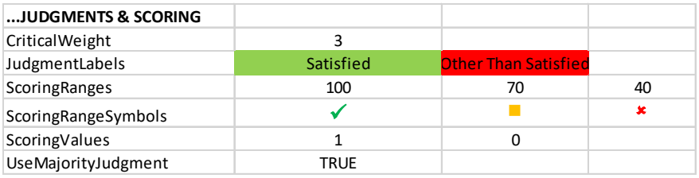
推奨判定の場合の Store ワークシートの「...JUDGMENTS & SCORING」の部分です。CriticalWeight: 3。JudgmentLabels: Satisfied（緑の塗り）、Other Than Satisfied（赤の塗り）。ScoringRanges: 100、70、40。ScoringRangeSymbols: 緑のチェック記号、黄色の四角、赤のばつ印。ScoringValues: 1、0。UseMajorityJudgment: TRUE です。
Figure 46 – Judgments and Scoring Tailoring (Recommended Judgments)
図 46 – 判断とスコア付けのテーラリング（推奨判断）
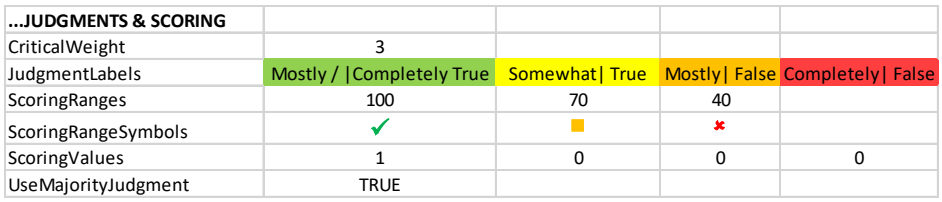
代替判定の場合の Store ワークシートの「...JUDGMENTS & SCORING」の部分です。CriticalWeight: 3。JudgmentLabels: Mostly / |Completely True（緑）、Somewhat| True（黄）、Mostly| False（橙）、Completely| False（赤）。ScoringRanges: 100、70、40。ScoringRangeSymbols: 緑のチェック記号、黄色の四角、赤のばつ印。ScoringValues: 1、0、0、0。UseMajorityJudgment: TRUE です。
Figure 47 – Judgment and Scoring Tailoring (Alternate Judgments)
図 47 – 判断とスコア付けのテーラリング（代替判断）
For example, the rows in Figure 46 and Figure 47 each state that:
たとえば、図 46 と図 47 の各行は、次のことを示しています。
•All scores x, 100 >= x > 70 are in the green range.
•100 >= x > 70 であるすべてのスコア x は、緑の範囲にあります。
•All scores x, 70 >= x > 40 are in the yellow range.
•70 >= x > 40 であるすべてのスコア x は、黄色の範囲にあります。
•All scores x, 40 >= x >= 0 are in the red range.
•40 >= x >= 0 であるすべてのスコア x は、赤の範囲にあります。
Table 15 – ISCMA Scoring Tailoring Actions
表 15 – ISCMA スコア付けのテーラリング措置
| Tailoring Action | ISCMAx Mechanism |
|---|---|
| Modify the scores for each judgment | In the Store worksheet:
|
| Modify the relative weight for critical vs. non-critical elements | In the Store worksheet:
|
| Modify the scoring range values | In the Store worksheet:
|
| Modify the scoring range symbols | In the Store worksheet:
|
| Modify the scoring range colors | In the Store worksheet:
|
| テーラリング措置 | ISCMAx の仕組み |
|---|---|
| 各判断のスコアを変更する | Store ワークシートで:
|
| 重要な要素と非重要な要素の相対的な重みを変更する | Store ワークシートで:
|
| スコア範囲の値を変更する | Store ワークシートで:
|
| スコア範囲の記号を変更する | Store ワークシートで:
|
| スコア範囲の色を変更する | Store ワークシートで:
|
5.5 Miscellaneous Tailoring
5.5 その他のテーラリング
5.5.1 Tailoring the Instructions
5.5.1 手順のテーラリング
The instructions that appear on the initial screen of the assessment form may be tailored by directly modifying the Instructions worksheet. Anything, even a picture, that appears in column A is visible on the assessment form when the Instructions button is clicked.
評価フォームの最初の画面に表示される手順は、Instructions ワークシートを直接変更することでテーラリングできます。A 列に表示されるものは、画像であっても、Instructions ボタンをクリックしたときに評価フォームに表示されます。
The boundaries may also be moved. If either boundary is moved such that scrolling of the assessment form is necessary to see all of the content, the form will exhibit scrollbar(s).
境界を移動することもできます。いずれかの境界を、すべての内容を見るために評価フォームのスクロールが必要になるように移動した場合、フォームにはスクロールバーが表示されます。
5.5.2 Tailoring Miscellaneous Behavior Configurations
5.5.2 その他の動作設定のテーラリング
The following configuration items are available in the Store worksheet for unusual situations.
Store ワークシートには、特殊な状況のために、次の構成項目があります。
Table 16 – Miscellaneous Behavior Configuration
表 16 – その他の動作設定
| Configuration Item | Default Value | Description |
|---|---|---|
| AnswerRandomlyTargetScore | 75 | In the Excel View menu, the AnswerRandomly macro can be used to immediately fill the current assessment file with random judgments in order to achieve a specific target score. This may be useful to quickly create examples for testing purposes. The assessment screen must be closed before running the macro. |
| ChainBoxShow | Assessment Element | This is the name of the column of the Elements worksheet whose value is shown on the element nodes in the Chains tab of the principal worksheet. |
| ScrollWheelEnable | FALSE | This is an experimental feature that allows use of the mouse scroll wheel on the assessment form. Scroll wheel behavior is not automatically supported on Excel forms. If this value is FALSE, scrolling is achieved only by using the scroll bars. If this value is TRUE, the scroll wheel is enabled for element displays but will not always work on the Completion display. |
| ShowOverallScoreOnCharts | TRUE | This value can be set to FALSE to suppress the display of the overall score on radar charts in the principal assessments. |
| ShowSheets | FALSE | If this value is TRUE, all sheets in the assessment file are unhidden. The same effect can be achieved temporarily by running the ShowSheets macro. |
| 構成項目 | 既定値 | 説明 |
|---|---|---|
| AnswerRandomlyTargetScore | 75 | Excel の「表示」メニューで AnswerRandomly マクロを使用すると、特定の目標スコアを達成するように、現在の評価ファイルをランダムな判断で直ちに埋めることができます。テスト目的の例を素早く作成するのに役立つ場合があります。マクロを実行する前に、評価画面を閉じておかなければなりません。 |
| ChainBoxShow | Assessment Element | 主ワークシートの Chains タブの要素ノードに値が表示される、Elements ワークシートの列の名前。 |
| ScrollWheelEnable | FALSE | 評価フォームでマウスのスクロールホイールを使用できるようにする実験的な機能。スクロールホイールの動作は、Excel のフォームでは自動的にはサポートされません。この値が FALSE の場合、スクロールはスクロールバーを使った場合にのみ行えます。この値が TRUE の場合、要素の表示ではスクロールホイールが有効になりますが、Completion の表示では必ずしも動作しません。 |
| ShowOverallScoreOnCharts | TRUE | この値を FALSE に設定すると、主評価のレーダーチャートでの総合スコアの表示を抑止できます。 |
| ShowSheets | FALSE | この値が TRUE の場合、評価ファイルのすべてのシートの非表示が解除されます。同じ効果は、ShowSheets マクロを実行することでも一時的に得られます。 |
5.6 Example of Tailoring Judgments and Scoring
5.6 判断とスコア付けのテーラリングの例
To allow judgments on a 1 to 10 scale, tailor the appropriate rows of the Store worksheet as shown in Figure 48.
1 から 10 の尺度で判断できるようにするには、図 48 に示すように、Store ワークシートの該当する行をテーラリングします。
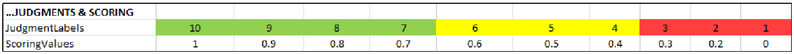
1〜10 の尺度に設定した Store ワークシートの「...JUDGMENTS & SCORING」の部分です。JudgmentLabels は 10、9、8、7（緑の塗り）、6、5、4（黄）、3、2、1（赤）、ScoringValues は 1、0.9、0.8、0.7、0.6、0.5、0.4、0.3、0.2、0 です。
Figure 48 – Configuring a 1 to 10 Scale
図 48 – 1 から 10 の尺度の構成
While 10 individual colors could be used here, three distinct colors—green, yellow, and red—are shown in Figure 48 to indicate a range. In addition, the scoring values chosen are uniformly decreasing (except at the end), but this can be customized by the organization.
ここでは 10 個の個別の色を使うこともできますが、図 48 では範囲を示すために、緑、黄、赤の三つの異なる色を示しています。加えて、選択したスコア値は（末尾を除き）一様に減少していますが、これは組織がカスタマイズできます。
The 1 to 10 judgment scale appears on the assessment form as shown in Figure 49.
1 から 10 の判断尺度は、図 49 に示すように評価フォームに表示されます。
![Screenshot of the assessment form with a 1 to 10 scale (Level 2 Detailed Assessment - Full Program, Completed 5 of 79). The left pane lists Instructions and Sections 1–10 with "Section 6: Threat Information (5/5 Complete)" selected. The right pane "Threat Information — Level 2 View" shows five elements, each with option buttons 10 to 1: 1. procedures for obtaining ongoing threat information (2-010), 7 selected (green); 2. the procedures are followed (3-012), 4 selected (yellow); 3. officials analyze information on known or emerging threats (4-012), 9 selected (green); 4. officials respond to applicable threats (5-007), 1 selected (red); 5. the ISCM strategy is reviewed to identify ways to improve the ability to respond to known and emerging threats (6-005), 3 selected (red).](assets/ir-8212/p0075-figure-01.png)
1〜10 の尺度にした評価フォームの画面です（Level 2 Detailed Assessment - Full Program、Completed 5 of 79）。左側には Instructions と Section 1〜10 が並び、「Section 6: Threat Information (5/5 Complete)」が選ばれています。右側の「Threat Information — Level 2 View」には5つの要素があり、それぞれ 10〜1 の選択ボタンがあります。1. 継続的な脅威情報の入手手順（2-010）は 7（緑）、2. 手順の実施（3-012）は 4（黄）、3. 既知・新たな脅威の情報の分析（4-012）は 9（緑）、4. 該当する脅威への対応（5-007）は 1（赤）、5. 脅威への対応能力を高めるための ISCM 戦略の見直し（6-005）は 3（赤）が選ばれています。
Figure 49 – Using a 1 to 10 Scale
図 49 – 1 から 10 の尺度の使用
The scoring values shown demonstrate what is possible. However, regardless of the number of judgment labels, it is recommended that there be no partial scoring credit (i.e., that the strongest judgment label’s scoring value be 1.0, and all remaining scoring values be 0.0).
示されているスコア値は、何が可能かを示しています。しかし、判断ラベルの数にかかわらず、部分的なスコア加点は設けないことが推奨されています（すなわち、最も強い判断ラベルのスコア値を 1.0 とし、残りのスコア値をすべて 0.0 とすることが推奨されています）。
5.7 The ISCMAx Version Identifier
5.7 ISCMAx バージョン識別子
The version identifier is displayed as part of the assessment form caption shown in Figure 16. The version identifier is a custom Excel document variable and is manually modified as part of the tailoring process. It is accessed from the Excel menu through File/Properties/Advanced Properties, which displays the dialog box in Figure 50.
バージョン識別子は、図 16 に示す評価フォームのキャプションの一部として表示されます。バージョン識別子は Excel のカスタムのドキュメント変数であり、テーラリングプロセスの一環として手動で変更します。Excel のメニューから「ファイル／プロパティ／詳細プロパティ」を選んでアクセスすると、図 50 のダイアログボックスが表示されます。
「ISCMAx 4.2.xlsm Properties」ダイアログの画面で、Custom タブが開いています（ほかのタブは General、Summary、Statistics、Contents）。Name は Version で、一覧に Checked by、Client、Date completed、Department、Destination、Disposition があります。Type は Text、Value は 4.2 です。Modify（無効）と Delete のボタン、「Link to content」のチェックボックスがあります。Properties の一覧（Name、Value、Type）は、Content... 0x0101008... Text、Order 556300 Number、URL Text、IconOve... Text、xd_ProgID Text、Template... Text、Version 4.2 Text（選択中）です。OK と Cancel のボタンがあります。 ［第三者の画像。第三者の著作物のため、この非公式サイトには掲載していません。原本 PDF を参照してください。］
Figure 50 – Modifying the ISCMAx Version Identifier
図 50 – ISCMAx バージョン識別子の変更
Type the new version identifier in the Value field. The version identifier can be replaced with any text, but it is recommended that the original version (4.0.4 in the example) be retained as a prefix (e.g., “4.0.4b Draft”) for traceability.
新しいバージョン識別子を Value フィールドに入力します。バージョン識別子は任意のテキストに置き換えられますが、追跡可能性のため、元のバージョン（例では 4.0.4）を接頭辞として残すべきです（例: 「4.0.4b Draft」）。
5.8 The Future of ISCMAx
5.8 ISCMAx の今後
[ISCMAx] is provided to the public as a reference implementation for the ISCMA methodology and is not intended to be a product that is enhanced by periodic updates. It is left to organizations, product vendors, or other interested parties to implement ISCMA with robust assessment products with additional features.
[ISCMAx] は、ISCMA 方法論の参照実装として一般に提供されており、定期的な更新によって機能が強化される製品となることを意図していません。追加機能を備えた堅牢な評価製品で ISCMA を実装することは、組織、製品ベンダー、その他の関心を持つ当事者に委ねられています。
References
参考文献
[Catalog] National Institute of Standards and Technology (2020) ISCM Assessment Procedures Catalog. Available at https://csrc.nist.gov/publications/detail/sp/800-137a/final
[Catalog] National Institute of Standards and Technology (2020) ISCM Assessment Procedures Catalog. 入手先: https://csrc.nist.gov/publications/detail/sp/800-137a/final
[CSF1.1] National Institute of Standards and Technology (2018) Framework for Improving Critical Infrastructure Cybersecurity, Version 1.1. (National Institute of Standards and Technology, Gaithersburg, MD). https://doi.org/10.6028/NIST.CSWP.04162018
[CSF1.1] National Institute of Standards and Technology (2018) Framework for Improving Critical Infrastructure Cybersecurity, Version 1.1. (National Institute of Standards and Technology, Gaithersburg, MD). https://doi.org/10.6028/NIST.CSWP.04162018
[ISCMAx] National Institute of Standards and Technology (2020) ISCMAx. Available from https://csrc.nist.gov/publications/detail/nistir/8212/final
[ISCMAx] National Institute of Standards and Technology (2020) ISCMAx. 入手先: https://csrc.nist.gov/publications/detail/nistir/8212/final
[IGMetrics] FY 2018 Inspector General Federal Information Security Modernization Act of 2014 (FISMA) Reporting Metrics Version 1.0.1, Department of Homeland Security, Washington, DC, May 2018. Available at https://www.cisa.gov/publication/fy18-fisma-documents
[IGMetrics] FY 2018 Inspector General Federal Information Security Modernization Act of 2014 (FISMA) Reporting Metrics Version 1.0.1, Department of Homeland Security, Washington, DC, May 2018. 入手先: https://www.cisa.gov/publication/fy18-fisma-documents
[SP800-37r2] Joint Task Force (2018) Risk Management Framework for Information Systems and Organizations: A System Life Cycle Approach for Security and Privacy. (National Institute of Standards and Technology, Gaithersburg, MD), NIST Special Publication (SP) 800-37, Rev. 2. https://doi.org/10.6028/NIST.SP.800-37r2
[SP800-37r2] Joint Task Force (2018) Risk Management Framework for Information Systems and Organizations: A System Life Cycle Approach for Security and Privacy. (National Institute of Standards and Technology, Gaithersburg, MD), NIST Special Publication (SP) 800-37, Rev. 2. https://doi.org/10.6028/NIST.SP.800-37r2
[SP800-39] Joint Task Force Transformation Initiative (2011) Managing Information Security Risk: Organization, Mission, and Information System View. (National Institute of Standards and Technology, Gaithersburg, MD), NIST Special Publication (SP) 800-39. https://doi.org/10.6028/NIST.SP.800-39
[SP800-39] Joint Task Force Transformation Initiative (2011) Managing Information Security Risk: Organization, Mission, and Information System View. (National Institute of Standards and Technology, Gaithersburg, MD), NIST Special Publication (SP) 800-39. https://doi.org/10.6028/NIST.SP.800-39
[SP800-53r5] Joint Task Force (2020) Security and Privacy Controls for Federal Information Systems and Organizations. (National Institute of Standards and Technology, Gaithersburg, MD), NIST Special Publication 800-53, Revision 5, Includes updates as of December 10, 2020. https://doi.org/10.6028/NIST.SP.800-53r5
[SP800-53r5] Joint Task Force (2020) Security and Privacy Controls for Federal Information Systems and Organizations. (National Institute of Standards and Technology, Gaithersburg, MD), NIST Special Publication 800-53, Revision 5, Includes updates as of December 10, 2020. https://doi.org/10.6028/NIST.SP.800-53r5
[SP800-137] Dempsey KL, Chawla NS, Johnson LA, Johnston R, Jones AC, Orebaugh AD, Scholl MA, Stine KM (2011) Information Security Continuous Monitoring (ISCM) for Federal Information Systems and Organizations. (National Institute of Standards and Technology, Gaithersburg, MD), NIST Special Publication (SP) 800-137. https://doi.org/10.6028/NIST.SP.800-137
[SP800-137] Dempsey KL, Chawla NS, Johnson LA, Johnston R, Jones AC, Orebaugh AD, Scholl MA, Stine KM (2011) Information Security Continuous Monitoring (ISCM) for Federal Information Systems and Organizations. (National Institute of Standards and Technology, Gaithersburg, MD), NIST Special Publication (SP) 800-137. https://doi.org/10.6028/NIST.SP.800-137
[SP800-137A] Dempsey KL, Pillitteri VY, Baer C, Niemeyer R, Rudman R, Urban S (2020) Assessing Information Security Continuous Monitoring (ISCM) Programs: Developing an ISCM Program Assessment. (National Institute of Standards and Technology, Gaithersburg, MD), NIST Special Publication (SP) 800-137A. https://doi.org/10.6028/NIST.SP.800-137A
[SP800-137A] Dempsey KL, Pillitteri VY, Baer C, Niemeyer R, Rudman R, Urban S (2020) Assessing Information Security Continuous Monitoring (ISCM) Programs: Developing an ISCM Program Assessment. (National Institute of Standards and Technology, Gaithersburg, MD), NIST Special Publication (SP) 800-137A. https://doi.org/10.6028/NIST.SP.800-137A
Appendix A—Glossary
付録 A—用語集
assessment element
A specific ISCM concept to be evaluated in the context of a specific ISCM process step.
assessment element
特定の ISCM プロセスステップの文脈で評価される、特定の ISCM 概念。
base assessment
The ISCMAx assessment file from which a merge is initiated.
base assessment
統合の起点となる ISCMAx 評価ファイル。
basic assessment
An assessment that includes only critical elements.
basic assessment
重要な要素のみを含む評価。
breadth
The steps of the ISCM process covered by an ISCM assessment: Strategy only (ISCM Step 1), Through Design (ISCM Steps 1, 2), Through implementation (ISCM Steps 1-3), or Full (ISCM Steps 1-6).
breadth
ISCM 評価が対象とする ISCM プロセスのステップ: 戦略のみ（ISCM ステップ 1）、設計まで（ISCM ステップ 1、2）、実装まで（ISCM ステップ 1～3）、または全体（ISCM ステップ 1～6）。
chain
A set of elements that represents a complete assessment concept and are related by their Parent attribute.
chain
完結した評価概念を表し、Parent 属性によって関連付けられた要素の集合。
depth
The amount of detail covered by an assessment: basic (both critical and non-critical elements) or detailed (all elements).
depth
評価が対象とする詳細さの程度: 基本（重要な要素と非重要な要素の両方）または詳細（すべての要素）。
detailed assessment
An assessment that contains all the elements (critical and non-critical) for a given breadth.
detailed assessment
特定の広さについて、すべての要素（重要な要素と非重要な要素）を含む評価。
distributed self-assessment
The least formal type of assessment, the element judgments are based on the evaluations by small groups that work in parallel.
distributed self-assessment
最も形式ばらない種類の評価であり、要素の判断は並行して作業する小グループによる評価に基づきます。
element
A statement about an ISCM concept that is true for a well-implemented ISCM program.
element
適切に実装された ISCM プログラムであれば真である、ISCM 概念についての記述。
external assessment engagement
Formal engagement led by a third-party assessment organization that determines element judgments.
external assessment engagement
要素の判断を決定する第三者評価組織が主導する、正式なエンゲージメント。
facilitated self-assessment
Less formal than an internal assessment engagement, the element judgments determined by participant consensus on each element for a given level.
facilitated self-assessment
内部評価エンゲージメントよりも非公式で、要素の判断は、特定のレベルの各要素についての参加者の合意によって決定されます。
internal assessment engagement
Formal engagement led by a team within the organization that determines element judgments.
internal assessment engagement
要素の判断を決定する組織内のチームが主導する、正式なエンゲージメント。
Formal engagement led by a team within the organization that
組織内のチームが主導する正式なエンゲージメントであり、
judgment
The association of an evaluation choice with an element, from the context of a specific risk management level.
judgment
特定のリスクマネジメントレベルの文脈における、評価の選択肢と要素との関連付け。
level 1
The risk management level that addresses overall risk strategy, policies, and procedures for the entire organization. Also refers to any element that is meant to be evaluated by Level 1 personnel.
level 1
組織全体のリスク戦略、ポリシー、手順を扱うリスクマネジメントレベル。レベル 1 の要員が評価することを意図した要素も指します。
level 2
The risk management level that addresses the risk strategy, policies, and procedures for a specific mission or business process (but not the entire organization). Also refers to any element that is meant to be evaluated by Level 2 personnel.
level 2
特定のミッションまたは業務プロセスの（組織全体ではない）リスク戦略、ポリシー、手順を扱うリスクマネジメントレベル。レベル 2 の要員が評価することを意図した要素も指します。
level 3
The risk management level that implements ISCM for specific systems. Also refers to any element that is meant to be evaluated by Level 3 personnel.
level 3
特定のシステムに ISCM を実装するリスクマネジメントレベル。レベル 3 の要員が評価することを意図した要素も指します。
majority judgment algorithm
An inter-level judgment conflict resolution algorithm where the judgment that occurs most frequently is taken as the result. If more than one judgment occurs the greatest number of times, then the weakest such judgment is the result.
majority judgment algorithm
最も頻繁に出現した判断を結果として採用する、レベル間の判断の競合解消アルゴリズム。最も多く出現した判断が複数ある場合は、そのうち最も弱い判断が結果となります。
process step
A reference to one of the 6 steps in the ISCM process defined in SP 800-137.
process step
SP 800-137 で定義された ISCM プロセスの 6 つのステップのいずれかへの参照。
view
A classification of elements in which each element is associated with exactly one item of the classification.
view
各要素が分類のちょうど一つの項目に関連付けられる、要素の分類。
weakest judgment algorithm
An inter-level judgment conflict resolution algorithm where the weakest judgment is taken as the result.
weakest judgment algorithm
最も弱い判断を結果として採用する、レベル間の判断の競合解消アルゴリズム。
working folder
The Windows folder that contains all the ISCMAx assessment files to be merged into an organizational assessment.
working folder
組織の評価に統合されるすべての ISCMAx 評価ファイルを含む Windows のフォルダー。